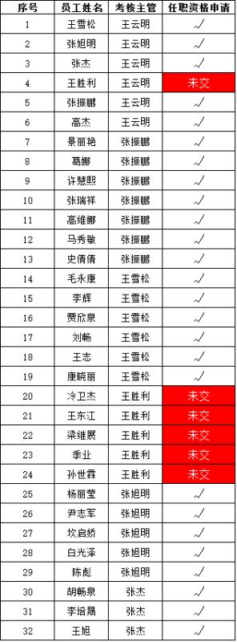
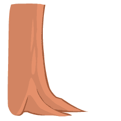
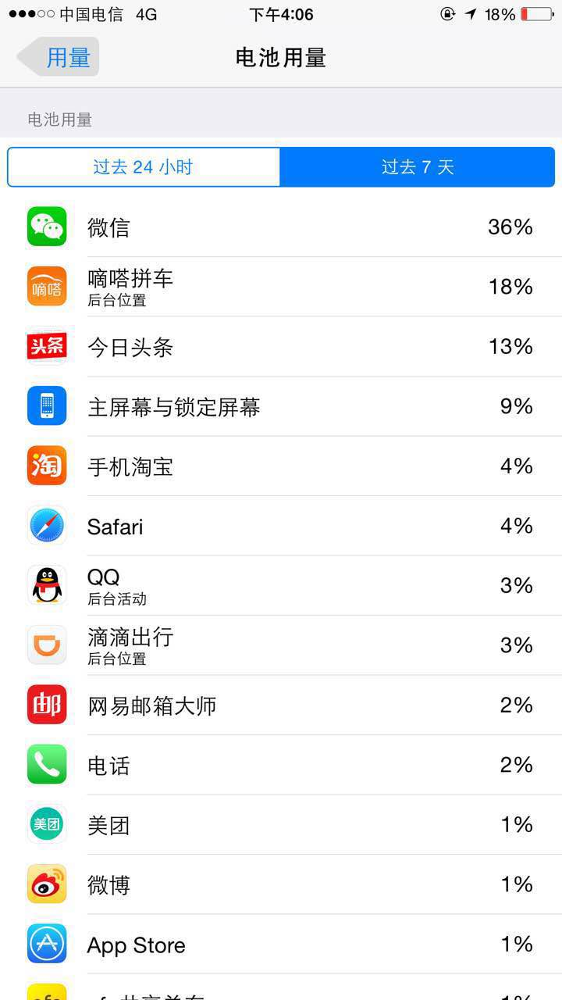
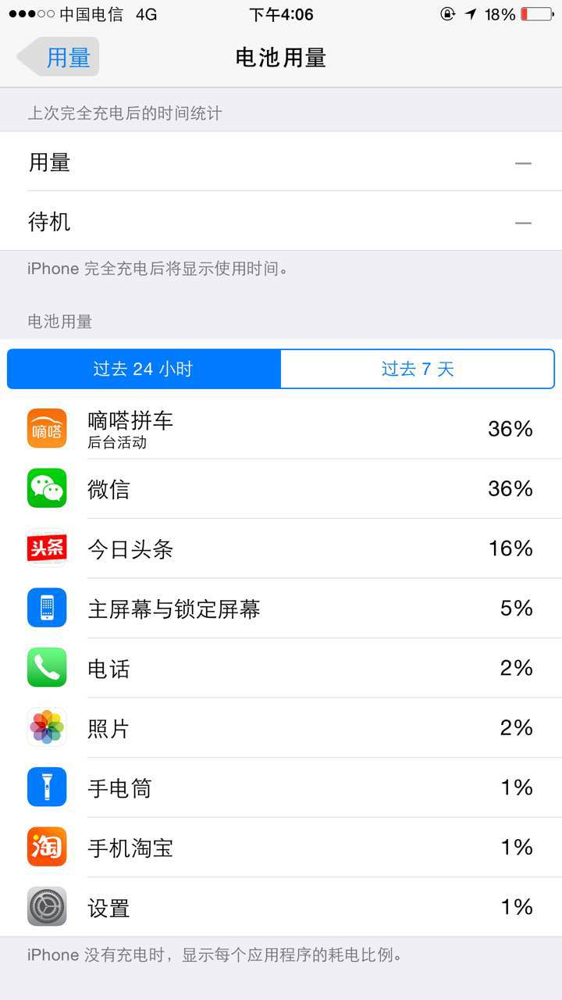
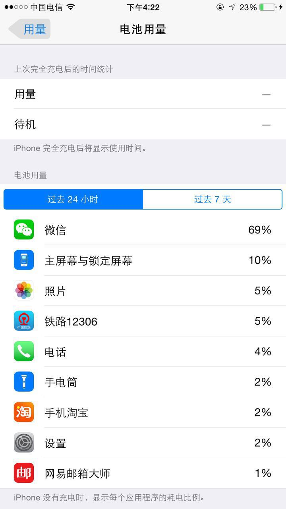
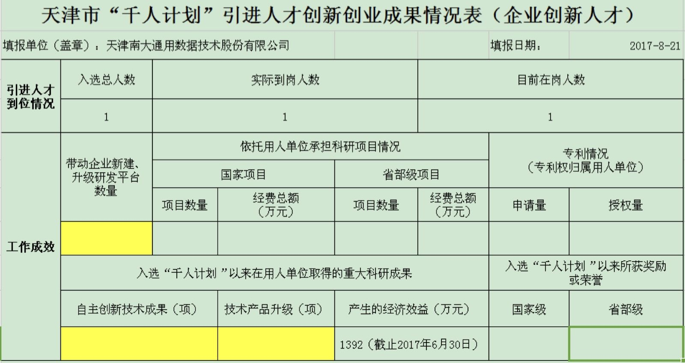

2017-08¶
2017-08-01¶
| 2017-08-01 09:40:56 | 你 | 就高杰瞎吵吵 |
| 2017-08-01 09:41:49 | 我 | 高杰是不懂瞎掺和 |
| 2017-08-01 10:59:31 | 你 | 我今天误导你了 不好意思哈 |
| 2017-08-01 11:00:32 | 我 | 你能搞明白就好😄 |
| 2017-08-01 16:53:29 | 你 | 你在最开始带我的时候 跟刘畅像吗？ |
| 2017-08-01 16:53:33 | 你 | 我跟刘畅 |
| 2017-08-01 16:53:44 | 我 | 不像呀 |
| 2017-08-01 18:11:47 | 我 | 我明天出差[抓狂][抓狂][抓狂] |
| 2017-08-01 18:11:53 | 你 | 我知道 |
| 2017-08-01 18:12:01 | 我 | 又看不见你了 |
| 2017-08-01 18:12:15 | 你 | 恩， |
| 2017-08-01 18:12:21 | 我 | [流泪] |
| 2017-08-01 18:12:27 | 你 | 王总又开始得啵 |
| 2017-08-01 18:12:43 | 你 | 看着他就不想说话 |
| 2017-08-01 18:12:46 | 我 | 是，所以我躲出来了 |
| 2017-08-01 18:13:30 | 你 | 我一会就撤 |
| 2017-08-01 18:13:36 | 我 | 嗯嗯 |
2017-08-02¶
| 2017-08-02 08:44:31 | 你 | 到哪了 |
| 2017-08-02 08:44:48 | 你 | 早上来到屋子里感觉进了化工厂 |
| 2017-08-02 08:44:56 | 我 | 刚下火车 |
| 2017-08-02 08:45:07 | 你 | 你说咱们这样的工作环境 能要孩子么 |
| 2017-08-02 08:45:49 | 我 | 确实不好 |
| 2017-08-02 08:45:56 | 我 | 污染很重 |
| 2017-08-02 08:46:19 | 你 | 唉 |
| 2017-08-02 08:47:36 | 我 | 打开窗户通风吧 |
| 2017-08-02 08:47:44 | 你 | 恩 |
| 2017-08-02 08:49:32 | 你 | 打开了 |
| 2017-08-02 08:50:03 | 我 | 嗯 |
| 2017-08-02 08:51:18 | 你 | 来了个新需求 |
| 2017-08-02 08:51:21 | 你 | 还在L2那 |
| 2017-08-02 08:51:32 | 你 | 提供行转列函数类似oracle的wm_concat函数 |
| 2017-08-02 08:51:44 | 我 | 哪个项目的 |
| 2017-08-02 08:51:52 | 你 | 南瑞 |
| 2017-08-02 08:51:57 | 你 | 晓亮提的 |
| 2017-08-02 08:52:17 | 我 | 唉，国网没完没了了 |
| 2017-08-02 08:52:42 | 你 | 是呢 |
| 2017-08-02 08:52:47 | 我 | 先看看吧，估计这个不好做。以前8a做过 |
| 2017-08-02 08:53:01 | 你 | 对了 你记得我跟你说过王总说让我调研Oracle的sql语法吧 |
| 2017-08-02 08:53:05 | 你 | 你说这个怎么做啊 |
| 2017-08-02 08:54:07 | 我 | 简单呀，把oracle的SQL手册抄一下就行了，加上和咱们的对比 |
| 2017-08-02 08:54:42 | 你 | 好吧 |
| 2017-08-02 08:56:02 | 我 | SQL不难，难的是oracle的PL/SQL，这个咱们几乎没法做 |
| 2017-08-02 08:56:46 | 我 | 还有就是各种函数的细节 |
| 2017-08-02 09:13:35 | 你 | 王总安排的这个事，我需不需要告诉高杰 |
| 2017-08-02 09:13:47 | 你 | 我给个计划，跟踪起来 |
| 2017-08-02 09:13:50 | 我 | 先不需要 |
| 2017-08-02 09:13:56 | 你 | 
|
| 2017-08-02 09:14:01 | 我 | 本来这件事情就不着急 |
| 2017-08-02 09:14:05 | 你 | 好 |
| 2017-08-02 09:14:18 | 我 | 你告诉她，她就该天天追你了 |
| 2017-08-02 09:52:49 | 我 | 我到了 |
| 2017-08-02 09:53:05 | 你 | 亲 你错过了特别精彩的 |
| 2017-08-02 09:53:30 | 你 | 冷卫杰昨天送测的 振鹏说 最基本的都实现不了 |
| 2017-08-02 09:53:40 | 你 | 今早上胜利跟冷卫杰吵起来了 |
| 2017-08-02 09:53:47 | 你 | 关键是 当着王总吵起来了 |
| 2017-08-02 09:54:01 | 你 | 王总把他们交到他办公室去了 |
| 2017-08-02 09:54:02 | 我 | 呵呵 |
| 2017-08-02 09:54:21 | 你 | 吵得可凶了 |
| 2017-08-02 09:55:53 | 我 | 哈哈 |
| 2017-08-02 10:35:13 | 你 | 老王 早上晨会张杰说了 本来年月日已经做成元素化了 结果在最后一步的时候 去判断是否年月日都写全 我还是觉得咱们这次就做成元素化的比较好 |
| 2017-08-02 10:35:15 | 你 | 你说呢 |
| 2017-08-02 10:35:59 | 你 | 因为做成不元素化的 我还得枚举 做成元素化的 我可以只写规则就行哈 |
| 2017-08-02 10:36:09 | 你 | 你的考虑还是时间是吧 |
| 2017-08-02 10:38:37 | 我 | 设计一定要元素化 |
| 2017-08-02 10:38:50 | 你 | 好吧 |
| 2017-08-02 10:38:55 | 你 | 你说了算 |
| 2017-08-02 10:39:04 | 我 | 先保证我们给用户承诺的成功场景 |
| 2017-08-02 10:39:10 | 你 | 那我罗列下列表 你回头发给唐骞 |
| 2017-08-02 10:39:11 | 你 | 好 |
| 2017-08-02 10:39:13 | 我 | 其它成功场景不要求 |
| 2017-08-02 10:39:36 | 我 | 关键是异常，这个咱俩需要讨论一下 |
| 2017-08-02 10:40:10 | 你 | 哦哦 |
| 2017-08-02 10:40:15 | 你 | 你现在忙吗 |
| 2017-08-02 10:40:18 | 你 | 能聊天吗 |
| 2017-08-02 10:40:29 | 我 | 待会吧，我找你 |
| 2017-08-02 10:40:33 | 你 | 好 |
| 2017-08-02 10:50:29 | 我 | 没啥事了，等着中午吃饭 |
| 2017-08-02 10:50:39 | 你 | 嗯嗯 |
| 2017-08-02 10:50:44 | 你 | 昨天打球的时候 |
| 2017-08-02 10:50:47 | 我 | 我在考虑是不是回公司呢 |
| 2017-08-02 10:50:57 | 你 | 我觉得可以 |
| 2017-08-02 10:51:01 | 我 | [动画表情] |
| 2017-08-02 10:51:12 | 你 | 本来我不想跟杨总说工作的事了 |
| 2017-08-02 10:51:28 | 你 | 结果一上车 杨总就问 你们王博士咋样 |
| 2017-08-02 10:51:37 | 我 | 嗯嗯 |
| 2017-08-02 10:51:51 | 你 | 我就说 还那样呗 没事总是找我们聊闲篇 我都不想跟他说话 |
| 2017-08-02 10:52:02 | 你 | 后来老杨说 他跟老王怎么样 |
| 2017-08-02 10:52:06 | 你 | 我说还那样 |
| 2017-08-02 10:52:19 | 你 | 他说 这个王博士疑心病太重了 |
| 2017-08-02 10:52:30 | 你 | 我说是 他真的太不信任人了 |
| 2017-08-02 10:52:48 | 你 | 后来老杨说 总找你们聊天 肯定是想培植自己的人 |
| 2017-08-02 10:53:01 | 你 | 我说不知道 反正我不想跟他说话 |
| 2017-08-02 10:53:13 | 我 | 嗯嗯 |
| 2017-08-02 10:53:16 | 你 | 没了 就聊了这么几句 |
| 2017-08-02 10:55:01 | 我 | 老杨知道8a来人吗 |
| 2017-08-02 10:55:07 | 你 | 对 |
| 2017-08-02 10:55:11 | 你 | 我跟老杨说了 |
| 2017-08-02 10:55:25 | 你 | 我说杨总你知道武总给我们派了3个人 |
| 2017-08-02 10:55:29 | 我 | 老杨说什么了 |
| 2017-08-02 10:55:33 | 你 | 我特意把人名告诉他了 |
| 2017-08-02 10:55:36 | 你 | 他没说啥 |
| 2017-08-02 10:55:44 | 你 | 就说 说明领导重视你们 |
| 2017-08-02 10:55:48 | 你 | 我就没说话 |
| 2017-08-02 10:56:07 | 我 | 嗯嗯 |
| 2017-08-02 11:32:25 | 我 | [链接] `昨天和技术合伙人有一场非常有趣的对话。 |
我：来讨论一个需求。 合伙人：blabla，总之这个需求不简单，需要xx时间。考虑到你这个需求一定会向后延伸，这就是一个比较大型的xx系统了。 我：别别别，千万别，我砍掉大部分需求不行吗，千万别搞大，没那么重要。你要相信我的需求控制能力。 合伙人：过去有很多项需求，你一直在要求，但一直没满足。需求本身也是合理的，但得新增1-2个程序员，才能完成你期待的运营支撑系统。 我：别别别，我会迅速砍掉不重要的需求。 我：千万别满足产品经理的每一个需求。我擅长用最低成本去实现性价比最佳的效果，和程序员讨价还价，分解需求，划分权重。这个功能耗时太长那就不做了，那个功能不重要还得半天开发，那就缩水到1小时的工作量，诸如此类。研发排期都是动态调整出来的，不是产品经理一意孤行的。 我：程序员千万别宠坏产品经理，觉得只要是合理的需求就去满足。高效率研发的前提是人少，人少的前提是砍杀低价值和高风险需求，这个前提又是产品经理能控制他计几，能把需求打成碎片去计算优先级。 <https://m.okjike.com/messages/598147114b54180011a5dadf?username=D6E3E795-DB3C-4A3C-998E-1CA06EF85BF5>`_
- 2017-08-02 11:43:42
- 我
- skip lock研发评估了吗
- 2017-08-02 12:06:52
- 你
- 2个月
- 2017-08-02 12:07:12
- 你
- 回来了吗
- 2017-08-02 12:07:24
- 你
- 最近王志新老跟我们吃饭 还做我对面
- 2017-08-02 12:07:30
- 你
- 搞得我一点食欲没有
- 2017-08-02 12:07:38
- 我
- 没有，先不回去了，我去找同学
- 2017-08-02 12:07:49
- 你
- 嗯嗯
- 2017-08-02 12:07:51
- 你
- 去吧
- 2017-08-02 12:08:02
- 我
- 是，对着丑八怪什么都不好吃了
- 2017-08-02 12:08:08
- 你
- 就是
- 2017-08-02 12:48:36
- 我
- 王胜利说出差的事情了吗
- 2017-08-02 13:30:27
- 你
- [链接] 李辉和毛永康的聊天记录
- 2017-08-02 13:30:55
- 你
- 我把我知道的跟你说下
- 2017-08-02 13:31:22
- 你
- 高杰说了，让他发邮件汇报下，我也不知道发没发
- 2017-08-02 13:32:15
- 你
- 他的意思是说，客户那边也不是咬死了不能换，说要用c++的接口好像
- 2017-08-02 13:32:56
- 你
- 下一步推进的说说他们做个demo，咱们做个东西，一起连调
- 2017-08-02 13:33:13
- 你
- 用户那边用的sql都特别简单
- 2017-08-02 13:33:30
- 你
- 就是增删改
- 2017-08-02 13:34:17
- 你
- 用户用的是win7 64位版本，看发哪个版本给他们
- 2017-08-02 13:34:21
- 我
- 嗯嗯
- 2017-08-02 13:34:34
- 你
- 他应该会汇报的
- 2017-08-02 13:34:47
- 我
- 好的
- 2017-08-02 13:35:07
- 你
- 还说时间是一个月左右，我问他他承诺了没有，他说的模棱两可
- 2017-08-02 13:35:39
- 你
- 没提oo4o以及gci的啥事情
- 2017-08-02 13:35:49
- 你
- 所以我也没听懂
- 2017-08-02 13:37:58
- 我
- 没事，就是派谁做的问题，一个月差不多
- 2017-08-02 13:38:13
- 我
- 现在就是没人做，而且需要出差
- 2017-08-02 13:39:09
- 我
- 中车modbus的事情有人提吗
- 2017-08-02 13:39:24
- 你
- 没有
- 2017-08-02 13:39:29
- 我
- 👌
- 2017-08-02 13:39:33
- 你
- 他没说出差
- 2017-08-02 13:39:37
- 我
- 那就没啥事了
- 2017-08-02 13:40:35
- 你
- 8a的人过来了
- 2017-08-02 13:42:44
- 我
- 嗯嗯
- 2017-08-02 13:42:51
- 我
- 坐哪了
- 2017-08-02 13:43:00
- 你
- 不知道
- 2017-08-02 13:43:07
- 你
- 没注意
- 2017-08-02 13:43:12
- 我
- 嗯
- 2017-08-02 13:45:07
- 我
- 你还在测to date吗
- 2017-08-02 13:46:07
- 你
- 不测了啊
- 2017-08-02 13:46:49
- 我
- 聊会天吧
- 2017-08-02 13:52:19
- 你
- 好啊
- 2017-08-02 13:52:31
- 你
- 聊会吧
- 2017-08-02 13:52:53
- 你
- 刚才老冷找我问问题了
- 2017-08-02 13:54:10
- 我
- 嗯嗯
- 2017-08-02 13:54:21
- 你
- 你不是去你同学那了
- 2017-08-02 13:54:27
- 我
- [链接] 人可以刻意选择欢乐
- 2017-08-02 13:54:28
- 我
- 你看看这个
- 2017-08-02 13:54:41
- 我
- 地铁上呢
- 2017-08-02 13:56:21
- 你
- 恩 看完了
- 2017-08-02 13:57:31
- 我
- 先说你觉得他说的有理吗
- 2017-08-02 13:58:59
- 你
- 有道理
- 2017-08-02 14:00:21
- 我
- 嗯嗯，其实她说的就是中国古典哲学里面强调的东西
- 2017-08-02 14:00:32
- 你
- 是吧
- 2017-08-02 14:00:39
- 我
- 重思想轻欲望
- 2017-08-02 14:00:44
- 你
- 恩
- 2017-08-02 14:00:51
- 你
- 欲望没有止境
- 2017-08-02 14:01:02
- 我
- 是
- 2017-08-02 14:01:26
- 你
- 所以不看透欲望必然成为欲望的奴隶
- 2017-08-02 14:01:33
- 我
- 没错
- 2017-08-02 14:01:52
- 你
- 我知道你发我这篇文章想教我什么
- 2017-08-02 14:02:01
- 我
- 你说说
- 2017-08-02 14:02:02
- 你
- 你让我做瑜伽
- 2017-08-02 14:02:09
- 我
- 哈哈，不是啦
- 2017-08-02 14:02:19
- 你
- 不是 不是
- 2017-08-02 14:02:21
- 你
- 我没说完呢
- 2017-08-02 14:02:25
- 我
- 嗯嗯
- 2017-08-02 14:03:18
- 你
- 你是想让我体验一下精神世界
- 2017-08-02 14:03:32
- 你
- 弱化一切身体触觉
- 2017-08-02 14:03:38
- 我
- 嗯
- 2017-08-02 14:03:42
- 你
- 把精神集中到精神上
- 2017-08-02 14:04:08
- 我
- 嗯
- 2017-08-02 14:04:12
- 你
- 这样做的极限结果我给你举几个例子
- 2017-08-02 14:04:18
- 我
- 好呀
- 2017-08-02 14:04:29
- 你
- 比如天气特别热 或者身体由于创伤很疼
- 2017-08-02 14:05:23
- 你
- 如果能够把自己进去瑜伽的状态 或者是冥想的状态 我就成了他我 触觉就变得没有那么清晰
- 2017-08-02 14:05:31
- 你
- 至少可以减轻点痛苦吧
- 2017-08-02 14:05:36
- 我
- 嗯嗯
- 2017-08-02 14:06:07
- 你
- 还有就是 把我变成他我 可以帮助我找第三者视角
- 2017-08-02 14:06:30
- 我
- 嗯嗯
- 2017-08-02 14:06:42
- 我
- 还有吗
- 2017-08-02 14:07:30
- 你
- 没了
- 2017-08-02 14:07:57
- 我
- 嗯，基本上和你现在的认知程度相符
- 2017-08-02 14:08:08
- 我
- 我说说我看见的吧
- 2017-08-02 14:08:13
- 你
- 好
- 2017-08-02 14:08:27
- 我
- 首先关注的是快乐
- 2017-08-02 14:08:54
- 我
- 其次是生活在精神领域
- 2017-08-02 14:09:28
- 我
- 也就是说在精神领域可以做自己喜欢的事情，从而给自己带来快乐
- 2017-08-02 14:09:36
- 你
- 哦
- 2017-08-02 14:10:06
- 我
- 也正是因为从精神领域就可以获得快乐，从欲望获得快乐就不那么重要了
- 2017-08-02 14:10:30
- 我
- 这需要长期的修行
- 2017-08-02 14:11:06
- 我
- 你说的是这个在低维度的一个投影
- 2017-08-02 14:11:57
- 我
- 那种冥想的快乐你应该是体会过的
- 2017-08-02 14:13:48
- 你
- 不是很清晰
- 2017-08-02 14:14:36
- 你
- 你说通过满足欲望得到快乐的方式 为什么不好
- 2017-08-02 14:15:02
- 你
- 无止境对吗
- 2017-08-02 14:15:13
- 你
- 不受控
- 2017-08-02 14:15:46
- 我
- 对
- 2017-08-02 14:16:07
- 你
- 而且并不是什么欲望都能得到满足
- 2017-08-02 14:16:21
- 我
- 没错
- 2017-08-02 14:16:33
- 你
- 明白了
- 2017-08-02 14:18:20
- 我
- 满足欲望只能获得低级的快乐
- 2017-08-02 14:19:25
- 你
- 低级怎么理解
- 2017-08-02 14:21:12
- 我
- 就像人的神经活动，低级的只能做一些简单的，高级的是复杂的
- 2017-08-02 14:21:32
- 你
- 嗯嗯
- 2017-08-02 14:21:52
- 我
- 需求金字塔下面的就是低级的
- 2017-08-02 14:21:57
- 你
- 恩
- 2017-08-02 14:21:58
- 你
- 是
- 2017-08-02 14:22:14
- 你
- 你看 王总喜欢别人拍马屁
- 2017-08-02 14:22:38
- 你
- 因为拍马屁能够满足他受人尊重 认可的需求
- 2017-08-02 14:22:43
- 我
- 嗯
- 2017-08-02 14:22:47
- 你
- 而你 就不需要
- 2017-08-02 14:23:21
- 你
- 因为被人尊重 认可已经不会让你获得像他那么多的快乐
- 2017-08-02 14:23:27
- 我
- 是
- 2017-08-02 14:23:33
- 你
- 你追求的是更高层次的快乐 对不对
- 2017-08-02 14:23:54
- 我
- 是的
- 2017-08-02 14:24:12
- 我
- 说说你吧，你现在追求的是什么快乐
- 2017-08-02 14:24:39
- 你
- 我觉得 我还没有财务自由到只追求精神快乐的程度
- 2017-08-02 14:25:11
- 你
- 我现在还是觉得 欲望能够满足 是件特别快乐 幸福的事
- 2017-08-02 14:25:20
- 我
- 哈哈，财务自由不是只追求精神快乐的前提。我也没有财务自由
- 2017-08-02 14:25:28
- 我
- 嗯嗯
- 2017-08-02 14:25:29
- 你
- 哈哈
- 2017-08-02 14:25:47
- 你
- 但是 我现在会用精神控制自己减轻痛苦
- 2017-08-02 14:26:00
- 你
- 我从精神层面获得的快乐还是有限的
- 2017-08-02 14:26:04
- 我
- 嗯嗯
- 2017-08-02 14:26:17
- 你
- 而且还会经历漫长的痛苦 才会获得一点点顿悟的快乐
- 2017-08-02 14:26:35
- 我
- 你现在还是被动的，把精神当成一种工具而不是道
- 2017-08-02 14:26:43
- 你
- 等我顿悟了 发现 周围还是会有很多 比我早悟出这些道理的人
- 2017-08-02 14:27:13
- 你
- 其实 换个角度想
- 2017-08-02 14:27:54
- 你
- 本来我会发脾气 或者 悲伤 难过 愤怒的情绪 都变得平静 也是幸福的一种表现
- 2017-08-02 14:28:14
- 你
- 而且我能看到我周围很多人 因为没有看透 依然悲伤 痛苦 愤怒
- 2017-08-02 14:28:16
- 你
- 哈哈
- 2017-08-02 14:28:30
- 你
- 昨天小宁 就找我了 跟他对象吵架了
- 2017-08-02 14:29:41
- 我
- 哦
- 2017-08-02 15:08:43
- 你
- 这旭明咋搞得 PBC拖到现在
- 2017-08-02 15:08:48
- 你
- 点名批评了都
- 2017-08-02 15:09:55
- 我
- 谁批评的
- 2017-08-02 15:10:19
- 你
- 群里刘畅把名单贴出来了
- 2017-08-02 15:10:35
- 我
- 哦
- 2017-08-02 15:11:21
- 你
- 这个刘畅 真是够了
- 2017-08-02 16:44:08
- 我
- 亲，忙啥呢？我出来了
- 2017-08-02 17:47:04
- 你
- 刚才评审
- 2017-08-02 17:47:10
- 你
- 我一会给你打电话
- 2017-08-02 17:47:33
- 我
- [动画表情]
- 2017-08-02 18:13:21
- 我
- 上车了
- 2017-08-02 18:13:47
- 你
- 恩
- 2017-08-02 18:14:01
- 你
- 我跟你说下我今天评审的时候 又跟王胜利吵起来了
- 2017-08-02 18:14:44
- 我
- 简直了，这个人是不是有毛病，一天吵两架
- 2017-08-02 18:15:28
- 你
- 由问题分析可知，国网南瑞项目的用户需求为：8s在现有基础上支持，列数据写入（更新）空字符串时，对其进行查询的结果与写入（更新）null值时保持一致。 ➢ 支持的数据类型：varchar、char； ➢ 支持的操作：insert、update； ➢ 支持的查询方式：is null 、is not null。
- 2017-08-02 18:15:33
- 你
- 这个是用需部分
- 2017-08-02 18:15:51
- 我
- 嗯嗯
- 2017-08-02 18:16:04
- 你
- 然后他问 nchar做吗
- 2017-08-02 18:16:14
- 你
- insert ….select 做吗
- 2017-08-02 18:16:22
- 你
- 然后就开始了漫长的讨论
- 2017-08-02 18:16:37
- 我
- 嗯
- 2017-08-02 18:16:50
- 你
- 我说这个涉及向下兼容问题 我给不出答案
- 2017-08-02 18:16:54
- 你
- 不属于需求范畴
- 2017-08-02 18:17:00
- 你
- 今天王总也参加了
- 2017-08-02 18:17:02
- 我
- 嗯
- 2017-08-02 18:17:25
- 你
- 然后他就一直说 要做成一样的
- 2017-08-02 18:17:32
- 你
- 我说我定不了
- 2017-08-02 18:17:48
- 我
- 嗯
- 2017-08-02 18:17:52
- 你
- 我说你想做成一样的 你可以给建议 我不负责回答
- 2017-08-02 18:18:26
- 你
- 我说了 你想做成一样的 那是你实现成那个样子 不是用户需求 用户需求就是我写的这些
- 2017-08-02 18:18:34
- 你
- 就是一直吵一直吵
- 2017-08-02 18:18:48
- 你
- 王总是向着我说的
- 2017-08-02 18:18:59
- 我
- 嗯嗯，这样好
- 2017-08-02 18:19:23
- 你
- 后来就这么散了
- 2017-08-02 18:19:29
- 你
- 我就找王总去了
- 2017-08-02 18:19:35
- 你
- 就这事告他状
- 2017-08-02 18:19:40
- 我
- 嗯嗯
- 2017-08-02 18:19:58
- 你
- 跟王总说了好多
- 2017-08-02 18:20:54
- 你
- 我说按产品还是项目这个决策要考虑很多因素 研发的实现难度很大分量的考虑因素 实现简单还是难我需求没能力绝对 给不出建议 这个事情以后不在需求评审的时候讨论
- 2017-08-02 18:22:59
- 我
- 嗯嗯，说得好
- 2017-08-02 18:23:10
- 你
- 我跟王总说 每次他都这样 我觉得这不做事 这是政治
- 2017-08-02 18:23:18
- 你
- 他浪费的是大家的时间
- 2017-08-02 18:23:34
- 我
- 哈哈，你一下就说到点上了
- 2017-08-02 18:23:46
- 我
- 王总说什么了
- 2017-08-02 18:24:03
- 你
- 王总说 是
- 2017-08-02 18:24:07
- 你
- 让我写封邮件
- 2017-08-02 18:24:15
- 你
- 说下次在周一会上会说
- 2017-08-02 18:24:19
- 我
- 嗯嗯
- 2017-08-02 18:24:22
- 你
- 我到不寄希望于他能做什么
- 2017-08-02 18:24:31
- 你
- 我就说 这个王胜利就是没事找事
- 2017-08-02 18:24:35
- 你
- 一上来就是找事的
- 2017-08-02 18:24:48
- 你
- 你没看到他那个态度
- 2017-08-02 18:25:07
- 你
- 需求评审 在现状描述的时候就挑刺
- 2017-08-02 18:25:10
- 我
- 是
- 2017-08-02 18:25:31
- 你
- 你知道挑啥次不
- 2017-08-02 18:25:53
- 你
- 需求写的 null键入的时候就行 复制粘贴就不行 就变成单引号
- 2017-08-02 18:26:06
- 你
- 他说不信 要抓sql来看
- 2017-08-02 18:26:18
- 你
- 我说这个就是这样的 一线说的现状
- 2017-08-02 18:26:41
- 我
- 嗯嗯
- 2017-08-02 18:26:56
- 你
- 他不信 要看sql
- 2017-08-02 18:27:18
- 你
- 后来说服他信了 他又说这个是UI的bug
- 2017-08-02 18:27:21
- 你
- 不是数据库的
- 2017-08-02 18:27:34
- 我
- [动画表情]
- 2017-08-02 18:28:04
- 你
- 让我确认是不是ui的bug 是的话让用户改
- 2017-08-02 18:28:20
- 你
- 我说可以
- 2017-08-02 18:28:27
- 你
- 我刚才跟晓亮确认了
- 2017-08-02 18:28:39
- 你
- 晓亮说这个就是UI的bug但是人家就是不该
- 2017-08-02 18:28:50
- 你
- 就非得让数据库改
- 2017-08-02 18:28:57
- 你
- 一会我发邮件回复
- 2017-08-02 18:29:05
- 我
- 哈哈，那就让王胜利去说服人家吧
- 2017-08-02 18:29:52
- 你
- 一回 我就回复
- 2017-08-02 18:30:02
- 你
- 别的就没啥了
- 2017-08-02 18:30:05
- 你
- 就这么点事
- 2017-08-02 18:30:32
- 我
- 嗯嗯，以后咱们得想想办法了
- 2017-08-02 18:30:50
- 我
- 其实王胜利翻来覆去也就是这几招
- 2017-08-02 18:31:13
- 你
- 这些问题从始至终 张杰就没说话 张杰也没问题
- 2017-08-02 18:31:20
- 你
- 还向着我说了两句
- 2017-08-02 18:31:21
- 我
- 咱们以后得有准备，省得让他在那瞎说
- 2017-08-02 18:31:23
- 你
- 就是他
- 2017-08-02 18:31:31
- 我
- 嗯嗯
- 2017-08-02 18:34:24
- 我
- 今天早上他们吵架的事，后来王总说了吗
- 2017-08-02 18:34:31
- 你
- 没有
- 2017-08-02 18:34:38
- 你
- 冷卫杰也是怂货
- 2017-08-02 18:34:49
- 我
- 是
- 2017-08-02 18:34:50
- 你
- 一劝和就好了
- 2017-08-02 18:35:26
- 我
- 不过这么一折腾，倒是大家都知道王胜利是什么样的了
- 2017-08-02 18:35:41
- 你
- 唉
- 2017-08-02 18:36:20
- 我
- 高杰没说什么吗
- 2017-08-02 18:38:17
- 你
- 他说啥啊
- 2017-08-02 18:38:31
- 你
- 他啥也说不到点子上 根本插不上话
- 2017-08-02 18:38:44
- 我
- 😄
- 2017-08-02 18:39:38
- 我
- 其实她除了计划，什么也管不了，所以就要求大家不论事情大小都要有计划
- 2017-08-02 18:40:07
- 我
- 昨天刘辉还和我抱怨高杰瞎管呢
- 2017-08-02 18:40:19
- 你
- 是吧
- 2017-08-02 18:40:33
- 你
- 但是刘辉当着王总的面 总是夸高杰
- 2017-08-02 18:40:51
- 我
- 刘辉那是一个人精
- 2017-08-02 18:41:03
- 你
- 恩
- 2017-08-02 18:41:17
- 你
- 我觉得刘辉对我可好了 是不是你给他管的迷魂汤
- 2017-08-02 18:41:58
- 我
- 😄，这个可真没有。是你自己的魅力和能力征服了他
- 2017-08-02 18:42:52
- 你
- 真的假的
- 2017-08-02 18:42:58
- 你
- 我跟他接触并不多
- 2017-08-02 18:43:10
- 我
- 当然是真的啦
- 2017-08-02 18:43:32
- 我
- 我和他没怎么说过你
- 2017-08-02 18:43:39
- 你
- 啊
- 2017-08-02 18:43:48
- 你
- 那估计是他们那边的人说过
- 2017-08-02 18:43:53
- 我
- 嗯嗯
- 2017-08-02 18:44:03
- 你
- 我是觉得他对我很认可 只是对需求的存在很认可
- 2017-08-02 18:44:52
- 我
- 这倒是，咱们现在比dsd做的好得多，刘辉说过很多次咱们像个干事的样子
- 2017-08-02 18:45:06
- 你
- 是吧
- 2017-08-02 18:45:28
- 我
- 再说咱们需求从来没有掉过链子
- 2017-08-02 18:45:59
- 你
- 就是
- 2017-08-02 18:46:17
- 我
- dsd那边才乱呢
- 2017-08-02 18:46:35
- 你
- 是吧
- 2017-08-02 18:47:01
- 我
- 他们就没有正式的需求
- 2017-08-02 18:47:44
- 我
- 下车了
- 2017-08-02 18:47:50
- 你
- 嗯嗯
- 2017-08-02 19:09:58
- 你
- 各位，好， 对于问题列表的问题一确认结果如下：现状就是需求文档中现状描述的行为，D5000知道是界面设计的不完善，但是不接受改应用，必须要8s兼容Oracle、达梦的行为。如果有异议可去南京拒绝需求。 另外， 对于争议较大的开发范围问题（是按照产品开发还是项目开发）：这个决策需要综合考虑很多因素，比如：用户真实的需求范围、研发实现的难度及时间、一线对feature要求的紧急程度等，决策一定是权衡各因素给出的结果。 作为需求方，只能提供用户真实的需求，并对需求的正确性负责，其他的信息获取不到。同时，需求作为流程三方中的1/3，视角难免单一，做产品级决策很可能误导研发及测试。因此，对于开发范围的问题，需求方不负责给出决策。 对于评审的效率问题：评审会评的是流程中下一级对上一级的符合程度，落实到用需，评审的是需求分析是否正确，是否为用户真实需求。与此目标不相关的开发范围问题等，可会后讨论，尽量不占用大家时间。请各位评委明确评审目标，提高评审效率。
- 2017-08-02 19:11:19
- 你
- 这么说行不
- 2017-08-02 19:11:37
- 我
- 我正在看，稍等
- 2017-08-02 19:13:23
- 我
- 两个点
- 2017-08-02 19:13:30
- 你
- 恩 说说
- 2017-08-02 19:13:33
- 你
- 你到家了吗
2017-08-03¶
| 2017-08-03 10:59:31 | 我 | 亲，干啥呢 |
| 2017-08-03 11:01:35 | 你 | 困 |
| 2017-08-03 11:02:12 | 我 | 唉，先歇会吧 |
| 2017-08-03 11:04:57 | 我 | 高杰是不是又写错了，应该是146 dll的事情，不是122 |
| 2017-08-03 11:06:01 | 你 | 是 |
| 2017-08-03 11:06:06 | 你 | 你们谈的怎么样了 |
| 2017-08-03 11:06:24 | 我 | 不怎么样，工作量都太大 |
| 2017-08-03 11:07:00 | 我 | 我懒得和他们谈了 |
| 2017-08-03 11:07:50 | 我 | 张杰的想法也只是解决眼前的问题，视野太小 |
| 2017-08-03 11:07:59 | 你 | 是吧 |
| 2017-08-03 11:13:54 | 我 | 又回到原点了 |
| 2017-08-03 11:14:10 | 你 | 又被否了啊 |
| 2017-08-03 11:14:49 | 我 | 唉，王总不拍板，大家都坚持自己的 |
| 2017-08-03 11:16:01 | 你 | 唉 他就是这样 |
| 2017-08-03 11:16:03 | 你 | 等吧 |
| 2017-08-03 11:16:25 | 我 | 你去吃饭吧，早点回来睡觉 |
| 2017-08-03 13:35:20 | 我 | 好点吗 |
| 2017-08-03 13:35:24 | 你 | 恩 |
| 2017-08-03 13:35:30 | 你 | 好多了 |
| 2017-08-03 13:35:36 | 你 | 我就是困的 |
| 2017-08-03 13:35:48 | 我 | 嗯嗯，最近是不是没睡好 |
| 2017-08-03 13:35:52 | 你 | 是啊 |
| 2017-08-03 13:35:59 | 你 | 一直睡得都特别不好 |
| 2017-08-03 13:36:25 | 我 | 我记得你有一阵睡的还可以 |
| 2017-08-03 13:36:57 | 你 | 上周末 没补好 |
| 2017-08-03 13:37:12 | 我 | 嗯嗯 |
| 2017-08-03 13:37:24 | 你 | 这周睡得不好 昨天睡得还可以 结果没睡够就上班来了 |
| 2017-08-03 13:37:40 | 我 | 嗯 |
| 2017-08-03 13:42:16 | 你 | 
|
| 2017-08-03 13:42:37 | 你 | 这个表情是不是很逗 |
| 2017-08-03 13:42:42 | 我 | 是 |
| 2017-08-03 13:52:53 | 你 | 王胜利回邮件了 |
| 2017-08-03 13:53:01 | 我 | 正在看 |
| 2017-08-03 14:38:25 | 你 | 真的，也许梦是做不了一辈子，那就让它成为真的好了！我和你就要努力进取，永不休止。对事业是这样，对美也是这样。有限的一切都不能让人满足，向无限进军中才能让人满足。无限不可能枯燥啊，好银河。永远会有新东西在我们面前出现的。哥伦布发现了新大陆，哥白尼又发现了新宇宙，这是一条光荣的荆棘路。 美也是无穷的，可怜的就是人的生命、人的活力是有穷的。可惜我看不到无穷的一切。但是我知道它存在，我向往它。我会老也会死，势必有一天我也会衰老得无力进取的。可是我不怕。在什么事物消失之前，我们先要让它存在啊。我记得有这么一支歌：“在门前清泉旁边，有一棵菩提树，在它的树荫下面，我做过甜蜜的梦……在它的树荫下面，我做过甜蜜的梦，无论是欢乐和悲伤，我总到那里去。”我愿做你的菩提树，你也来做我的吧。 |
| 2017-08-03 14:38:31 | 你 | 这两段写的不错 |
| 2017-08-03 14:40:37 | 我 | 嗯嗯 |
| 2017-08-03 14:40:44 | 我 | 你看王总回的了吗 |
| 2017-08-03 14:40:55 | 你 | 看了 |
| 2017-08-03 14:41:18 | 你 | 啥意思 |
| 2017-08-03 14:41:48 | 我 | 就是挺你呀 |
| 2017-08-03 14:42:04 | 我 | 要求研发先分析需求 |
| 2017-08-03 14:43:02 | 你 | 好 |
| 2017-08-03 14:43:24 | 你 | 他不支持我 我也得陪着王胜利玩下去 我有的是时间 玩死他 |
| 2017-08-03 14:43:32 | 我 | 嗯嗯 |
| 2017-08-03 14:43:34 | 我 | 就是 |
| 2017-08-03 14:44:10 | 我 | 说实话，王总不回我也想回的 |
| 2017-08-03 14:44:18 | 你 | 没事 |
| 2017-08-03 14:44:32 | 你 | 我回玩他不是回了入库么 |
| 2017-08-03 14:44:44 | 你 | 他要是还回 咱们就当面说得说得 |
| 2017-08-03 14:45:45 | 我 | 对，我支持你。咱俩一起扁他 |
| 2017-08-03 14:45:59 | 你 | 哈哈 你敢不支持我 |
| 2017-08-03 14:46:42 | 你 | to——date的 用需我改好了 是根据咱们今天定的改的，如果唐骞回复邮件 同意的话 咱们就跟他定时间就行 |
| 2017-08-03 14:47:42 | 我 | 嗯嗯 |
| 2017-08-03 14:59:38 | 你 | to_date函数的你把王总从邮件里删了？ |
| 2017-08-03 15:00:13 | 我 | 没有吧，我没注意 |
| 2017-08-03 15:00:36 | 你 | 没有 |
| 2017-08-03 15:00:55 | 你 | 我看到了 你给他改名字了吧 写的是王总 我这写的是wangyunming |
| 2017-08-03 15:00:59 | 你 | 没事没事 |
| 2017-08-03 15:01:25 | 我 | 嗯嗯 |
| 2017-08-03 15:16:24 | 我 | 亲，干啥呢 |
| 2017-08-03 15:17:11 | 你 | 看Oracle的sql手册呢 |
| 2017-08-03 15:17:22 | 我 | 兼容性？ |
| 2017-08-03 15:17:30 | 你 | 王总安排的那个活 |
| 2017-08-03 15:17:44 | 我 | 嗯嗯 |
| 2017-08-03 15:18:18 | 我 | 聊天吗 |
| 2017-08-03 15:18:31 | 你 | 可以啊 |
| 2017-08-03 15:18:53 | 你 | 聊啥啊 |
| 2017-08-03 15:19:14 | 我 | 那本书你看完了吗 |
| 2017-08-03 15:19:32 | 你 | 大道吗 |
| 2017-08-03 15:19:35 | 你 | 早看完了 |
| 2017-08-03 15:19:44 | 你 | 你给我再推荐一本吧 |
| 2017-08-03 15:20:01 | 我 | 哈哈，那有那么多书 |
| 2017-08-03 15:20:10 | 我 | 这类书太少了 |
| 2017-08-03 15:20:15 | 你 | 别太难得 |
| 2017-08-03 15:20:21 | 你 | 太难的看不了 |
| 2017-08-03 15:21:34 | 我 | 你觉得这本书难吗 |
| 2017-08-03 15:21:53 | 你 | 还好吧 不算难 |
| 2017-08-03 15:22:05 | 你 | 比大象简单 |
| 2017-08-03 15:22:10 | 我 | 好，我再找找这个难度的书吧 |
| 2017-08-03 15:22:23 | 我 | 其实我觉得这个比大象简单 |
| 2017-08-03 15:22:31 | 你 | |
| 2017-08-03 15:22:47 | 你 | 大象难 |
| 2017-08-03 15:22:50 | 我 | 不过这两个不是一个维度的 |
| 2017-08-03 15:23:20 | 我 | 大象那个更需要的是内视、自省 |
| 2017-08-03 15:31:28 | 我 | 接着聊呀 |
| 2017-08-03 15:31:40 | 你 | 你电脑里的东西没事吧 |
| 2017-08-03 15:31:47 | 我 | 没事 |
| 2017-08-03 15:31:53 | 我 | 他们没有权限 |
| 2017-08-03 15:32:05 | 你 | 好 |
| 2017-08-03 15:32:18 | 你 | 微信退了么 |
| 2017-08-03 15:32:34 | 我 | 不用，他们进不到我的界面 |
| 2017-08-03 15:33:02 | 你 | OK |
| 2017-08-03 15:33:13 | 我 | 这点安全性苹果还是做得到的 |
| 2017-08-03 15:33:29 | 你 | 好滴 |
| 2017-08-03 15:34:35 | 我 | 昨天我给你发的纯银的微博你看了吗 |
| 2017-08-03 15:34:41 | 你 | 看了 |
| 2017-08-03 15:35:01 | 你 | 跟我们昨天吵架的这个正好有点关系 |
| 2017-08-03 15:35:11 | 你 | 跟to_date也有关系 |
| 2017-08-03 15:35:14 | 我 | 是 |
| 2017-08-03 15:35:20 | 你 | 就是开发范围的事 |
| 2017-08-03 15:35:37 | 我 | 嗯嗯 |
| 2017-08-03 15:37:56 | 我 | 纯银的项目是自己的，所以他自己砍起需求不用犹豫 |
| 2017-08-03 15:42:00 | 我 | 而且他现在的主要问题是时间，所以非本质需求就可以不做 |
| 2017-08-03 15:42:18 | 你 | 我先弄我的材料吧 |
| 2017-08-03 15:42:26 | 我 | 不着急 |
| 2017-08-03 15:42:40 | 你 | 那怎么就没我们的信息呢 |
| 2017-08-03 15:42:44 | 你 | 能不着急么 |
| 2017-08-03 15:43:01 | 我 | 就是刘畅瞎整的 |
| 2017-08-03 15:43:25 | 你 |  |
| 2017-08-03 15:43:39 | 你 | 这张表我的打勾了 |
| 2017-08-03 15:43:43 | 我 | 这个事情不需要组长参与，就是个人自愿，先给刘畅发个邮件说一下就行了 |
| 2017-08-03 15:43:44 | 你 | 我不知道是啥意思 |
| 2017-08-03 15:43:58 | 我 | 他非得整的这么麻烦 |
| 2017-08-03 15:44:15 | 你 | 我给刘畅发邮件吗 |
| 2017-08-03 15:44:36 | 我 | 你们没有是因为我这个产品组组长没有向刘畅汇报，他就给我整这么一出 |
| 2017-08-03 16:57:20 | 我 | 今天都没空和你聊天了 |
| 2017-08-03 16:57:47 | 你 | 咋了 |
| 2017-08-03 16:57:50 | 你 | 你干嘛去了啊 |
| 2017-08-03 16:58:28 | 我 | 旭明rss，和8a的人同步信息 |
| 2017-08-03 16:58:44 | 你 | 好吧 |
| 2017-08-03 16:58:52 | 你 | 王总找杨丽颖干啥啊 |
| 2017-08-03 16:59:06 | 你 | 这种同步还得你陪着啊 |
| 2017-08-03 16:59:44 | 我 | 我就是刷刷存在感，省得王总把我洗出来 |
| 2017-08-03 17:00:16 | 我 | 我不知道他找这些人谈什么，刚才还找东江和陈彪谈了 |
| 2017-08-03 17:29:36 | 你 | [链接] 孙晓亮和李辉的聊天记录 |
| 2017-08-03 18:09:34 | 我 | 王总已经把他们讲糊涂了 |
| 2017-08-03 18:10:09 | 我 | 说是解决rss的问题，结果给人家讲了很多1440列的问题 |
| 2017-08-03 18:10:39 | 我 | 人家以为这次要解决1440列上的rss同步问题[捂脸] |
| 2017-08-03 18:11:36 | 你 | 哈哈 |
| 2017-08-03 18:11:40 | 你 | 太搞笑了 |
| 2017-08-03 18:12:06 | 我 | 是的 |
| 2017-08-03 18:12:19 | 你 | 人家以为这次要解决1440列上的rss同步问题 |
| 2017-08-03 18:12:25 | 你 | 这个太搞笑了 |
| 2017-08-03 18:13:19 | 我 | 唉，简直了 |
| 2017-08-03 18:13:34 | 你 | 他就老爱举例子 |
{kind=link}
{kind=link}
2017-08-04¶
| 2017-08-04 09:21:55 | 我 | 你又玩手机，王总就在你边上呢 |
| 2017-08-04 09:54:41 | 我 | 你咋了，又困了？ |
| 2017-08-04 09:54:51 | 你 | 没事 |
| 2017-08-04 09:54:56 | 你 | 站的有点腰疼 |
| 2017-08-04 09:55:10 | 你 | 可能穿的太多了 |
| 2017-08-04 09:55:11 | 我 | 啊 |
| 2017-08-04 09:55:22 | 我 | 不会吧，比昨天少呀 |
| 2017-08-04 10:02:44 | 我 | 看着你好像还是很累的样子，从早上来就一直叹气 |
| 2017-08-04 10:04:40 | 你 | 我没事 |
| 2017-08-04 10:04:41 | 你 | 真的 |
| 2017-08-04 10:05:12 | 我 | 好吧 |
| 2017-08-04 10:07:55 | 我 | [链接] 王雪松和李迎的聊天记录 |
| 2017-08-04 10:10:12 | 你 | 李迎说的是啥意思 |
| 2017-08-04 10:10:16 | 你 | 什么管理工具 |
| 2017-08-04 10:11:12 | 我 | 就是说升等是部门的一个管理工具，用来约束、奖励部门员工的 |
| 2017-08-04 10:11:31 | 你 | 哦 |
| 2017-08-04 10:11:43 | 你 | 那这个比较复杂啊 |
| 2017-08-04 10:11:53 | 你 | 这个口一开 后患无穷 |
| 2017-08-04 10:12:00 | 你 | 估计以后都没有等的概念了 |
| 2017-08-04 10:12:20 | 我 | 对呀，所以今天会上我赶紧给拦住了，不然以后就没法管了 |
| 2017-08-04 10:12:35 | 我 | 你看看我给你转的邮件 |
| 2017-08-04 10:12:50 | 你 | 这4等 也是自己在经验上积累 |
| 2017-08-04 10:13:05 | 你 | 非常不建议跳等 |
| 2017-08-04 10:13:09 | 我 | 是 |
| 2017-08-04 10:13:28 | 你 | 到时候岂不是我表现好 今年2-1，明年就升级 |
| 2017-08-04 10:13:31 | 你 | 你们还不忙死 |
| 2017-08-04 10:13:32 | 我 | 我觉得你可以 |
| 2017-08-04 10:13:43 | 你 | 而且委员会又不监督 |
| 2017-08-04 10:13:49 | 你 | 都是部门说了算 |
| 2017-08-04 10:13:54 | 我 | 你这两年成长的不错 |
| 2017-08-04 10:14:01 | 你 | 恩 我不想跳 |
| 2017-08-04 10:14:18 | 我 | 你说的对，就是给部门的权力 |
| 2017-08-04 10:14:20 | 你 | 我想再沉淀2年 升3级的时候跳一下 |
| 2017-08-04 10:14:37 | 我 | 3级没法跳了，亲 |
| 2017-08-04 10:14:44 | 你 | 评委给的更有说服力 |
| 2017-08-04 10:14:58 | 你 | 我说我升3级的时候 直接升到3-2或者3-3 |
| 2017-08-04 10:15:04 | 你 | 不在3-1了 |
| 2017-08-04 10:15:08 | 我 | 那没有问题 |
| 2017-08-04 10:15:30 | 你 | 部门跳等的 部门经理说了算 没有说服力 |
| 2017-08-04 10:15:34 | 我 | 今年给你两等，明年你就可以考虑升级了 |
| 2017-08-04 10:15:45 | 我 | 😁，谁说的 |
| 2017-08-04 10:15:52 | 你 | 明年我可能要小孩 |
| 2017-08-04 10:15:53 | 你 | 嘻嘻 |
| 2017-08-04 10:16:05 | 我 | 嗯 |
| 2017-08-04 10:16:20 | 你 | 其实我觉得我现在去3级答辩 我都有把握过 |
| 2017-08-04 10:16:24 | 你 | 真的 一点不骗你 |
| 2017-08-04 10:16:25 | 我 | 对呀 |
| 2017-08-04 10:16:32 | 我 | 我也觉得 |
| 2017-08-04 10:16:42 | 你 | 我昨天简单想了下 |
| 2017-08-04 10:16:50 | 你 | 感觉很有思路 |
| 2017-08-04 10:17:06 | 我 | 其实你现在除了经验，比洪越强多了 |
| 2017-08-04 10:17:15 | 你 | 是呗 |
| 2017-08-04 10:17:24 | 你 | 可是大家都觉得我年轻 不相信我 |
| 2017-08-04 10:17:31 | 我 | 需求你已经没有什么大的问题了 |
| 2017-08-04 10:17:35 | 我 | 嗯嗯 |
| 2017-08-04 10:17:54 | 你 | 晓亮还说 等有机会 当着我的老板表扬我需求做得好 |
| 2017-08-04 10:18:16 | 我 | 哈哈，其实我觉得王总应该知道你需求做的好 |
| 2017-08-04 10:18:28 | 你 | 我不知道他知不知道 |
| 2017-08-04 10:18:33 | 你 | 我都懒得理他 |
| 2017-08-04 10:18:39 | 我 | 那倒是 |
| 2017-08-04 10:19:07 | 你 | 我昨天想的四个主题 |
| 2017-08-04 10:19:10 | 你 | 跟你说下 |
| 2017-08-04 10:19:15 | 我 | 嗯嗯 |
| 2017-08-04 10:19:24 | 你 | 如果我升级的话 ppt就这么写 |
| 2017-08-04 10:19:40 | 你 | 需求沟通、需求层次、需求管理、需求与产品 |
| 2017-08-04 10:20:06 | 我 | 哈哈，好高大上 |
| 2017-08-04 10:20:45 | 你 | 我感觉我自己土匪般的猛进了 |
| 2017-08-04 10:20:47 | 你 | 哈哈 |
| 2017-08-04 10:21:05 | 你 | 就是经验有点少 理论基础还是很强的 |
| 2017-08-04 10:21:11 | 我 | 嗯嗯，就是就是 |
| 2017-08-04 10:22:41 | 你 | 5-1 就他！！！！！！ |
| 2017-08-04 10:22:44 | 你 | 真是醉了 |
| 2017-08-04 10:22:52 | 你 | 管理一窍不通 |
| 2017-08-04 10:22:53 | 我 | 对呀 |
| 2017-08-04 10:23:08 | 我 | 没办法，看样子武总是想利用他 |
| 2017-08-04 10:23:16 | 我 | 否则不会给他这个 |
| 2017-08-04 10:23:28 | 你 | 恩 |
| 2017-08-04 10:24:34 | 你 | 你是多少啊 |
| 2017-08-04 10:24:40 | 你 | 老杨是4-4 |
| 2017-08-04 10:24:49 | 我 | 我们俩一样 |
| 2017-08-04 10:25:00 | 你 | 老田呢 |
| 2017-08-04 10:25:24 | 我 | 应该比我们低一等 |
| 2017-08-04 13:30:28 | 你 | 这下王总挨个谈心吧 |
| 2017-08-04 13:30:48 | 我 | 是，让他去谈吧 |
| 2017-08-04 13:55:16 | 我 | 感觉你现在比上午好了很多 |
| 2017-08-04 13:55:38 | 你 | 是 |
| 2017-08-04 13:55:40 | 你 | 就是累的 |
| 2017-08-04 13:55:42 | 你 | 没事 |
| 2017-08-04 13:55:57 | 我 | 嗯嗯，明天能好好睡一觉吗 |
| 2017-08-04 13:56:09 | 你 | 是 |
| 2017-08-04 13:56:13 | 你 | 我睡眠不好 |
| 2017-08-04 13:56:26 | 我 | 为啥呀？热的吗？ |
| 2017-08-04 13:56:50 | 你 | 有可能 |
| 2017-08-04 13:57:02 | 你 | 我怕你担心 没跟你说 我昨天2点多才睡的 |
| 2017-08-04 13:57:12 | 我 | 啊，怎么那么晚 |
| 2017-08-04 13:57:17 | 我 | 是和东东吵架了吗 |
| 2017-08-04 13:57:18 | 你 | 睡不着 |
| 2017-08-04 13:57:22 | 你 | 11点就躺下了 |
| 2017-08-04 13:57:23 | 你 | 没有 |
| 2017-08-04 13:57:27 | 你 | 我俩不吵架 |
| 2017-08-04 13:57:30 | 你 | 了 |
| 2017-08-04 13:57:31 | 我 | 嗯嗯 |
| 2017-08-04 13:57:38 | 你 | 一阵一阵的 |
| 2017-08-04 13:57:42 | 我 | 是不是失眠了 |
| 2017-08-04 13:57:53 | 你 | 其实我没觉得有啥事 |
| 2017-08-04 13:58:05 | 你 | 说了你就问个没完[微笑] |
| 2017-08-04 13:58:08 | 我 | 没准是因为白天工作太投入 |
| 2017-08-04 13:58:16 | 我 | 哈哈，好吧，我不问了 |
| 2017-08-04 13:58:17 | 你 | 有可能 |
| 2017-08-04 13:58:19 | 你 | 热的 |
| 2017-08-04 13:58:31 | 你 | 开着空调那空调对着我 我也不舒服 |
| 2017-08-04 13:58:37 | 你 | 就是TMD事多 |
| 2017-08-04 13:58:38 | 你 | 哈哈 |
| 2017-08-04 13:58:55 | 我 | 哈哈，其实这不算事多 |
| 2017-08-04 13:59:25 | 我 | 我在家睡觉也一样，开制冷太凉，开除湿太热 |
| 2017-08-04 13:59:35 | 我 | 我就还开电扇 |
| 2017-08-04 13:59:46 | 我 | 而且还要定时开、定时关 |
| 2017-08-04 13:59:54 | 我 | 你看看，和我比你差远了 |
| 2017-08-04 13:59:57 | 你 | 风扇也不行 |
| 2017-08-04 14:00:02 | 你 | 风扇声音太大 |
| 2017-08-04 14:00:11 | 我 | 😁 |
| 2017-08-04 14:00:18 | 你 | 而且风太冲 |
| 2017-08-04 14:00:25 | 你 | 我就想着 在客厅睡 |
| 2017-08-04 14:00:36 | 你 | 客厅空调是大的 不会对着我吹 |
| 2017-08-04 14:00:50 | 你 | 那样又不能跟我老公一起睡 |
| 2017-08-04 14:01:03 | 我 | 那就让东东和你一起睡客厅呀 |
| 2017-08-04 14:01:19 | 你 | 而且我家大卧室没有空调 在卧室还得在楼上那小床上 |
| 2017-08-04 14:01:30 | 你 | 总之 哪都难受 |
| 2017-08-04 14:01:35 | 我 | 😁 |
| 2017-08-04 14:01:45 | 你 | 在客厅我老公怎么搂着我啊 |
| 2017-08-04 14:01:57 | 我 | 打地铺呀 |
| 2017-08-04 14:02:06 | 我 | 我以前夏天就这么睡 |
| 2017-08-04 14:02:08 | 你 | 地铺太硬吧 |
| 2017-08-04 14:02:15 | 你 | 没地打啊 |
| 2017-08-04 14:02:19 | 我 | 偶尔一两天没事 |
| 2017-08-04 14:02:22 | 你 | 而且东东也是事多 |
| 2017-08-04 14:02:33 | 你 | 吹空调非得盖被子 |
| 2017-08-04 14:02:39 | 你 | 本来小床就小 |
| 2017-08-04 14:02:49 | 我 | 打地铺就不怕了 |
| 2017-08-04 14:02:51 | 你 | 我也是在尝试 |
| 2017-08-04 14:02:59 | 我 | 可能是因为我特别喜欢睡地铺 |
| 2017-08-04 14:03:09 | 你 | 有可能 |
| 2017-08-04 14:03:31 | 你 | 我特别讨厌东东这种夏天耐热的 |
| 2017-08-04 14:03:48 | 你 | 关键人家是超级耐热 |
| 2017-08-04 14:03:52 | 我 | 夏天把地擦干了，铺上一床大被，找两个枕头就搞定了 |
| 2017-08-04 14:04:05 | 我 | 是，和你不能协调 |
| 2017-08-04 14:04:20 | 你 | 我家客厅能撑下吗 |
| 2017-08-04 14:04:33 | 你 | 算了 我还是不习惯把被子弄地上 |
| 2017-08-04 14:04:42 | 我 | 其实差不多，可能需要挪一下茶几 |
| 2017-08-04 14:04:43 | 你 | 可能我家地面也不干净 |
| 2017-08-04 14:05:11 | 我 | 嗯嗯，关键还是你不习惯 |
| 2017-08-04 14:05:17 | 你 | 是 |
| 2017-08-04 14:05:44 | 我 | 我儿子小时候就特别喜欢打地铺，我俩一起在地上玩 |
| 2017-08-04 14:05:52 | 我 | 感觉怎么折腾都行 |
| 2017-08-04 14:06:24 | 你 | 那多好啊 |
| 2017-08-04 14:06:34 | 我 | 嗯嗯 |
| 2017-08-04 14:07:33 | 我 | [链接] 艺术家只是工具 |
| 2017-08-04 14:10:12 | 你 | 说的好玄啊 |
| 2017-08-04 14:10:14 | 你 | 是不是 |
| 2017-08-04 14:10:19 | 我 | 对呀 |
| 2017-08-04 14:10:33 | 我 | 我最近在看一些李银河写的东西 |
| 2017-08-04 14:10:40 | 我 | 感觉对你会有帮助 |
| 2017-08-04 14:10:53 | 你 | 恩 |
| 2017-08-04 14:10:56 | 我 | 我认为她是一个比我认知还高的人 |
| 2017-08-04 14:11:03 | 我 | 看的比我透 |
| 2017-08-04 14:11:04 | 你 | 是吧 |
| 2017-08-04 14:11:19 | 我 | 而且她现在的表述能力比我强太多了 |
| 2017-08-04 14:12:08 | 你 | 李银河是谁啊 |
| 2017-08-04 14:12:27 | 我 | 哈哈，你知道王小波吗 |
| 2017-08-04 14:12:33 | 你 | 不知道 |
| 2017-08-04 14:12:36 | 你 | 他情人么 |
| 2017-08-04 14:12:41 | 我 | 他老婆 |
| 2017-08-04 14:13:18 | 我 | 王小波是一个非常有名的作家，而且不只这些，他还是一个非常优秀的程序员😜 |
| 2017-08-04 14:13:32 | 你 | 啊？ |
| 2017-08-04 14:13:41 | 我 | 其实王小波是一个很有深度的作家 |
| 2017-08-04 14:13:48 | 我 | 他的作品大部分人都看不懂 |
| 2017-08-04 14:14:01 | 我 | 所以只在一个小圈子里面流传 |
| 2017-08-04 14:14:20 | 我 | 你看了我昨天给你发的他们俩的情书了吗 |
| 2017-08-04 14:14:59 | 我 | 他们是我们这一代敢于去思考社会，突破约束的人 |
| 2017-08-04 14:15:31 | 我 | 而且李银河本身还是一个社会学家，她对这个社会的认识非常透彻 |
| 2017-08-04 14:15:38 | 你 | 哦 |
| 2017-08-04 14:15:40 | 你 | 是吧 |
| 2017-08-04 14:15:48 | 你 | 回头我搜搜 |
| 2017-08-04 14:15:57 | 你 | 有什么作品吗 |
| 2017-08-04 14:16:00 | 我 | 我给你看的都是我觉得你能看懂的 |
| 2017-08-04 14:16:04 | 你 | 恩 |
| 2017-08-04 14:16:22 | 我 | 王小波的作品多 |
| 2017-08-04 14:16:29 | 我 | 你可以去搜索 |
| 2017-08-04 14:16:41 | 你 | hao |
| 2017-08-04 14:17:34 | 我 | 最好玩的是，王小波觉得自己写书太费劲，就想用电脑写，可是当时没有合适的软件，结果人家自学并开发了一套 |
| 2017-08-04 14:17:52 | 你 | 啊 |
| 2017-08-04 14:17:55 | 你 | 真厉害 |
| 2017-08-04 14:18:02 | 我 | 是呢 |
| 2017-08-04 14:18:14 | 我 | 所以说天才就是天才 |
| 2017-08-04 15:58:34 | 你 | 你怎么了 |
| 2017-08-04 15:58:56 | 我 | 有点不舒服 |
| 2017-08-04 15:59:07 | 你 | 是不是被我气的 |
| 2017-08-04 15:59:21 | 我 | 不是呀，你又没气我 |
| 2017-08-04 15:59:37 | 你 | 哦 |
| 2017-08-04 15:59:50 | 我 | 你生我气啦？ |
| 2017-08-04 15:59:56 | 你 | ？ |
| 2017-08-04 16:00:03 | 你 | 我怎么会生你的气呢 |
| 2017-08-04 16:00:09 | 我 | 那你说你气着我 |
| 2017-08-04 16:00:15 | 你 | 我这次又被Oracle代沟里去了 |
| 2017-08-04 16:00:26 | 我 | 没事 |
| 2017-08-04 16:00:36 | 我 | 很难避免 |
| 2017-08-04 16:00:42 | 你 | 唉 |
| 2017-08-04 16:00:53 | 我 | 这些东西太碎了 |
| 2017-08-04 16:00:58 | 你 | 我对研发的严要求 我自己也得尽量不犯错才好 |
| 2017-08-04 16:01:08 | 我 | 有遗漏正常 |
| 2017-08-04 16:01:34 | 你 | 张杰一说不支持 我就反应过来了 我写的用例不对 |
| 2017-08-04 16:01:46 | 我 | 嗯 |
| 2017-08-04 16:02:12 | 你 | 下次注意 |
| 2017-08-04 16:02:35 | 我 | 没事的，我只是觉得你对自己要求太严了 |
| 2017-08-04 16:02:49 | 你 | 你咋了 |
| 2017-08-04 16:02:55 | 你 | 脸拉那么长 |
| 2017-08-04 16:03:02 | 我 | 不一定非得一点错都没有 |
| 2017-08-04 16:03:07 | 我 | 心疼你呀 |
| 2017-08-04 16:03:12 | 你 | 我没事啊 |
| 2017-08-04 16:03:19 | 我 | 觉得你太累了 |
| 2017-08-04 16:03:21 | 你 | 我这周六应该加班 |
| 2017-08-04 16:03:45 | 你 | 可是东东他外甥女要来我家 说让我给他补补课 |
| 2017-08-04 16:03:48 | 我 | 可是你做的有对，我都不好意思让你放松一下 |
| 2017-08-04 16:03:55 | 我 | 没事的 |
| 2017-08-04 16:04:01 | 我 | 你别来加班了 |
| 2017-08-04 16:04:05 | 你 | 上周都说好了 |
| 2017-08-04 16:04:09 | 我 | 在家好好休息一下 |
| 2017-08-04 16:04:10 | 你 | 我不好意思拒绝啊 |
| 2017-08-04 16:04:14 | 我 | 嗯嗯 |
| 2017-08-04 16:04:32 | 你 | 现在评审的时候 你在我更紧张 |
| 2017-08-04 16:04:38 | 你 | 你不在我反倒没事 |
| 2017-08-04 16:04:39 | 我 | 哈哈 |
| 2017-08-04 16:04:40 | 你 | 哈哈 |
| 2017-08-04 16:04:53 | 我 | 这个我比较担心，所以我没走 |
| 2017-08-04 16:05:13 | 你 | 没事 搞不定的 我都推给你拍去 |
| 2017-08-04 16:05:17 | 我 | 这次一线的压力比较大，但是研发的不知道 |
| 2017-08-04 16:05:22 | 你 | 是 |
| 2017-08-04 16:05:30 | 我 | 我怕他们难为你 |
| 2017-08-04 16:05:32 | 你 | 研发的一难做 就推需求 拒绝 |
| 2017-08-04 16:05:41 | 我 | 是的 |
| 2017-08-04 16:05:43 | 你 | 不能养成他们这个习惯 |
| 2017-08-04 16:05:53 | 我 | 对 |
| 2017-08-04 16:06:01 | 你 | 而且关键用需评审的时候说 我辛辛苦苦测试的 都白费了 |
| 2017-08-04 16:06:14 | 你 | 以前开发中心的时候 你们评估的都很早 |
| 2017-08-04 16:06:18 | 我 | 一定要他们拿出来真凭实据才能拒绝需求 |
| 2017-08-04 16:06:25 | 你 | 我印象中都没出现过这种情况 |
| 2017-08-04 16:06:41 | 我 | 是，几乎没有 |
| 2017-08-04 16:06:52 | 你 | 而且现在时间紧 需求就得做的特别细 |
| 2017-08-04 16:07:15 | 你 | 做的越细 我这边工作越多 |
| 2017-08-04 16:07:28 | 我 | 其实是因为这些测试以前都是研发做 |
| 2017-08-04 16:07:47 | 我 | 这么细的级别一般需求不做 |
| 2017-08-04 16:08:07 | 我 | 你没发现这边研发几乎都不去做 |
| 2017-08-04 16:08:14 | 你 | 你需求定义的粗 研发的就跟你较真 用户真的要这个吗 |
| 2017-08-04 16:08:18 | 我 | 都是等着你 |
| 2017-08-04 16:08:22 | 你 | 是 |
| 2017-08-04 16:08:38 | 我 | 所以说他们思想不对 |
| 2017-08-04 16:08:53 | 我 | 当初我们都是评估需求风险 |
| 2017-08-04 16:08:54 | 你 | 可是不能每个需求都必须按照用户需求做 |
| 2017-08-04 16:09:10 | 我 | 这些细节都是研发自己把控 |
| 2017-08-04 16:09:39 | 我 | 只是有风险了才会去让需求确认 |
| 2017-08-04 16:10:09 | 我 | 现在这些细节都得你来测试，所以工作量就大了很多 |
| 2017-08-04 16:10:39 | 我 | 你还记得正则表达式和通配符两个需求 |
| 2017-08-04 16:10:55 | 我 | 细节当时就是研发自己测出来的 |
| 2017-08-04 16:11:16 | 我 | 当时的需求根本没有你写的这么细 |
| 2017-08-04 16:26:27 | 我 | 还在写软需？ |
| 2017-08-04 16:26:37 | 你 | 是啊 |
| 2017-08-04 16:26:47 | 我 | 歇会吧 |
| 2017-08-04 16:26:54 | 你 | 啊 |
| 2017-08-04 16:27:02 | 你 | 歇不了 |
| 2017-08-04 16:27:10 | 你 | 今天旭明那没事吗 |
| 2017-08-04 16:27:36 | 我 | 他事情多了去了 |
| 2017-08-04 16:27:45 | 你 | 那你找他去吧 |
| 2017-08-04 16:28:04 | 我 | 啊，为啥呀，看我烦了？ |
| 2017-08-04 16:28:32 | 你 | 当然没有了 |
| 2017-08-04 16:28:36 | 你 | 瞧您说的 |
| 2017-08-04 16:29:00 | 我 | 哈哈 |
| 2017-08-04 16:29:45 | 你 | 笑了~~~~ |
| 2017-08-04 16:29:47 | 你 | 嘿嘿 |
| 2017-08-04 16:55:16 | 你 | 亲 |
| 2017-08-04 16:55:19 | 你 | 我没事 |
| 2017-08-04 16:55:30 | 你 | 我说需求多是说给高杰听的 |
| 2017-08-04 16:55:46 | 我 | 嗯嗯， 我是想和王总去要人 |
| 2017-08-04 16:55:54 | 我 | 是那个张敏吧 |
| 2017-08-04 16:55:57 | 你 | 我知道 |
| 2017-08-04 16:55:59 | 你 | 是 |
| 2017-08-04 16:56:02 | 你 | 张敏 |
| 2017-08-04 16:56:16 | 你 | 是个本科生 |
| 2017-08-04 16:56:25 | 我 | 只是最近测试太忙，我怕张振鹏不放 |
| 2017-08-04 16:56:32 | 你 | 是呗 |
| 2017-08-04 16:56:50 | 你 | 测试现在也活多 |
| 2017-08-04 16:57:10 | 你 | 不过我觉的他们也是磨洋工 |
| 2017-08-04 16:57:17 | 你 | 远没有我强度大 |
| 2017-08-04 16:57:45 | 我 | 是，差远了 |
| 2017-08-04 16:58:01 | 我 | 只是因为他们在楼下，也看不见 |
| 2017-08-04 16:58:05 | 你 | 就是 |
| 2017-08-04 16:58:10 | 你 | 就exp那个方案 |
| 2017-08-04 16:58:15 | 你 | 我一天就能写完 |
| 2017-08-04 16:58:23 | 你 | 他们写一周 |
| 2017-08-04 16:58:39 | 我 | 就是 |
| 2017-08-04 16:58:55 | 你 | 关键是你看那个跟需求的范围几乎就没变化 |
| 2017-08-04 16:59:08 | 你 | 只是把我写的 从新归类而已 |
| 2017-08-04 16:59:26 | 我 | 没错 |
| 2017-08-04 16:59:55 | 我 | 其实现在看这些东西几乎就是你说了算 |
| 2017-08-04 17:00:14 | 我 | 他们就是把你写的 copy 一份 |
| 2017-08-04 17:00:27 | 我 | 研发测试都一样 |
| 2017-08-04 17:00:40 | 你 | 是的 |
| 2017-08-04 17:00:52 | 你 | 测试的一点脑子也不动 |
| 2017-08-04 17:01:10 | 你 | 我都说了N次了 对比Oracle 不知道答案的连Oracle都不测 |
| 2017-08-04 17:01:14 | 你 | 直接问需求 |
| 2017-08-04 17:01:34 | 你 | 有的是跟Oracle不一样 有的是一样 |
| 2017-08-04 17:01:55 | 你 | 不一样的基本都定义了 不一样的其实我也是参考Oracle 他们都不在o上测试 |
| 2017-08-04 17:02:03 | 你 | 多蠢 |
| 2017-08-04 17:02:06 | 我 | 嗯嗯 |
| 2017-08-04 17:02:19 | 你 | 我得先让他们养成离不开我的习惯 |
| 2017-08-04 17:02:27 | 你 | 然后我再使劲说他们 |
| 2017-08-04 17:02:28 | 你 | 哈哈 |
| 2017-08-04 17:02:33 | 我 | 嗯嗯 |
| 2017-08-04 17:26:17 | 你 | 我写的差不多了 |
| 2017-08-04 17:26:23 | 你 | 我真是太厉害了 |
| 2017-08-04 17:26:24 | 你 | 哈哈 |
| 2017-08-04 17:26:30 | 我 | 是呀 |
| 2017-08-04 17:26:41 | 我 | 你写这些已经轻车熟路了 |
| 2017-08-04 17:58:39 | 你 | 干啥呢 |
| 2017-08-04 17:59:02 | 我 | 写文档呢，让胖子写了两天，结果给我一个不能用的 |
2017-08-07¶
| 2017-08-07 09:35:08 | 你 | 嗨 |
| 2017-08-07 09:35:26 | 我 | 嗯 |
| 2017-08-07 09:35:39 | 你 | 你看我这衣服是不是有点漏啊 |
| 2017-08-07 09:35:44 | 你 | 露 |
| 2017-08-07 09:35:47 | 你 | 错别字 |
| 2017-08-07 09:35:56 | 我 | 😄，没有啦 |
| 2017-08-07 09:36:15 | 我 | 感觉上好像有点，其实一点都没有 |
| 2017-08-07 09:36:38 | 你 | 这个本身就是很透 |
| 2017-08-07 09:36:58 | 我 | 嗯 |
| 2017-08-07 09:37:05 | 你 | 穿吊带背心的话 会很热 |
| 2017-08-07 09:38:02 | 我 | 是，你这样穿也挺好的呀 |
| 2017-08-07 09:38:13 | 我 | 恰到好处的性感 |
| 2017-08-07 09:38:16 | 你 | 我看你老盯着我 我有点不舒服 |
| 2017-08-07 09:38:23 | 你 | 怕是穿的不合体 |
| 2017-08-07 09:38:31 | 我 | 没有啦😄 |
| 2017-08-07 09:38:42 | 我 | 你就是想的太多了 |
| 2017-08-07 09:38:55 | 你 | 我不是说你盯着怎么样 我是说这个衣服确实有点透 |
| 2017-08-07 09:39:04 | 你 | 我懒得穿吊带了 |
| 2017-08-07 09:39:07 | 我 | 嗯嗯，这是你自己的心理暗示 |
| 2017-08-07 09:39:51 | 你 | 恩 我是比较在乎你的看法 上次穿的时候就没这种感觉 |
| 2017-08-07 09:39:58 | 你 | 我才不怕别人呢 |
| 2017-08-07 09:40:01 | 我 | 😄 |
| 2017-08-07 09:40:09 | 你 | 我不是穿过一次了 |
| 2017-08-07 09:40:11 | 你 | 嘻嘻 |
| 2017-08-07 09:40:25 | 我 | 你认为我会不喜欢你这身衣服？ |
| 2017-08-07 09:40:48 | 我 | 还是因为觉得你穿的透就会低看你 |
| 2017-08-07 09:40:53 | 你 | 我觉得你应该喜欢这种风格啊 |
| 2017-08-07 09:41:06 | 我 | 是呀 |
| 2017-08-07 09:41:12 | 你 | 我倒不是觉得透会看低我 我只是怕穿的不合体 |
| 2017-08-07 09:41:48 | 我 | 没什么不合体的，挺漂亮的 |
| 2017-08-07 09:42:19 | 你 | 恩 |
| 2017-08-07 10:23:55 | 你 | 28s年度阶段性成果.pptx |
| 2017-08-07 14:18:03 | 我 | [链接] 参透的感觉就是天堂的一扇大门徐徐开启 |
| 2017-08-07 17:48:18 | 你 | 我改完的 你还看吗 |
| 2017-08-07 17:53:25 | 我 | 又忙活一天 |
| 2017-08-07 17:53:49 | 你 | 是 你真够忙的 |
| 2017-08-07 17:53:58 | 我 | 最近忙的都没空和你聊天了 |
| 2017-08-07 17:54:03 | 你 | 嗯嗯 |
| 2017-08-07 17:54:08 | 你 | 没事 你先忙 |
| 2017-08-07 17:54:11 | 你 | 我可以看书 |
| 2017-08-07 18:18:47 | 我 | 我今天给你发的你看了吗 |
| 2017-08-07 18:19:16 | 你 | 看了，我看了很多篇 |
| 2017-08-07 18:19:25 | 我 | 啊 |
| 2017-08-07 18:19:34 | 我 | 什么叫好多篇 |
| 2017-08-07 18:20:50 | 你 | 它下边不是有很多链接吗？ |
| 2017-08-07 18:20:57 | 你 | 都是她写的 |
| 2017-08-07 18:21:02 | 我 | 嗯嗯 |
| 2017-08-07 18:21:03 | 你 | 我就一直看 |
| 2017-08-07 18:21:11 | 你 | 我下班了啊 |
| 2017-08-07 18:21:12 | 我 | 最新的你看了吗 |
| 2017-08-07 18:21:23 | 你 | 我不知道哪个是最新的 |
| 2017-08-07 18:21:25 | 我 | 好吧，好想和你一起走 |
| 2017-08-07 18:21:27 | 你 | 看了很多 |
| 2017-08-07 18:21:36 | 你 | 你不是7点走么 |
| 2017-08-07 18:21:44 | 我 | [链接] 爱是人生的一份厚礼 |
| 2017-08-07 18:21:53 | 你 | 我想起有一次你骗我了 |
| 2017-08-07 18:22:03 | 我 | 我怎么骗你了 |
| 2017-08-07 18:22:09 | 你 | 你说旭明会送你去2号线 |
| 2017-08-07 18:22:19 | 你 | 你怎么会坐2号线呢 |
| 2017-08-07 18:22:27 | 我 | 为啥不能 |
| 2017-08-07 18:22:29 | 你 | 你不是座3号线么 |
| 2017-08-07 18:22:39 | 我 | 对呀，到天津站 |
| 2017-08-07 18:22:59 | 我 | 其实我是在建国道下，离我家都很近 |
| 2017-08-07 18:23:05 | 你 | 我只是那天突然想起来[微笑] |
| 2017-08-07 18:23:10 | 我 | 三个站距离差不多 |
| 2017-08-07 18:23:12 | 你 | 觉得挺好玩的 |
| 2017-08-07 18:23:20 | 你 | 哦 |
| 2017-08-07 18:23:21 | 我 | 😄 |
| 2017-08-07 18:23:27 | 你 | 我走了啊 |
| 2017-08-07 18:23:32 | 我 | 好吧 |
2017-08-08¶
| 2017-08-08 09:44:04 | 你 | 这个高杰 怎么这样 |
| 2017-08-08 09:44:10 | 我 | 你看，我定的人员安排到高杰这就变成她的了 |
| 2017-08-08 09:44:20 | 你 | 下次别跟她说 |
| 2017-08-08 09:44:24 | 你 | 就是 |
| 2017-08-08 09:44:26 | 我 | 是 |
| 2017-08-08 09:48:32 | 你 | 你刚才说是需求的问题 需求有什么问题吗？ |
| 2017-08-08 09:48:45 | 你 | 我也挺担心需求问题的 |
| 2017-08-08 09:49:14 | 我 | 比如空格就是一个需求 |
| 2017-08-08 09:49:26 | 你 | 哦 |
| 2017-08-08 09:51:05 | 你 | 这么细的东西 还要需求定义啊 |
| 2017-08-08 09:51:10 | 你 | 测试的不会自己测下么 |
| 2017-08-08 09:51:11 | 你 | 唉 |
| 2017-08-08 10:00:48 | 我 | 干啥呢 |
| 2017-08-08 10:02:15 | 你 | 跟晓亮问问题呢 |
| 2017-08-08 10:02:27 | 我 | 嗯嗯 |
| 2017-08-08 10:02:45 | 我 | 你昨天没睡好吗，感觉你今天特别累 |
| 2017-08-08 10:03:14 | 你 | 没有 |
| 2017-08-08 10:03:41 | 我 | 你一直打哈欠 |
| 2017-08-08 10:12:33 | 我 | [链接] 群聊的聊天记录 |
| 2017-08-08 10:13:30 | 我 | 看看这个王胜利背着我答应沈亚军一堆乱七八糟的东西 |
| 2017-08-08 10:14:46 | 你 | 这个他出差没写出行报告吗？ |
| 2017-08-08 10:15:01 | 我 | 写了 |
| 2017-08-08 10:19:04 | 我 | 王胜利也在这个群里，我直接打脸。 |
| 2017-08-08 10:23:06 | 你 | 使劲打 |
| 2017-08-08 10:23:23 | 我 | 😄 |
| 2017-08-08 10:26:30 | 你 | 把王总拉进去 |
| 2017-08-08 10:27:26 | 我 | 我先不拉，他进去后没准又被销售忽悠了。而且这个群里面有大崔 |
| 2017-08-08 10:37:09 | 我 | 你都快睡着了 |
| 2017-08-08 13:39:05 | 你 | 你看到王胜利回复的邮件了吧 |
| 2017-08-08 13:39:17 | 我 | 嗯嗯，看见了 |
| 2017-08-08 14:03:54 | 你 | A是月工资的75% B是月工资的50% C是月工资的25% |
| 2017-08-08 14:03:58 | 你 | 你说的对 |
| 2017-08-08 14:44:09 | 我 | [链接] 群聊的聊天记录 |
| 2017-08-08 14:44:43 | 我 | 王胜利就得这样治他 |
| 2017-08-08 14:45:12 | 你 | 那可不 |
| 2017-08-08 15:17:13 | 你 | 你看到王胜利说在线备份 那个是需求变更吗 |
| 2017-08-08 15:17:44 | 你 | 他要是老追着我说需求变更的事 我就让他们研发的写设计方案 否则大家谁也别走流程 |
| 2017-08-08 15:17:47 | 我 | 这个不是呀 |
| 2017-08-08 15:17:52 | 你 | 他说是啊 |
| 2017-08-08 15:18:01 | 我 | 别理他，今天他气不顺 |
| 2017-08-08 15:18:05 | 我 | 让我给气的 |
| 2017-08-08 15:18:37 | 我 | 不过说实话，他现在不敢惹我，就拿你撒气来了 |
| 2017-08-08 15:18:40 | 你 | 今天开晨会之前 我去问老冷 空格的那事 我都没跟他说话 老冷说能座 人家上来就是做不了 |
| 2017-08-08 15:18:57 | 你 | 我就根本没理他 接着跟老冷说话去了 |
| 2017-08-08 15:19:01 | 我 | 嗯嗯 |
| 2017-08-08 15:19:03 | 你 | 他就还在那自言自语 |
| 2017-08-08 15:19:12 | 我 | 以后就完全绕开他 |
| 2017-08-08 15:19:37 | 你 | 刚才我找冷卫杰和白说周五给版本 他就在冷卫杰旁边坐着 我也没叫他 |
| 2017-08-08 15:19:48 | 我 | 嗯 |
| 2017-08-08 15:20:09 | 我 | 以后他们组的事情就找直接找下面的人 |
| 2017-08-08 15:23:52 | 我 | 你还有事吗 |
| 2017-08-08 15:24:02 | 你 | 没啥事了好像 |
| 2017-08-08 15:24:12 | 我 | 歇会吧，聊聊天 |
| 2017-08-08 15:24:22 | 你 | 好 |
| 2017-08-08 15:24:38 | 你 | 好啊 |
| 2017-08-08 15:24:49 | 我 | 关于需求的那个人，最近可能够呛了 |
| 2017-08-08 15:25:00 | 你 | 没事 |
| 2017-08-08 15:25:06 | 我 | 我和王总提了一下，他模拟两可 |
| 2017-08-08 15:25:13 | 你 | 你跟他说了啊 |
| 2017-08-08 15:25:18 | 我 | 是 |
| 2017-08-08 15:25:22 | 你 | 王总本来就不重视需求 |
| 2017-08-08 15:25:23 | 你 | 没事 |
| 2017-08-08 15:25:34 | 你 | 到时候我回家生孩子去 让他措手不及 |
| 2017-08-08 15:26:07 | 我 | 我说你这边事情太多了，是不是先安排一个测试过来，他说最近测试有点忙，他去问问 |
| 2017-08-08 15:26:13 | 我 | 然后就没有下文了 |
| 2017-08-08 15:27:36 | 你 | 没事 |
| 2017-08-08 15:38:16 | 我 | 唉，刚想聊天就开会 |
| 2017-08-08 16:12:39 | 你 | 是呗 |
| 2017-08-08 16:12:43 | 你 | 我正无聊呢 |
| 2017-08-08 16:13:07 | 我 | 聊会吧 |
| 2017-08-08 16:13:19 | 我 | 这边没什么新东西了 |
| 2017-08-08 16:13:28 | 我 | 你今天去打球吗 |
| 2017-08-08 16:14:10 | 你 | 去 |
| 2017-08-08 16:14:20 | 你 | + 的一线又给张道山提了个需求 |
| 2017-08-08 16:14:34 | 我 | 😄，咱们做了吗 |
| 2017-08-08 16:14:52 | 你 | 我觉得应该是做了 |
| 2017-08-08 16:15:01 | 你 | select * ,FZ*QZ as kzzf from SJSY_PFBZ t1 , ( select pfxh,df,rwxh,kfmx from SJSY_ZDPF where rwxh=’60435408134XXXX’ union all select pfxh,df,rwxh,bz from SJSY_SGPF where rwxh=’ 60435408134XXXX’ ) t2 where t1.pfbznm=t2.pfxh(+) and pfbznm like ‘01%’ and sjsh !=’汇总成绩’ |
| 2017-08-08 16:15:15 | 你 | 表和子查询做+ |
| 2017-08-08 16:15:30 | 我 | 可以问问东江 |
| 2017-08-08 16:15:49 | 我 | 我觉得即使咱们没做加上也不容易 |
| 2017-08-08 16:17:55 | 我 | 他们一下提了好几个需求 |
| 2017-08-08 16:20:39 | 你 | 咱们支持 |
| 2017-08-08 16:20:59 | 我 | 👌，太好了 |
| 2017-08-08 16:21:23 | 你 | Create view v1 as ( select a1.c1 from (select a.c1 from t1 a,t2 b where a.c1=b.c1(+)) a1, t1 b1 where b1.c1=a1.c1(+) ); |
| 2017-08-08 16:21:27 | 你 | 需求里就有 |
| 2017-08-08 16:21:41 | 你 | 而且比他们的场景还要复杂 咱们的子查询里都有+ |
| 2017-08-08 16:21:47 | 我 | 嗯嗯 |
| 2017-08-08 16:22:09 | 我 | 可以让测试测一下这个场景 |
| 2017-08-08 16:22:13 | 你 | 东江说了 他知道DSD做的那个玩意 根本就不行 |
| 2017-08-08 16:22:19 | 你 | 我已经发给振鹏了 |
| 2017-08-08 16:22:50 | 我 | 😄，太振奋人心了 |
| 2017-08-08 16:23:04 | 你 | 东江真是太给力了 |
| 2017-08-08 16:23:24 | 你 | 咱们的人就是牛 |
| 2017-08-08 16:23:43 | 我 | 就是，平趟他们 |
| 2017-08-08 16:23:46 | 我 | 😄 |
| 2017-08-08 16:23:55 | 你 | |
| 2017-08-08 16:24:14 | 你 | 要是振鹏坐实支持 我就发到群里去 |
| 2017-08-08 16:24:20 | 我 | 嗯嗯 |
| 2017-08-08 16:24:29 | 你 | 把咱们跟DSD的结果 表彰一下 |
| 2017-08-08 16:24:43 | 我 | 嗯嗯 |
| 2017-08-08 16:31:19 | 我 | 昨天你去跳广场舞了吗？ |
| 2017-08-08 16:31:26 | 你 | 去了 |
| 2017-08-08 16:31:30 | 你 | 咋了 |
| 2017-08-08 16:31:55 | 我 | 没事，脑补你跳舞的样子[呲牙] |
| 2017-08-08 16:32:25 | 你 | 我都不会跳那么激烈的 就是跟着动 |
| 2017-08-08 16:34:26 | 我 | 我觉得你跳舞应该不错 |
| 2017-08-08 16:34:50 | 你 | 必须的 从小就参与各种村里 镇里 县里的演出 |
| 2017-08-08 16:35:08 | 我 | 嗯嗯 |
| 2017-08-08 16:35:23 | 你 | 就是很久没跳了 |
| 2017-08-08 16:35:28 | 我 | 哪天让东东录一段吧 |
| 2017-08-08 16:35:34 | 你 | 才不呢 |
| 2017-08-08 16:35:48 | 你 | 你为啥觉得我跳舞不错啊 |
| 2017-08-08 16:35:54 | 你 | 我喜欢民族舞 |
| 2017-08-08 16:36:04 | 我 | 平时能看出来 |
| 2017-08-08 16:36:16 | 我 | 你的协调性很好 |
| 2017-08-08 16:36:28 | 你 | 有吗？ |
| 2017-08-08 16:36:30 | 我 | 而且你也说过做瑜伽很容易 |
| 2017-08-08 16:36:37 | 我 | 有呀 |
| 2017-08-08 16:36:44 | 你 | 你怎么看出来的 |
| 2017-08-08 16:36:49 | 我 | 平时走路就能看出来 |
| 2017-08-08 16:36:59 | 你 | 我走路？？？ |
| 2017-08-08 16:37:01 | 我 | 身子软，走路好看 |
| 2017-08-08 16:37:06 | 你 | 是不是扭来扭去的 |
| 2017-08-08 16:37:08 | 你 | 有吗 |
| 2017-08-08 16:37:12 | 我 | 有呀 |
| 2017-08-08 16:37:44 | 我 | 你看现在小女孩都学舞蹈，就是因为学完了平时走路都好看 |
| 2017-08-08 16:38:18 | 你 | 哎呀 你是爱屋及乌了 |
| 2017-08-08 16:38:21 | 你 | 我真没有 |
| 2017-08-08 16:38:40 | 我 | 这点我还是能看出来的 |
| 2017-08-08 16:38:58 | 我 | 比如严丹，她就很硬 |
| 2017-08-08 16:39:18 | 我 | 你走路就软 |
| 2017-08-08 16:39:32 | 我 | 这个就是一个潜移默化的过程 |
| 2017-08-08 16:39:39 | 我 | 无心插柳 |
| 2017-08-08 16:40:00 | 你 | 虽然这话我很爱听 但是还是觉得你有点爱屋及乌了 |
| 2017-08-08 16:40:15 | 你 | 而且 要是跟严丹比的话 我确实是软 你也软 |
| 2017-08-08 16:40:23 | 我 | 是 |
| 2017-08-08 16:40:38 | 我 | 我从小柔韧性就好 |
| 2017-08-08 16:40:52 | 我 | 就是没练过[难过] |
| 2017-08-08 16:41:10 | 你 | 哈哈 |
| 2017-08-08 16:41:15 | 你 | 你可以练 |
| 2017-08-08 16:41:42 | 你 | 我柔韧性不好 |
| 2017-08-08 16:41:43 | 我 | 我太懒[偷笑] |
| 2017-08-08 16:41:54 | 你 | 跟我去跳广场舞 |
| 2017-08-08 16:42:19 | 我 | 😄，我要是想跳一定跳的很好 |
| 2017-08-08 16:42:37 | 我 | 我小学的时候，汇报演出我是领舞 |
| 2017-08-08 16:44:09 | 你 | 哈哈 |
| 2017-08-08 16:44:10 | 你 | 是吧 |
| 2017-08-08 16:44:35 | 你 | 我跟李杰小时候都是在带操的 你知道 在主席台上做的那种 |
| 2017-08-08 16:44:46 | 我 | 😄，我也是 |
| 2017-08-08 16:45:13 | 我 | 上高中的时候我做操是标准 |
| 2017-08-08 16:45:21 | 你 | 是吧 |
| 2017-08-08 16:45:31 | 你 | 你们男的带操啊 |
| 2017-08-08 16:45:36 | 你 | 我们都是小菇凉 |
| 2017-08-08 16:45:56 | 我 | 我做的最好 |
| 2017-08-08 16:46:10 | 我 | 因为这个我体育是满分 |
| 2017-08-08 16:46:51 | 你 | 啊 |
| 2017-08-08 16:46:56 | 你 | 我体育一直不好 |
| 2017-08-08 16:47:16 | 我 | 嗯，女孩子不一样 |
| 2017-08-08 16:50:56 | 我 | 那本书你买了吗 |
| 2017-08-08 16:54:38 | 你 | 等 |
| 2017-08-08 17:04:19 | 你 | 没呢 |
| 2017-08-08 17:04:23 | 你 | 那本书叫啥了 |
| 2017-08-08 17:05:46 | 我 | [链接] 生而贫穷 |
| 2017-08-08 17:25:18 | 你 | 王总说的这是啥 |
| 2017-08-08 17:25:21 | 你 | 我都晕了 |
| 2017-08-08 17:25:55 | 我 | 他不知道这个不是产品，我也不好直说 |
| 2017-08-08 17:26:18 | 你 | 你别说 |
| 2017-08-08 17:26:21 | 我 | 咱们就说现场着急要，咱们家里也在测试 |
| 2017-08-08 17:29:03 | 你 | 我这么说可以吗？ |
| 2017-08-08 17:29:12 | 你 | 不管他了 |
| 2017-08-08 17:29:32 | 我 | 没事的，反正他明天就走了 |
| 2017-08-08 17:29:39 | 你 | 恩 |
| 2017-08-08 17:31:29 | 你 | 这个都是内测版 而且是项目定制开发的 打个标记不行吗？a,b,c,d啥的 |
| 2017-08-08 17:32:15 | 我 | 唉，碰上刘畅这个死脑筋就没办法了 |
| 2017-08-08 17:32:25 | 你 | 就是呗 |
| 2017-08-08 17:33:10 | 我 | 我还不好说她什么，简直就一点都不懂变通 |
| 2017-08-08 17:33:19 | 你 | 是呢 |
| 2017-08-08 17:33:26 | 你 | 在群里一直说一直说的 |
{kind=link}
2017-08-09¶
{kind=link}
{kind=link}
2017-08-10¶
| 2017-08-10 09:26:20 | 我 | 亲，上哪去了 |
| 2017-08-10 09:27:10 | 你 | Wc |
| 2017-08-10 09:27:21 | 你 | 咋了 |
| 2017-08-10 09:27:37 | 我 | 哦哦，没事，我回来没看见你 |
| 2017-08-10 09:27:39 | 你 | 这么离不开我啊[得意][得意][得意][得意] |
| 2017-08-10 09:27:58 | 我 | 嗯嗯，我感觉也是啦 |
| 2017-08-10 09:28:36 | 你 |  |
| 2017-08-10 09:29:02 | 我 | 哈哈 |
| 2017-08-10 09:29:17 | 我 | 是你观察我还是我观察你呀 |
| 2017-08-10 09:33:47 | 你 | 有电话 |
| 2017-08-10 09:33:57 | 我 | 嗯嗯 |
| 2017-08-10 09:44:01 | 你 | 可以 |
| 2017-08-10 09:44:19 | 我 | 好的，那就先约吧 |
| 2017-08-10 09:44:24 | 你 | 我看工资写的好高啊 |
| 2017-08-10 09:44:51 | 我 | 工资是人事去谈，咱们不用关心 |
| 2017-08-10 09:44:57 | 你 | 好 |
| 2017-08-10 09:45:13 | 你 | 约吧 看着还行 |
| 2017-08-10 09:45:19 | 我 | 嗯嗯 |
| 2017-08-10 09:46:12 | 你 | 我看她写的这个责任描述 废话挺多的 也不是很清楚 好多语病 |
| 2017-08-10 09:46:25 | 我 | 没错，我也发现了 |
| 2017-08-10 09:47:02 | 你 | 跟李杰做的特别像 |
| 2017-08-10 09:47:11 | 你 | 我说的系统项 |
| 2017-08-10 09:47:13 | 你 | 像 |
| 2017-08-10 09:47:14 | 我 | 啊，不会吧 |
| 2017-08-10 09:47:17 | 你 | 不是活像 |
| 2017-08-10 09:47:21 | 我 | 哦 |
| 2017-08-10 09:47:24 | 你 | 都是大数据系统 |
| 2017-08-10 09:47:42 | 我 | 不一样的，他这个是经分系统，应该是咱们8a 的范畴 |
| 2017-08-10 09:48:19 | 你 | 天津移动大数据项目组，主要是定位用户的位置以及上网行为对用户进行营销活动。需要准确的确定用户上网行为以及位置，对满足要求的用户进行营销。 |
| 2017-08-10 09:48:32 | 你 | 这个跟李杰做的那个什么系统就挺像 |
| 2017-08-10 09:48:45 | 我 | 嗯嗯 |
| 2017-08-10 09:48:54 | 你 | 这个项目我看从15年8月就开始了 |
| 2017-08-10 09:49:01 | 你 | 都快2年了 |
| 2017-08-10 09:49:22 | 我 | 嗯，不过我觉得他不是主力，估计也就是个打杂的 |
| 2017-08-10 09:49:30 | 你 | 我觉得也是 |
| 2017-08-10 09:49:38 | 你 | 写的挺炫乎 |
| 2017-08-10 09:49:49 | 你 | 约来 便知 |
| 2017-08-10 09:49:56 | 我 | 现在不这么写都没有机会 |
| 2017-08-10 09:50:03 | 你 | 哈哈 |
| 2017-08-10 09:50:05 | 你 | 好吧 |
| 2017-08-10 09:50:12 | 你 | 先约来 |
| 2017-08-10 09:50:20 | 我 | 嗯嗯 |
| 2017-08-10 09:53:59 | 你 | 我这个材料 我自己都觉得很厉害 |
| 2017-08-10 09:54:00 | 你 | 哈哈 |
| 2017-08-10 09:54:13 | 你 | 我多写点 到时候你跟王总说的时候 也有理有据 |
| 2017-08-10 09:54:23 | 我 | 对呀，你这一年做了好多呢 |
| 2017-08-10 11:25:31 | 你 | 昨天提的两个问题除了性能那个 另一个已经定位了 是用户按照tables导出的表，然后使用owner导入，咱们现在报错了 应该不报错。 |
| 2017-08-10 11:42:05 | 我 | 👌 |
| 2017-08-10 14:43:30 | 你 | 咱们部门除了我还有生两等的吗 |
| 2017-08-10 14:43:45 | 我 | 我还没想呢 |
| 2017-08-10 14:43:49 | 你 | 你上次跟李迎说的结论是啥啊 |
| 2017-08-10 14:44:25 | 我 | 你说的是啥事？ |
| 2017-08-10 14:44:30 | 你 | 你看你又给我A，又跟王总要人给需求 又给我升两等 |
| 2017-08-10 14:44:41 | 你 | 王总还不觉得你太护犊子啊 |
| 2017-08-10 14:44:51 | 我 | 哈哈，我本来就护犊子呀 |
| 2017-08-10 14:44:58 | 你 | 就是说升两等的事啊 |
| 2017-08-10 14:44:59 | 你 | 不是 |
| 2017-08-10 14:45:22 | 你 | 反正你自己看吧 我一直以为 一年只能升一等 |
| 2017-08-10 14:45:27 | 我 | 哦，部门内定就可以了 |
| 2017-08-10 14:45:38 | 你 | 哦 那就行 |
| 2017-08-10 14:45:47 | 你 | 不是李培盛想升两等么 |
| 2017-08-10 14:45:51 | 你 | 那次张杰说的 |
| 2017-08-10 14:46:01 | 我 | 我会向王总建议的，最终是他定 |
| 2017-08-10 14:46:07 | 你 | 好 |
| 2017-08-10 14:46:11 | 你 | 行吧 |
| 2017-08-10 14:46:17 | 你 | 你就说我要求的 |
| 2017-08-10 14:46:18 | 我 | 升等不是自己申请的，是部门经理给的 |
| 2017-08-10 14:46:32 | 我 | 当时定这个政策就是想给部门一点权力 |
| 2017-08-10 14:46:35 | 你 | 这样啊 |
| 2017-08-10 14:46:38 | 你 | 好 |
| 2017-08-10 14:46:49 | 我 | 否则如果自己申请，你说是答应还是不答应 |
| 2017-08-10 14:46:53 | 你 | 那以前有前例升两等吗 |
| 2017-08-10 14:46:58 | 我 | 最后可能就变成普调了 |
| 2017-08-10 14:47:00 | 我 | 有 |
| 2017-08-10 14:47:04 | 你 | 那就好 |
| 2017-08-10 14:47:07 | 你 | 行吧 |
| 2017-08-10 14:47:14 | 你 | 就升两等 |
| 2017-08-10 14:47:28 | 你 | 这样明年我就能答辩了 |
| 2017-08-10 14:47:41 | 我 | 是 |
| 2017-08-10 17:33:06 | 你 | |
| 2017-08-10 17:33:09 | 你 | 心好累 |
| 2017-08-10 17:33:44 | 我 | 嗯嗯 |
| 2017-08-10 18:10:01 | 我 | 今天几点下班 |
| 2017-08-10 18:11:39 | 你 | 我今天去食堂吃饭 |
| 2017-08-10 18:11:47 | 你 | 吃完回家 |
| 2017-08-10 18:11:49 | 我 | 啊 |
| 2017-08-10 18:12:03 | 我 | 好吧，你能送我吗 |
| 2017-08-10 18:12:31 | 你 | 估计不能 |
| 2017-08-10 18:12:40 | 你 | 看我什么时候吃完了 |
| 2017-08-10 18:12:51 | 我 | <msg username=”wxid_eglo8n3zw5hc22” nickname=”雅娍” fullpy=”yacheng” shortpy=”” alias=”” imagestatus=”3” scene=”17” province=”天津” city=”中国” sign=”笑着面对，注定让一生改变的，只在百年后，那一朵花开的时间。” sex=”2” certflag=”0” certinfo=”” brandIconUrl=”” brandHomeUrl=”” brandSubscriptConfigUrl=”” brandFlags=”0” regionCode=”CN_Tianjin_Nankai” ></msg> |
| 2017-08-10 18:12:52 | 你 | 你几点走 |
| 2017-08-10 18:13:17 | 我 | 我不急，可以晚点走 |
| 2017-08-10 18:13:41 | 你 | 那你等我吧 |
| 2017-08-10 18:13:49 | 我 | 👌 |
| 2017-08-10 18:13:50 | 你 | 估计不会很久， |
{kind=link}
{kind=link}
2017-08-11¶
| 2017-08-11 10:27:21 | 我 | 你今天带饭了吗 |
| 2017-08-11 10:27:28 | 你 | 没有 |
| 2017-08-11 10:27:35 | 我 | 要不和我们一起吃吧 |
| 2017-08-11 10:27:39 | 我 | 胖子今天请假了 |
| 2017-08-11 10:27:42 | 你 | 不了 我还不饿 |
| 2017-08-11 10:27:47 | 我 | ？ |
| 2017-08-11 10:27:52 | 我 | 我说的是中午 |
| 2017-08-11 10:27:59 | 我 | 现在还是上午呢 |
| 2017-08-11 10:28:05 | 你 | 恩 我中午先不吃了 等饿了再说 |
| 2017-08-11 10:28:29 | 我 | 哦 |
| 2017-08-11 10:30:17 | 我 | 你忙吗 |
| 2017-08-11 10:32:10 | 你 | 还行吧 想测试下text字段查询的 |
| 2017-08-11 10:32:32 | 我 | 嗯嗯 |
| 2017-08-11 11:13:39 | 你 | 你听见王志刚才怎么跟老毛说话了吗 |
| 2017-08-11 11:13:45 | 我 | 没有 |
| 2017-08-11 11:13:48 | 你 | 真是拿鸡毛当令箭了 |
| 2017-08-11 11:13:59 | 我 | 可以想象，他就是那样的人 |
| 2017-08-11 11:17:27 | 你 | 你可以让老毛整理下问题库 |
| 2017-08-11 11:17:33 | 你 | 我可以把模板发给他们 |
| 2017-08-11 11:17:35 | 我 | 嗯嗯 |
| 2017-08-11 11:17:48 | 你 | 这样 这类的就不会用这么长时间捋了 |
| 2017-08-11 11:17:58 | 你 | 以后没准会老开 |
| 2017-08-11 11:18:07 | 你 | 我觉得我整理的这个需求库 非常好用 |
| 2017-08-11 11:18:22 | 我 | 可以，这样，你把模板发给我， 我转给老毛 |
| 2017-08-11 11:18:26 | 你 | 好 |
| 2017-08-11 11:18:29 | 你 | 我给找找 |
| 2017-08-11 11:18:34 | 我 | 嗯嗯 |
| 2017-08-11 11:18:43 | 你 | 这样还能给L3的找点活 |
| 2017-08-11 11:18:49 | 我 | 是 |
| 2017-08-11 11:19:15 | 我 | 你最近咳嗽比较多 |
| 2017-08-11 13:29:29 | 你 | 你中午没睡吗 |
| 2017-08-11 13:29:47 | 我 | 睡了，刚醒 |
| 2017-08-11 13:29:54 | 我 | 其实还没醒呢 |
| 2017-08-11 13:30:05 | 你 | 那醒醒吧 |
| 2017-08-11 13:30:25 | 我 | 嗯嗯，喝咖啡呢 |
| 2017-08-11 13:30:42 | 你 | 恩 |
| 2017-08-11 13:31:11 | 我 | 下午有人送你去地铁吗 |
| 2017-08-11 13:31:31 | 你 | 哦 我还没找人呢 |
| 2017-08-11 13:31:47 | 我 | 你去问问老毛吧，他应该开车了 |
| 2017-08-11 13:32:05 | 你 | 没事 我问问增哥 |
| 2017-08-11 13:32:12 | 我 | 嗯嗯 |
| 2017-08-11 13:32:35 | 你 | 增哥送我 |
| 2017-08-11 13:32:41 | 我 | 走的时候别打卡，晚上再补签，我同意就 OK 了 |
| 2017-08-11 13:32:46 | 我 | 王总不知道 |
| 2017-08-11 13:32:51 | 你 | 哦 好 |
| 2017-08-11 13:33:01 | 你 | 知道了 多谢哈 |
| 2017-08-11 13:33:14 | 我 | 这么客气 |
| 2017-08-11 13:44:00 | 你 | 这个刘畅真是太能折腾事了 |
| 2017-08-11 13:44:09 | 我 | 没错 |
| 2017-08-11 13:44:39 | 你 | 我是不是管太多了。。。。 |
| 2017-08-11 13:44:41 | 你 | 哎呀 |
| 2017-08-11 13:44:42 | 我 | 还是你反应快 |
| 2017-08-11 13:44:45 | 你 | 我就是嘴碎 |
| 2017-08-11 13:44:49 | 我 | 没有呀，挺好的 |
| 2017-08-11 13:46:09 | 你 | 不是最近L3的不忙么 对吧 |
| 2017-08-11 13:46:40 | 你 | 我今天真是见识王志了 |
| 2017-08-11 13:46:47 | 你 | 说实话 我还没见过他那样 |
| 2017-08-11 13:47:15 | 我 | 😁，我以前见过，知道他就是这样的人 |
| 2017-08-11 13:47:27 | 我 | [链接] 王雪松和倾心蓝鸟的聊天记录 |
| 2017-08-11 13:53:41 | 你 | [电话] |
| 2017-08-11 13:53:59 | 你 | 我以前跟你语音在单位 完全没问题 |
| 2017-08-11 13:54:06 | 我 | 嗯嗯 |
| 2017-08-11 14:39:54 | 你 | 将来 8s和8t估计会合并了 |
| 2017-08-11 14:40:04 | 我 | 嗯嗯 |
| 2017-08-11 15:38:20 | 我 | 你几点的火车 |
| 2017-08-11 15:38:28 | 你 | 6：16 |
| 2017-08-11 15:38:39 | 你 | 我四点半走 |
| 2017-08-11 15:38:49 | 我 | 嗯嗯，我今天也回廊坊 |
| 2017-08-11 15:38:59 | 你 | 回吧 |
| 2017-08-11 15:43:33 | 我 | 你还在测试 text 吗 |
| 2017-08-11 15:43:51 | 你 | 是啊 |
| 2017-08-11 15:43:57 | 我 | 歇会吧 |
| 2017-08-11 15:44:06 | 我 | 聊会天 |
| 2017-08-11 15:44:13 | 你 | 行啊 |
| 2017-08-11 15:45:09 | 你 | 聊啥啊 |
| 2017-08-11 15:45:22 | 我 | 八卦吧 |
| 2017-08-11 15:45:29 | 我 | 你有啥八卦 |
| 2017-08-11 15:45:32 | 你 | 我没有八卦 |
| 2017-08-11 15:45:34 | 你 | 你有吗 |
| 2017-08-11 15:46:41 | 我 | RSS 8a 不是过来两个人吗，他们两个现在看的东西其实和 RSS 关系不大 |
| 2017-08-11 15:46:54 | 你 | 哦 |
| 2017-08-11 15:47:02 | 你 | 他们干啥呢 |
| 2017-08-11 15:47:15 | 我 | 我和旭明分析，很可能人家就是过来学东西改进8a 的 |
| 2017-08-11 15:47:27 | 我 | 他们现在看日志落地那部分代码 |
| 2017-08-11 15:47:36 | 你 | 有可能 |
| 2017-08-11 15:47:40 | 你 | 他们没有任务吗 |
| 2017-08-11 15:47:54 | 我 | 任务是提升 RSS 的性能 |
| 2017-08-11 15:49:55 | 你 | 这个任务会涉及日志落地的代码吗 |
| 2017-08-11 15:50:48 | 我 | 这么说吧，RSS 本身不包括日志落地的代码，这部分代码王总当初评估的时候是不想动的 |
| 2017-08-11 15:51:03 | 我 | 最早的时候就是只改 RSS 的代码 |
| 2017-08-11 15:51:07 | 你 | 那他们为啥看呢 |
| 2017-08-11 15:51:15 | 你 | 谁告诉你他们看呢 |
| 2017-08-11 15:51:25 | 我 | 说是郑黎辉让他们看的 |
| 2017-08-11 15:51:47 | 你 | 和着他们不听我们的 只听郑李辉的啊 |
| 2017-08-11 15:52:01 | 我 | 是呢 |
| 2017-08-11 15:52:27 | 我 | 现在 RSS 说是一个团队，其实两边谁都不理谁 |
| 2017-08-11 15:52:37 | 我 | 两边的工作也没有什么衔接 |
| 2017-08-11 15:52:48 | 你 | 哦 |
| 2017-08-11 15:52:59 | 你 | 是都听郑李辉的么 |
| 2017-08-11 15:53:44 | 我 | 再深点的我就不是很清楚了，我和他们聊过，他们嘴很严 |
| 2017-08-11 15:54:11 | 我 | 表面上是王总安排，但是他们的任务好像是郑黎辉安排的，胖子也不知道 |
| 2017-08-11 15:54:29 | 你 | 这得说清楚啊 |
| 2017-08-11 15:54:41 | 你 | 为啥这么着啊 该怎么办就怎么办呗 |
| 2017-08-11 15:55:13 | 我 | 我觉得他们也不想说清楚 |
| 2017-08-11 15:55:34 | 你 | 现在是在胖子名下吗 |
| 2017-08-11 15:55:40 | 你 | 王总知道吗 |
| 2017-08-11 15:56:01 | 你 | 他们不想说清楚 所以才需要问 |
| 2017-08-11 15:56:08 | 我 | 王总好像不是很清楚 |
| 2017-08-11 15:56:21 | 我 | 关键是这种事情也不好和王总明说 |
| 2017-08-11 15:58:15 | 我 | 你看看高杰多敏感 |
| 2017-08-11 15:58:52 | 你 | 这事 要是跟旭明有关 我觉得他应该跟王总说一下 结果不重要 重要的事别等着背过 |
| 2017-08-11 15:59:02 | 你 | 有他们跟没他们也没啥区别 |
| 2017-08-11 15:59:03 | 我 | 嗯嗯 |
| 2017-08-11 15:59:27 | 你 | 要是跟旭明没关 只是分析他们来8t的动机 就是另外一回事了 |
| 2017-08-11 15:59:34 | 你 | 就像小汪 |
| 2017-08-11 15:59:53 | 你 | 跟谁都没关系 王总一人管 随便怎样都无所谓啊 |
| 2017-08-11 15:59:59 | 我 | 嗯嗯 |
| 2017-08-11 16:00:19 | 我 | 我和胖子说过了，让他找机会和王总说说 |
| 2017-08-11 16:00:38 | 你 | 没什么不好沟通的 我觉得啊 |
| 2017-08-11 16:00:48 | 你 | 把球推给王总呗 |
| 2017-08-11 16:00:56 | 你 | 说清楚了 对大家都好 |
| 2017-08-11 16:01:06 | 我 | 唉，胖子那个人你还不知道，其实胆小的很 |
| 2017-08-11 16:01:18 | 我 | 关键是这是我和王总说不好 |
| 2017-08-11 16:01:27 | 你 | 到时候王总不知道 说起来 人给你要来了 没用起来 那肯定是旭明的事 |
| 2017-08-11 16:01:33 | 我 | 对呀 |
| 2017-08-11 16:01:37 | 你 | 这个怎么也不会你说啊 |
| 2017-08-11 16:01:51 | 我 | 胖子看这些事情还不如你呢 |
| 2017-08-11 16:02:10 | 你 | 我是最讨厌这种不清不楚的 |
| 2017-08-11 16:02:20 | 我 | 😁 |
| 2017-08-11 16:02:22 | 你 | 说清楚了 对谁都好 |
| 2017-08-11 16:02:29 | 我 | 嗯嗯 |
| 2017-08-11 16:02:52 | 你 | 反正一涉及其他部门 最好是都请示王总 |
| 2017-08-11 16:02:59 | 你 | 出面的肯定都是他 |
| 2017-08-11 16:03:10 | 我 | 对呀 |
| 2017-08-11 16:03:16 | 你 | 旭明会不知道这个道理！！！！ |
| 2017-08-11 16:03:22 | 你 | 有点纳闷哦 |
| 2017-08-11 16:03:48 | 你 | 忘了问了你儿子的事 解决了吗 |
| 2017-08-11 16:03:56 | 我 | 就算吧 |
| 2017-08-11 16:04:04 | 我 | 周日我去石家庄 |
| 2017-08-11 16:04:23 | 你 | 家长会吗 |
| 2017-08-11 16:04:24 | 我 | 这几天都让这小子给我搞的心情不好 |
| 2017-08-11 16:04:28 | 我 | 不是 |
| 2017-08-11 16:04:34 | 我 | 开放日 |
| 2017-08-11 16:04:41 | 你 | 不就昨天开始的么 |
| 2017-08-11 16:05:04 | 我 | 周一他们有考试，他没有考好 |
| 2017-08-11 16:05:06 | 你 | 我看你昨天挺急的 |
| 2017-08-11 16:05:15 | 你 | 都不用我送你 |
| 2017-08-11 16:05:25 | 我 | 我就给他打电话，和他谈谈心，结果谈的就不太好 |
| 2017-08-11 16:06:05 | 我 | 前天晚上他因为和同学不上自习出去玩，让老师点名了 |
| 2017-08-11 16:06:39 | 我 | 还好他不是最恶劣的，有几个小孩晚上去看电影了，他没去 |
| 2017-08-11 16:06:57 | 我 | 昨天晚上是他妈有点着急了 |
| 2017-08-11 16:07:05 | 你 | 哦 |
| 2017-08-11 16:07:30 | 我 | 他们老师昨晚刚联系了他妈，他妈就赶紧找我 |
| 2017-08-11 16:07:46 | 我 | 上午开会的时候还给我发微信说我儿子的事情呢 |
| 2017-08-11 16:08:04 | 你 | 哦 |
| 2017-08-11 16:08:08 | 我 | 后来不就又打电话吗，这两天就没有消停 |
| 2017-08-11 16:08:26 | 我 | 这孩子有点事情，当妈的比谁都着急 |
| 2017-08-11 16:08:35 | 你 | 那可不 |
| 2017-08-11 16:09:02 | 我 | 我还得哄着我媳妇，怕她再急出毛病 |
| 2017-08-11 16:09:52 | 你 | 是吧 那可得好好哄哄 |
| 2017-08-11 16:10:08 | 你 | 孩子不在跟前 肯定着急 |
| 2017-08-11 16:13:30 | 我 | 是呀 |
| 2017-08-11 16:13:44 | 我 | 我也着急 |
| 2017-08-11 16:14:07 | 我 | 而且我还不能让我媳妇知道我着急 |
| 2017-08-11 16:14:20 | 你 | 是吧 |
| 2017-08-11 16:14:27 | 你 | 哎呀 |
| 2017-08-11 16:14:35 | 我 | 咋啦 |
| 2017-08-11 16:14:51 | 你 | 就是你得承受的多点呗 |
| 2017-08-11 16:15:06 | 我 | 是呀，男人不就该这样吗 |
| 2017-08-11 16:15:13 | 你 | 是 |
| 2017-08-11 16:15:23 | 我 | 白当户主呀😁 |
| 2017-08-11 16:19:53 | 我 | 你该准备走了 |
| 2017-08-11 16:19:58 | 你 | 是 |
| 2017-08-11 16:45:03 | 你 | 上地铁了 |
| 2017-08-11 16:45:10 | 你 | 你一会也该走了吧 |
| 2017-08-11 16:45:22 | 我 | 嗯嗯 |
| 2017-08-11 16:45:31 | 我 | 我还得一小时 |
| 2017-08-11 16:45:42 | 我 | 我让老毛送我 |
| 2017-08-11 16:46:02 | 你 | 问你个问题啊，要是有人骗了你，但是是善意的，你是会装不知道，还是会揭穿他？ |
| 2017-08-11 16:46:13 | 你 | 为什么 |
| 2017-08-11 16:46:29 | 我 | 首先得判断是不是善意 |
| 2017-08-11 16:46:37 | 我 | 这个才是最难的 |
| 2017-08-11 16:46:49 | 我 | 如果确定是善意 |
| 2017-08-11 16:47:26 | 你 | 善意很难定义啊 |
| 2017-08-11 16:47:34 | 我 | 我选择的不是揭穿他，而是让他知道我已经知道这件事情了 |
| 2017-08-11 16:47:36 | 你 | 不同的人，都不一样 |
| 2017-08-11 16:47:42 | 我 | 是的 |
| 2017-08-11 16:48:06 | 你 | 得还原骗子的心理才能判断出来 |
| 2017-08-11 16:48:20 | 我 | 😄，你说的不错 |
| 2017-08-11 16:48:51 | 你 | 让他知道你已经知道了和揭穿有什么区别 |
| 2017-08-11 16:48:54 | 我 | 不过如果对方是善意的，还原对方心理的时候很多时候其实会冤枉对方 |
| 2017-08-11 16:49:02 | 我 | 区别很大 |
| 2017-08-11 16:49:33 | 我 | 揭穿本身带有一定的斥责的感觉 |
| 2017-08-11 16:49:38 | 你 | 那说明骗子这个慌撒的就不值了 |
| 2017-08-11 16:50:04 | 我 | 而让对方知道其实就是告诉对方 我已经原谅你了 |
| 2017-08-11 16:50:11 | 你 | 哦， |
| 2017-08-11 16:50:19 | 你 | 那我肯定是揭穿 |
| 2017-08-11 16:50:35 | 我 | 嗯嗯，我猜到了 |
| 2017-08-11 16:50:39 | 我 | 你知道为啥吗 |
| 2017-08-11 16:50:56 | 你 | 因为告诉他知道了，对于我来说跟不说是一样的 |
| 2017-08-11 16:51:28 | 我 | 是的，这里面的关键是你自己的感受 |
| 2017-08-11 16:51:38 | 你 | 是 |
| 2017-08-11 16:51:46 | 我 | 你需要的是一种发泄 |
| 2017-08-11 16:52:11 | 你 | ？ |
| 2017-08-11 16:52:17 | 我 | 其实这种发泄本身对于对方来说是否有用，很值得商榷 |
| 2017-08-11 16:52:40 | 你 | 那倒是 |
| 2017-08-11 16:52:42 | 我 | 你需要的是一种情感上的宣泄 |
| 2017-08-11 16:53:21 | 我 | 这是只考虑你自己的情况 |
| 2017-08-11 16:53:34 | 你 | 就跟这个慌本来撒谎的人认为是善意的，受者其实可能会很难受 |
| 2017-08-11 16:53:58 | 我 | 我认为是因为关注点不一样 |
| 2017-08-11 16:54:06 | 你 | 说说 |
| 2017-08-11 16:54:47 | 我 | 对方关注的是真实对你的伤害，你关注的是态度对你的伤害，就是撒谎这个行为对你的伤害 |
| 2017-08-11 16:55:53 | 你 | 不一定，事实对我的伤害不一定比撒谎伤害大 |
| 2017-08-11 16:56:16 | 我 | 两害相权取其轻，这是所有人在做判断的时候采用的一个简单的方法。因此这就变成对方是怎么考虑这两者对你的伤害的 |
| 2017-08-11 16:56:31 | 我 | 他不是你，所以他不一定能得出和你一样的结论 |
| 2017-08-11 16:56:38 | 你 | 对 |
| 2017-08-11 16:56:45 | 我 | 这个需要是一种默契或者说磨合 |
| 2017-08-11 16:57:04 | 你 | 是 |
| 2017-08-11 16:57:30 | 我 | 我来说说刚才那个答案的逻辑 |
| 2017-08-11 16:57:48 | 你 | 恩 |
| 2017-08-11 16:58:07 | 我 | 首先假定对方是善意的，这个是基础，后面的推理都是以这个为前提的 |
| 2017-08-11 16:59:00 | 我 | 既然对方是善意，那么说明他还是在乎你的，他是不想伤害你。那么站在他的角度，基于他的善意，他会选择一个他认为对你伤害小的做法 |
| 2017-08-11 16:59:21 | 我 | 可是他的方法对你来说伤害很大 |
| 2017-08-11 17:00:47 | 你 | 恩 |
| 2017-08-11 17:01:03 | 我 | 之所以选择让他知道，而不是揭穿，是因为让他明白，这种善意的欺骗是无法骗到你的，这样他以后就不会再采取类似的方法，而且你和他之间关系还不会因为这件事情造成破坏 |
| 2017-08-11 17:01:19 | 你 | 恩 |
| 2017-08-11 17:01:53 | 我 | 如果你选择揭穿他，在他看来，你是有一定的斥责的成分的，就有可能会引起对方情绪上的反感 |
| 2017-08-11 17:02:03 | 你 | 是 |
| 2017-08-11 17:02:31 | 你 | 毕竟撒谎的初衷也是为了不伤害你 |
| 2017-08-11 17:02:46 | 你 | 还糟了斥责 |
| 2017-08-11 17:02:52 | 我 | 当对方出现这种情况的时候，他自身的悲剧情结就会被触发，觉得自己是委屈的，由此也会对你行为产生抵触 |
| 2017-08-11 17:03:21 | 我 | 最常见的就是他会说我是为你好，其实这就是因为他产生了抵触情绪 |
| 2017-08-11 17:03:41 | 我 | 你说的很对 |
| 2017-08-11 17:04:13 | 你 | 恩 |
| 2017-08-11 17:06:19 | 我 | 因此最好的处理方式就是让对方知道你已经知道他撒谎了，然后就让这事过去了。如果对方够聪明，他以后就不会再去欺骗你，因为他也要评估你知道以后的后果 |
| 2017-08-11 17:06:40 | 你 | 恩 |
| 2017-08-11 17:06:57 | 我 | 其实这种做法不仅仅是在朋友之间 |
| 2017-08-11 17:07:17 | 我 | 在上下级之间这种做法更有威慑力 |
| 2017-08-11 17:07:21 | 你 | 还有呢 |
| 2017-08-11 17:07:33 | 你 | 恩 |
| 2017-08-11 17:07:48 | 我 | 会让下属觉得你明察秋毫，又深明大义 |
| 2017-08-11 17:07:59 | 你 | 恩 |
| 2017-08-11 17:08:12 | 我 | 对你产生的是一种敬恐 |
| 2017-08-11 17:08:49 | 我 | 相反，作为上级直接揭穿下属，特别是当着大家的面，会导致最后撕破脸皮 |
| 2017-08-11 17:10:24 | 我 | 朋友之间也有可能会出现上下级这种情况，说起来就比较复杂了，涉及到两个人相处的时候的一些相对关系，有空我再给你讲吧 |
| 2017-08-11 17:23:59 | 我 | 到了吗 |
| 2017-08-11 17:27:42 | 你 | 恩，到候车室了 |
| 2017-08-11 17:27:52 | 我 | 好的 |
| 2017-08-11 17:28:00 | 我 | 歇会吧 |
| 2017-08-11 17:29:41 | 你 | 现在天津站怎么脏成这样 |
| 2017-08-11 17:29:53 | 你 | 又脏又乱 |
| 2017-08-11 17:29:55 | 我 | 是 |
| 2017-08-11 17:30:01 | 我 | 特别糟糕 |
| 2017-08-11 17:30:15 | 我 | 就这还开全运会呢 |
| 2017-08-11 17:31:04 | 你 | 你最近跟杨丽颖怎么样啊 |
| 2017-08-11 17:31:57 | 我 | 还行吧，最近她和胖子走的很近 |
| 2017-08-11 17:32:18 | 我 | 我和她聊天现在也只是聊聊比较浅的东西 |
| 2017-08-11 17:32:21 | 你 | 不乐意了啊 |
| 2017-08-11 17:32:30 | 我 | 那倒没有 |
| 2017-08-11 17:33:07 | 我 | 我们讨论问题还是会争论，所以我就尽量不和她谈这些 |
| 2017-08-11 17:33:20 | 你 | 哦， |
| 2017-08-11 17:33:28 | 我 | 我俩除了技术几乎就没有什么共同语言了 |
| 2017-08-11 17:33:35 | 你 | 我看你倒是很喜欢跟她聊啊 |
| 2017-08-11 17:33:38 | 我 | 有时候就吐槽吐槽王总 |
| 2017-08-11 17:33:46 | 你 | 吃饭下班都一起 |
| 2017-08-11 17:34:12 | 你 | 你跟我共同语言算多的吗 |
| 2017-08-11 17:34:36 | 我 | 吃饭是胖子拉着她，之前胖子不是不和我们吃吗，就是和杨丽莹吃，后来胖子回来了，就把杨丽莹也带过来了 |
| 2017-08-11 17:34:55 | 我 | 咱俩当然是共同语言很多的啦 |
| 2017-08-11 17:34:57 | 你 | 我就是随便说说[微笑] |
| 2017-08-11 17:35:18 | 我 | 咱俩几乎什么都可以谈 |
| 2017-08-11 17:35:31 | 你 | 我只是很好奇，你会怎么跟他说我 |
| 2017-08-11 17:35:41 | 你 | 让她这么宽心 |
| 2017-08-11 17:35:55 | 我 | 我不会和她谈你 |
| 2017-08-11 17:36:22 | 我 | 我觉得不是她宽心 |
| 2017-08-11 17:36:56 | 你 | 那是什么？ |
| 2017-08-11 17:37:11 | 我 | 他自己还是有自己的想法，我觉得他现在是一种平衡 |
| 2017-08-11 17:37:20 | 我 | 在我和胖子之间平衡 |
| 2017-08-11 17:38:02 | 我 | 我要收拾东西了，等上车再和你聊 |
| 2017-08-11 17:38:08 | 你 | 恩 |
| 2017-08-11 17:40:29 | 你 | 我在想，你这么洞察人心，应该也会经常分析我吧，分析我的时候，你想的会是怎么利用我，怎么才能听你的话么，每每想到这，我都特别心痛 |
| 2017-08-11 17:40:42 | 你 | 锥心的痛 |
| 2017-08-11 17:52:17 | 我 | 你为啥这么想？ |
| 2017-08-11 17:52:56 | 我 | 我从来没有这么想，也没有这么做过 |
| 2017-08-11 17:53:18 | 你 | 我不知道 |
| 2017-08-11 17:53:34 | 我 | 我是在分析你，可绝不是为了利用你，让你听话 |
| 2017-08-11 17:54:04 | 我 | 从一开始我就没有想过利用你 |
| 2017-08-11 17:54:31 | 你 | 我也没什么你好利用的 |
| 2017-08-11 17:56:17 | 我 | 你是不是觉得我骗你了 |
| 2017-08-11 17:56:24 | 你 | 你跟我说，你昨天晚上跟谁一起回家的 |
| 2017-08-11 17:56:31 | 你 | 是 |
| 2017-08-11 17:56:40 | 我 | 和杨丽莹 |
| 2017-08-11 17:56:54 | 你 | 你为什么没跟我走 |
| 2017-08-11 17:56:56 | 我 | 我知道了 |
| 2017-08-11 17:57:52 | 你 | 你在等她一起走 |
| 2017-08-11 17:58:15 | 我 | 因为我媳妇微信问我有空没有，我担心她，所以要给她打电话。我不知道会需要多久，也不知道她会说什么，所以才没和你一起走 |
| 2017-08-11 17:58:45 | 我 | 我没有在等她，我一直等你 |
| 2017-08-11 17:58:55 | 你 | 你觉得这个理由可信么 |
| 2017-08-11 17:59:03 | 你 | 逻辑通么 |
| 2017-08-11 17:59:31 | 你 | 我昨天就奇怪，我觉得你给你媳妇打电话，和跟我走根本不冲突，可是你坚持要打电话 |
| 2017-08-11 18:01:02 | 你 | 我知道你每天都会跟杨丽颖一起下班，我觉得也没什么，我只是很讨厌你骗我，骗我你觉得不跟我一起走很遗憾，骗我你什么时间都可以，骗我你永远都在那等着我，只要我一转身就能找到你 |
| 2017-08-11 18:01:26 | 你 | 你一直都在骗我 |
| 2017-08-11 18:02:43 | 你 | 你不用骗了，你想怎么样都可以，不用费尽心机的算计，我根本就不能要求你什么 |
| 2017-08-11 18:02:48 | 我 | 李辉，我在怎么不济，我也不会拿我的家人开玩笑 |
| 2017-08-11 18:02:50 | 你 | 一切都得你说了算 |
| 2017-08-11 18:03:29 | 我 | 我也不会用我儿子和媳妇来欺骗你 |
| 2017-08-11 18:04:22 | 你 | 我相信你儿子的事都是真的 |
| 2017-08-11 18:04:31 | 我 | 我更担心的是我媳妇的情绪，我想到的是我需要安慰我媳妇，和你一起走不太合适 |
| 2017-08-11 18:04:53 | 你 | 我相信事实，我不相信你的心 |
| 2017-08-11 18:05:16 | 你 | 跟杨丽颖走比较合适对吗 |
| 2017-08-11 18:05:35 | 你 | 确实比我合适多了 |
| 2017-08-11 18:05:40 | 我 | 我能理解你的心情，但是我不能接受你的指责。我绝不会用我的家人来欺骗你 |
| 2017-08-11 18:05:46 | 你 | 你们更方便说话 |
| 2017-08-11 18:06:04 | 你 | 随你 |
| 2017-08-11 18:06:56 | 我 | 我没有欺骗你。我也不是为了等杨丽莹，更不是想和她一起走 |
| 2017-08-11 18:07:29 | 我 | 你昨天打电话给我也是为了试探我吧 |
| 2017-08-11 18:07:35 | 你 | 对 |
| 2017-08-11 18:07:48 | 你 | 你知道我当时在车里的心情吗 |
| 2017-08-11 18:08:02 | 我 | 我现在能想到 |
| 2017-08-11 18:08:05 | 你 | 当我听到你电话通了那一刻的心情吗 |
| 2017-08-11 18:08:11 | 你 | 我恨你， |
| 2017-08-11 18:08:18 | 你 | 你为什么要这么对我 |
| 2017-08-11 18:08:19 | 我 | 你上车了吗 |
| 2017-08-11 18:08:47 | 我 | 你错了，我没有骗你 |
| 2017-08-11 18:09:37 | 我 | 这件事情上我绝对没有骗你 |
| 2017-08-11 18:09:59 | 我 | 我留下是因为我担心我媳妇 |
| 2017-08-11 18:10:35 | 我 | 我让你走是因为不知道会打多久电话 |
| 2017-08-11 18:10:45 | 我 | 不是我不想和你走 |
| 2017-08-11 18:11:07 | 我 | 你给我打电话的时候我们已经说完了 |
| 2017-08-11 18:11:47 | 你 | 我不会相信你的 |
| 2017-08-11 18:12:35 | 我 | 你给我打电话的时候我正站在露台，想看看能不能看见你，正好杨丽莹在浇花，在这之前我根本就不知道她回来了 |
| 2017-08-11 18:13:15 | 我 | 而且我真的犯不着等她 |
| 2017-08-11 18:13:48 | 我 | 我要是真喜欢她，我何苦现在这样 |
| 2017-08-11 18:14:07 | 你 | 你想想我接受的信息，然后再想想你说的这些话，你就该知道了 |
| 2017-08-11 18:14:10 | 你 | 对了， |
| 2017-08-11 18:14:12 | 我 | 说心里话我现在和她没有任何感觉 |
| 2017-08-11 18:14:19 | 你 | 告诉你一个非常重要的信息 |
| 2017-08-11 18:14:45 | 你 | 很不幸，昨天我到门口的时候，恰好看到她，急匆匆的回来， |
| 2017-08-11 18:15:10 | 你 | 我没有跟踪你，也没有调查你，时间就是这么巧 |
| 2017-08-11 18:15:25 | 你 | 太不幸了 |
| 2017-08-11 18:15:44 | 我 | 确实是太不幸了 |
| 2017-08-11 18:19:41 | 我 | 我只是知道她去跑步了，每次他们去跑步我都是自己走，我也不知道它们什么时候回来。昨天就是特别想和你一起走，所以昨天我就一直等你，没想到你回来的时候我媳妇找我，一般晚上都是我给我媳妇打电话，她找我就一定是急事，我想了一下觉得还是立刻打电话比较好，而且我不想让你知道我们要说的事情，才让你自己走的 |
| 2017-08-11 18:21:37 | 我 | 我不知道杨丽莹什么时候回来的。也不是想骗你。我还是那句话，我不会拿我家人当借口，不会利用我的家人做任何事情 |
| 2017-08-11 18:22:14 | 我 | 我的职责是保护好他们。 |
| 2017-08-11 18:22:54 | 我 | 我知道你可能很难相信，但是这确实是事实 |
| 2017-08-11 18:24:30 | 我 | 我很早就说过，我不欺骗你。这次只能说很不幸，太巧合了 |
| 2017-08-11 18:31:17 | 你 | 我自己想想 |
| 2017-08-11 18:31:35 | 你 | 不说了，你照顾好他们，辛苦了 |
| 2017-08-11 18:31:56 | 我 | 对不起，我刚才有点生气。因为家人的原因。 |
| 2017-08-11 18:32:34 | 我 | 我理解你的心情，我昨天确实是做错决策了 |
| 2017-08-11 18:33:48 | 我 | 我接完我媳妇电话的时候我还有点后悔没和你一起走，所以我才去露台看看你走了多远 |
| 2017-08-11 18:35:43 | 我 | 真对不起，伤你伤的这么深 |
| 2017-08-11 18:40:11 | 我 | 就像你说的，站在你的角度，你获得的信息，你是被欺骗了 |
| 2017-08-11 18:41:15 | 我 | 其实你今天说的还很善良，没有什么善意的欺骗，对你来说这就是欺骗 |
| 2017-08-11 18:42:08 | 我 | 你说的都很合理 |
| 2017-08-11 18:42:44 | 我 | 我知道你现在很难受，我也非常后悔 |
| 2017-08-11 18:44:38 | 我 | 我现在也很难受 |
| 2017-08-11 18:45:04 | 你 | 别难受了，我说出去好多了 |
| 2017-08-11 18:45:44 | 我 | 对不起，真的对不起 |
| 2017-08-11 18:47:10 | 我 | 我确实是太愚蠢了 |
| 2017-08-11 18:50:32 | 我 | 唉，这件事情让我给你的承诺显得太可笑了 |
| 2017-08-11 18:50:54 | 我 | 我鄙视自己 |
| 2017-08-11 18:53:42 | 我 | 亲，我会向你证明我没有骗你。我也会继续努力，完成我的承诺。当然你现在可能已经不在乎它了 |
| 2017-08-11 18:57:18 | 我 | 我下车了，先不和你聊了。这两天我能找你吗 |
| 2017-08-11 18:57:49 | 你 | 你可以找我，我不一定回，在家我都不看手机 |
| 2017-08-11 18:58:16 | 我 | 嗯嗯，那就好那就好 |
2017-08-12¶
| 2017-08-12 12:16:42 | 我 | 别忘了补签工时，省得高总发邮件 |
| 2017-08-12 13:28:01 | 你 | 恩，我刚才看了，现在只能补签到周三的 |
| 2017-08-12 13:28:20 | 我 | 嗯嗯 |
| 2017-08-12 13:28:39 | 我 | 今天忙吗 |
| 2017-08-12 13:31:19 | 你 | 就是做家务 |
| 2017-08-12 13:31:56 | 你 | 我看到你的朋友圈了，我没事，你别自责了 |
| 2017-08-12 13:32:07 | 我 | 嗯 |
| 2017-08-12 13:33:26 | 我 | 你没事就好 |
| 2017-08-12 17:12:49 | 我 | 可以补签了，在第二页 |
| 2017-08-12 17:15:15 | 你 | 好，我去补签，多谢 |
2017-08-13¶
| 2017-08-13 12:54:43 | 我 | 忙吗 |
| 2017-08-13 16:01:05 | 你 | 不怎么忙，就是做家务，哄孩子 |
| 2017-08-13 16:01:24 | 你 | 我手机好像有毛病了，总是特别烫 |
| 2017-08-13 16:01:27 | 我 | 嗯嗯 |
| 2017-08-13 16:01:56 | 我 | 重启一下，应该是后台有程序没有关闭 |
| 2017-08-13 16:02:07 | 你 | 重启了，还是不行 |
| 2017-08-13 16:02:27 | 你 | 就只开了微信的应用，还很烫 |
| 2017-08-13 16:02:44 | 我 | 把微信杀掉，重开 |
| 2017-08-13 16:03:06 | 你 | 我试试 |
| 2017-08-13 16:05:10 | 我 | 你打开设置 电池，看看里面谁最耗电 |
| 2017-08-13 16:06:30 | 你 |  |
| 2017-08-13 16:06:36 | 你 |  |
| 2017-08-13 16:06:41 | 你 | 还是特别烫 |
| 2017-08-13 16:07:28 | 我 | 把嘀嗒拼车杀了 |
| 2017-08-13 16:07:36 | 我 | 另外赶紧充电 |
| 2017-08-13 16:08:16 | 我 | 等半小时看看，温度不会那么快降下来 |
| 2017-08-13 16:11:37 | 你 | 温度下来了 |
| 2017-08-13 16:11:50 | 你 | 倒是一会可能又热起来 |
| 2017-08-13 16:12:24 | 我 | 应该不会了，主要还是嘀嗒在后台运行 |
| 2017-08-13 16:12:41 | 你 | 我很怀疑 |
| 2017-08-13 16:12:48 | 我 | 微信里要是视频比较多也会 |
| 2017-08-13 16:12:56 | 我 | 一般聊天不会 |
| 2017-08-13 16:15:43 | 我 | 你家没有Wi-Fi吗 |
| 2017-08-13 16:16:57 | 你 | 有，懒得开 |
| 2017-08-13 16:18:03 | 我 | 你换Wi-Fi试试，要是手机信号不好也会烫 |
| 2017-08-13 16:18:22 | 你 | 好 |
| 2017-08-13 16:18:29 | 你 | 你回天津了吗 |
| 2017-08-13 16:18:48 | 我 | 在火车上，还有半小时吧 |
| 2017-08-13 16:19:50 | 你 | 你说的微信视频比较多是啥意思？ |
| 2017-08-13 16:20:34 | 我 | 就是你经常看微信里的视频 |
| 2017-08-13 16:20:36 | 你 | 我赶紧弄弄， |
| 2017-08-13 16:20:55 | 你 | 那删删聊天记录行吗 |
| 2017-08-13 16:20:57 | 我 | 不看没事 |
| 2017-08-13 16:21:20 | 我 | 可以，平时没用的群删一删就可以 |
| 2017-08-13 16:21:31 | 你 | 我没有什么群 |
| 2017-08-13 16:21:36 | 你 | 感觉还很热 |
| 2017-08-13 16:21:48 | 我 | 你现在电量多少 |
| 2017-08-13 16:21:53 | 你 | 23 |
| 2017-08-13 16:21:57 | 我 | 热可能是正常的 |
| 2017-08-13 16:22:00 | 你 | 正充呢 |
| 2017-08-13 16:22:27 | 我 | 现在是快速充电，会热一点。 |
| 2017-08-13 16:22:40 | 我 | 等80以后就该好了 |
| 2017-08-13 16:22:41 | 你 |  |
| 2017-08-13 16:23:40 | 我 | 你的微信用的确实不少 |
| 2017-08-13 16:24:19 | 我 | 等等看吧，现在热应该是充电 |
| 2017-08-13 16:24:26 | 你 | 我把别的都删了 |
| 2017-08-13 16:24:31 | 我 | 是不是不烫 |
| 2017-08-13 16:24:46 | 你 | 待会再跟你说，现在比刚才好多了 |
| 2017-08-13 16:24:56 | 我 | 嗯嗯 |
| 2017-08-13 20:33:45 | 你 | 手机好像好了 |
| 2017-08-13 20:34:14 | 你 | 
|
| 2017-08-13 20:36:26 | 我 | 嗯嗯 |
| 2017-08-13 20:37:57 | 我 | 你怎么样 |
| 2017-08-13 20:38:40 | 你 | 我没事，就是被蚊子咬的很厉害 |
| 2017-08-13 20:38:45 | 你 | 非常厉害 |
| 2017-08-13 20:39:12 | 我 | 啊 |
| 2017-08-13 20:39:33 | 我 | 应该带着花露水 |
| 2017-08-13 20:39:46 | 我 | 家里能买到吗 |
| 2017-08-13 20:58:51 | 你 | 不怎么管用 |
| 2017-08-13 20:59:14 | 你 | 农村蚊子实在是太多了 |
| 2017-08-13 20:59:55 | 我 | 唉 |
| 2017-08-13 21:00:21 | 你 | 都是花花草草菜啊啥的，蚊子很多 |
| 2017-08-13 21:00:43 | 你 | 你儿子的事处理好了吗？ |
| 2017-08-13 21:00:46 | 我 | 是，在家里还好办，出门就没办法了 |
| 2017-08-13 21:00:57 | 你 | 是 |
| 2017-08-13 21:01:33 | 我 | 我儿子还好吧，昨天我和我媳妇吵架了 |
| 2017-08-13 21:01:48 | 你 | 因为啥？ |
| 2017-08-13 21:03:11 | 你 | 好了吗？ |
| 2017-08-13 21:03:15 | 我 | 其实怨我，她老是唠叨孩子不好好学习，我就忍不住说她管孩子管的太紧了，结果就… |
| 2017-08-13 21:03:56 | 我 | 好了，今天去看儿子她也没有说孩子 |
| 2017-08-13 21:04:11 | 你 | 哦，那就好 |
| 2017-08-13 21:04:35 | 你 | 可怜天下父母心 |
| 2017-08-13 21:05:01 | 我 | 是呀，再赶上我儿子正在叛逆期 |
| 2017-08-13 21:05:11 | 我 | 现在真是管也不是不管也不是 |
| 2017-08-13 21:05:33 | 你 | 啊，很严重吗？ |
| 2017-08-13 21:07:00 | 我 | 不好说，我儿子已经有厌学的苗头，我劝了几次，感觉好点了。他妈就是爱着急，小孩有时候觉得自己很委屈 |
| 2017-08-13 21:07:48 | 你 | 他不是开学高三了吧 |
| 2017-08-13 21:08:21 | 你 | 怎么会厌学呢？是在学习中找不到乐趣，还是喜欢别的事了 |
| 2017-08-13 21:08:33 | 我 | 是，九月初要参加全国竞赛，现在正是冲刺的时候 |
| 2017-08-13 21:08:49 | 我 | 他觉得自己压力太大 |
| 2017-08-13 21:10:19 | 你 | 考试的心态，必须自己调整，别人也就是引导，还有得多沟通，发现真正的问题 |
| 2017-08-13 21:10:25 | 我 | 他妈一直让他努力上清北，小孩觉得自己没戏 |
| 2017-08-13 21:10:41 | 我 | 是，你说得对 |
| 2017-08-13 21:11:26 | 你 | 我觉得没必要非得上清华北大 |
| 2017-08-13 21:11:53 | 你 | 你觉得他能上清北吗？ |
| 2017-08-13 21:12:39 | 你 | 真实水平发挥出来就行了 |
| 2017-08-13 21:15:26 | 我 | 是，我也是这个想法 |
| 2017-08-13 21:17:53 | 我 | 其实我儿子够聪明，要是踏实肯学，清北还是有希望。只是现在他觉得压力太大，就踏不下心学习了 |
| 2017-08-13 21:18:12 | 你 | 恩 |
| 2017-08-13 21:18:30 | 我 | 我现在也是给他减压，让他别考虑结果，好好考就行了 |
| 2017-08-13 21:19:45 | 你 | 就是 |
| 2017-08-13 21:21:31 | 你 | 心态的调整挺玄乎的，而且别人也不能代劳，建议你多跟他沟通，让他觉得你是理解他，帮他 |
| 2017-08-13 21:21:51 | 你 | 而不是斥责他，埋怨他啥的 |
| 2017-08-13 21:21:55 | 我 | 嗯嗯 |
| 2017-08-13 21:22:54 | 我 | 他妈对他的期望太高，给孩子的压力太大 |
| 2017-08-13 21:24:11 | 我 | 他妈每次和他谈完，我都要在后面做一些善后工作 😒 |
| 2017-08-13 21:24:51 | 我 | 我估计小孩也有点凌乱了[捂脸] |
| 2017-08-13 21:25:01 | 你 | 哈哈是 |
| 2017-08-13 21:27:57 | 你 | 多沟通吧 |
| 2017-08-13 21:28:18 | 你 | 关键一年得多花心思了 |
| 2017-08-13 21:28:35 | 我 | 是呀 |
| 2017-08-13 21:31:22 | 我 | 你明天几点的车回来 |
| 2017-08-13 21:31:44 | 你 | 6点 |
| 2017-08-13 21:32:12 | 我 | 到天津都8点多了吧 |
| 2017-08-13 21:32:50 | 你 | 7点 |
| 2017-08-13 21:32:59 | 你 | 我改签动车了， |
| 2017-08-13 21:33:06 | 你 | 普通车太慢， |
| 2017-08-13 21:33:14 | 你 | 而且有点脏 |
| 2017-08-13 21:33:31 | 我 | 是，动车最好 |
| 2017-08-13 21:37:39 | 你 | 8点太晚了也 |
| 2017-08-13 21:38:28 | 我 | 嗯嗯，是到东站吧 |
| 2017-08-13 21:38:41 | 你 | 是 |
| 2017-08-13 21:39:11 | 我 | 到家也得8点多了 |
| 2017-08-13 21:39:24 | 你 | 得 |
| 2017-08-13 21:39:54 | 我 | 你这几天休息的好吗 |
| 2017-08-13 21:39:55 | 你 | 我胳膊腿，后背肚子都被咬了 |
| 2017-08-13 21:40:10 | 我 | 唉，好可怜呀 |
| 2017-08-13 21:40:21 | 你 | 还行吧，特别没规律，有时间就睡 |
| 2017-08-13 21:41:21 | 你 | 就今年夏天没被怎么咬，这一下都补回来了 |
| 2017-08-13 21:41:27 | 我 | 让李杰给你挠挠[呲牙] |
| 2017-08-13 21:41:38 | 你 | 年年不落 |
| 2017-08-13 21:42:04 | 我 | 要是不回去可能还好点 |
| 2017-08-13 21:42:44 | 你 | 她也被咬了，但没我厉害 |
| 2017-08-13 21:42:55 | 你 | 孩子没被咬，还好 |
| 2017-08-13 21:43:09 | 我 | 还好 |
| 2017-08-13 21:45:37 | 你 | 车没座 |
| 2017-08-13 21:45:53 | 我 | 啊，不会吧 |
| 2017-08-13 21:46:04 | 你 | 最后一张票了 |
| 2017-08-13 21:46:23 | 你 | 现在秦皇岛的火车特别火，都是旅游的 |
| 2017-08-13 21:47:22 | 我 | 是，再过两周就该开学了 |
{kind=link}
{kind=link}
{kind=link}
2017-08-14¶
| 2017-08-14 12:15:15 | 我 | 没事了，回家 |
| 2017-08-14 15:02:43 | 我 | exp是怎么回事 |
| 2017-08-14 16:10:46 | 我 | [链接] 王雪松和Yunming的聊天记录 |
| 2017-08-14 17:12:12 | 我 | [链接] 王雪松和Yunming的聊天记录 |
| 2017-08-14 17:12:13 | 我 | 没准还需要去和客户沟通 |
| 2017-08-14 17:13:26 | 你 | 正看呢 |
| 2017-08-14 17:16:39 | 你 | 这是需要8e和中车的指定的硬件厂商做适配 |
| 2017-08-14 17:17:07 | 我 | 没错，而且他们的 CPU 和 OS 都不知道是什么样的 |
| 2017-08-14 17:17:22 | 你 | 沟通的话，是跟这个厂商对吧 |
| 2017-08-14 17:17:36 | 你 | 销售也太坑了，这事靠谱吗 |
| 2017-08-14 17:17:37 | 我 | 对的，不是和中车 |
| 2017-08-14 17:17:49 | 我 | 这事还真不好说 |
| 2017-08-14 17:18:04 | 你 | 问你个事 |
| 2017-08-14 17:18:12 | 我 | 其实要是给我一个人，我估计这事可以做 |
| 2017-08-14 17:18:18 | 我 | 嗯嗯，你说 |
| 2017-08-14 17:18:38 | 你 | 咱们的王总回复的你那几句话是什么意思啊 |
| 2017-08-14 17:19:25 | 你 | 我看你是把这事先让销售推去了，我们给他们提供一些东西对吧 |
| 2017-08-14 17:19:32 | 我 | 指的就是 CPU 和 OS |
| 2017-08-14 17:19:44 | 我 | 是的 |
| 2017-08-14 17:19:52 | 我 | 不过我估计咱们坚持不了多久 |
| 2017-08-14 17:20:00 | 你 | 不过总比咱们转mbus 靠谱点 |
| 2017-08-14 17:20:04 | 你 | 看吧 |
| 2017-08-14 17:20:11 | 我 | 因为嵌入式系统这种东西，几乎全是定制的 |
| 2017-08-14 17:20:19 | 我 | 没错 |
| 2017-08-14 17:20:50 | 我 | 这个就推着看吧，去和用户沟通也没啥，这块是我的老本行😁 |
| 2017-08-14 17:21:36 | 我 | 要是真做的话，畅泉加老毛就够了，他们都干过嵌入式 |
| 2017-08-14 17:34:42 | 你 | 嗯嗯，那就好 |
| 2017-08-14 17:36:16 | 我 | 到车站了吗 |
| 2017-08-14 17:37:58 | 你 | 到了，等车呢 |
| 2017-08-14 17:38:25 | 我 | 好的，累吗 |
| 2017-08-14 17:39:12 | 你 | 不累 |
| 2017-08-14 17:39:54 | 我 | 蚊子咬的包好点吗 |
| 2017-08-14 17:40:03 | 你 | 没有 |
| 2017-08-14 17:40:10 | 你 | 回来养着吧 |
| 2017-08-14 17:40:31 | 我 | 唉 |
| 2017-08-14 17:40:43 | 我 | 回来就好了，没有那么多蚊子了 |
| 2017-08-14 17:42:16 | 你 | 恩 |
2017-08-15¶
| 2017-08-15 08:55:50 | 我 | 你昨晚几点到家的 |
| 2017-08-15 08:55:59 | 你 | 8点多 |
| 2017-08-15 08:56:26 | 我 | 累吗 |
| 2017-08-15 08:57:03 | 你 | 不累 昨天睡得很好 |
| 2017-08-15 08:57:09 | 我 | 今天你还打球吗 |
| 2017-08-15 08:57:29 | 你 | 打 |
| 2017-08-15 08:58:07 | 我 | 还生我的气呢 |
| 2017-08-15 08:58:20 | 你 | 没有啊 |
| 2017-08-15 08:58:22 | 你 | 没有 |
| 2017-08-15 08:58:53 | 我 | 我怎么感觉你还是生我的气 |
| 2017-08-15 08:59:01 | 你 | 真没有 |
| 2017-08-15 08:59:08 | 你 | 过去了就不要提了 |
| 2017-08-15 08:59:18 | 我 | 嗯 |
| 2017-08-15 09:00:34 | 你 | 我真没事了 这件事别再说了 行吗？ |
| 2017-08-15 09:01:01 | 你 | 请别说任何解释 安慰的话 |
| 2017-08-15 09:01:10 | 你 | 都不需要 我自己慢慢就好了 |
| 2017-08-15 09:01:27 | 我 | 嗯嗯 |
| 2017-08-15 10:38:02 | 你 | [链接] 李辉和孙晓亮的聊天记录 |
| 2017-08-15 10:38:39 | 我 | 这个待会你提一下 |
| 2017-08-15 10:39:25 | 你 | 你说吧，我不想说了 |
| 2017-08-15 10:39:45 | 我 | 咋啦 |
| 2017-08-15 10:39:55 | 你 | 没咋啊，你说呗 |
| 2017-08-15 10:40:13 | 我 | 哦 |
| 2017-08-15 10:40:31 | 你 | [链接] 李辉和孙晓亮的聊天记录 |
| 2017-08-15 14:51:43 | 我 | 我明天可能还要去北京出差 |
| 2017-08-15 14:52:40 | 你 | 我知道 |
| 2017-08-15 14:52:59 | 你 | 刚才王总给我发消息 说让我去中航数码出差 调研需求 |
| 2017-08-15 14:53:08 | 我 | 什么需求 |
| 2017-08-15 14:53:13 | 你 | 不知道 |
| 2017-08-15 14:53:24 | 我 | 哦 |
| 2017-08-15 14:53:36 | 你 | [链接] Yunming和李辉的聊天记录 |
| 2017-08-15 16:38:50 | 我 | 这事你不想管吗？ |
| 2017-08-15 16:39:24 | 你 | 没有啊 |
| 2017-08-15 16:39:45 | 我 | 我再想是不是我和你去一趟，这里面技术细节太多了 |
| 2017-08-15 16:39:56 | 我 | 这已经不全是需求的事情了 |
| 2017-08-15 16:40:32 | 你 | 你去的话 我就不用去了吧 |
| 2017-08-15 16:40:59 | 我 | 哦，你是这样想的呀 |
| 2017-08-15 16:41:35 | 你 | 王总估计不想让你去 |
| 2017-08-15 16:42:44 | 我 | 嗯嗯，只是我担心这事太乱，让你背锅 |
| 2017-08-15 16:43:39 | 你 | 这事你不是管了吗 你看看我不行就派个研发跟着我 要是我俩都不行 就得你去 派人和你去都得跟王总申请 |
| 2017-08-15 16:45:07 | 我 | 好吧，那就只能派王旭和你去了 |
| 2017-08-15 16:45:20 | 你 | 行 |
| 2017-08-15 16:45:47 | 你 | 我得补补 Hibernate,Mybatis这俩 |
| 2017-08-15 16:46:04 | 我 | 这俩东西需要编程基础 |
| 2017-08-15 16:46:54 | 我 | 而且是特别复杂的对象关系映射(Object Relational Mapping） |
| 2017-08-15 16:47:09 | 你 | 那我去行吗 |
| 2017-08-15 16:47:11 | 你 | 唉 |
| 2017-08-15 16:47:14 | 你 | 我俩 |
| 2017-08-15 16:48:28 | 我 | 如果真的是像我猜的用 Hibernate，那么你俩去估计能把问题基本上搞清楚，但是谈到说服用户是在是够呛 |
| 2017-08-15 16:48:50 | 我 | 你了解怎么收集需求，王旭明白 Hibernate |
| 2017-08-15 16:49:08 | 我 | 如果他们使用的是其他的技术，就不好说了 |
| 2017-08-15 17:43:38 | 我 | 我在推这个逻辑链，看看怎么找研发的毛病 |
| 2017-08-15 17:46:39 | 你 | 我都行 要是这么做 大不了就跟晓亮说声呗 |
| 2017-08-15 17:46:43 | 你 | rd上我也写了 |
| 2017-08-15 17:46:46 | 你 | 按照产品做 |
| 2017-08-15 17:47:16 | 你 | 你是说我自己写的 没有凭证吗 |
| 2017-08-15 17:47:41 | 我 | 我想让王胜利背锅 |
| 2017-08-15 17:48:40 | 你 | 目前看 要么就是王胜利的上传下达没到位 要么就是王胜利跟他一起评估的 出于什么稳定性、性能各方面的考虑 |
| 2017-08-15 17:50:15 | 我 | 我待会喊孙世霖过来 |
| 2017-08-15 17:50:35 | 你 | 要是前者 这就是他的祸 |
| 2017-08-15 17:50:42 | 你 | 要是后者 得给出理由 |
| 2017-08-15 18:21:21 | 你 | 王总，我和旭岭联系了，根据目前拿到的信息（信息太少，对接的服务人员离职了）初步判定是用户使用了hibernate，但是informix的方言包太老，导致联调的时候一些操作失败。销售说这次沟通可以比较深入，能看客户的代码，我想到时候让王旭跟我一起去 您看行吗？ 时间定在下周，具体周几，等通知 |
| 2017-08-15 18:21:25 | 你 | 这么说行吗 |
| 2017-08-15 18:21:33 | 你 | 需要提你不？ |
| 2017-08-15 18:21:46 | 你 | 不行加上 要是王旭忙 就你和我一起去 |
| 2017-08-15 18:21:59 | 我 | 不用了 |
| 2017-08-15 18:22:10 | 我 | 反正得下周，到时候再说都行 |
| 2017-08-15 18:22:20 | 你 | 这么发OK吗 |
| 2017-08-15 18:22:36 | 我 | 你加上一句，说咱们这里王旭比较熟悉 Hibernate |
| 2017-08-15 18:22:42 | 你 | 好 |
| 2017-08-15 18:22:45 | 我 | 其他的没有问题 |
| 2017-08-15 23:35:12 | 你 | 打球眼睛受伤，缝了针，我估计得请几天假了，不用回了，有事打电话 |
2017-08-16¶
{kind=link}
2017-08-17¶
| 2017-08-17 08:56:01 | 你 | 今天就你自己上班哈 |
| 2017-08-17 08:56:20 | 我 | 是，你怎么样了 |
| 2017-08-17 08:57:33 | 你 | 我没事了，今天比昨天消点肿了，也不疼 |
| 2017-08-17 08:57:54 | 我 | 发张照片我看看吧 |
| 2017-08-17 08:58:37 | 你 | 估计你看不出来 |
| 2017-08-17 08:59:04 | 你 | 贴眼皮的那，还是很红，但不像昨天那么肿了， |
| 2017-08-17 08:59:50 | 我 | 嗯嗯，见好就行 |
| 2017-08-17 09:01:15 | 我 | 我刚才已经给晓亮打电话了，FT 这个估计拿20x 的就行 |
| 2017-08-17 09:03:41 | 你 | 那就好 |
| 2017-08-17 09:04:06 | 你 | 照片啥也看不出来，不给你发了，怪吓人的 |
| 2017-08-17 09:05:02 | 我 | 嗯嗯 |
| 2017-08-17 09:05:22 | 我 | 今天你要去医院吗 |
| 2017-08-17 09:05:47 | 你 | 不用 |
| 2017-08-17 09:06:02 | 你 | 一直也不用，等下周四去 |
| 2017-08-17 09:06:13 | 我 | 嗯嗯 |
| 2017-08-17 09:06:27 | 我 | 正好在家好好休息一下 |
| 2017-08-17 09:10:50 | 你 | 恩 |
| 2017-08-17 10:05:32 | 你 | Top好像是达梦的 |
| 2017-08-17 10:07:06 | 我 | 嗯嗯，先做吧。 |
| 2017-08-17 10:07:28 | 你 | 好 |
| 2017-08-17 10:49:23 | 我 | 忙死了，人社部现场也出问题了，还特别着急，刘辉过来催了，说这个项目出问题是要赵总去给人家道歉的[尴尬] |
| 2017-08-17 10:49:48 | 我 | 我这马上还要新员工培训[抓狂] |
| 2017-08-17 14:14:39 | 你 | 太阳宫的李培生搞不定啊 |
| 2017-08-17 14:16:09 | 我 | 别提啦，今天太多事情啦，稍等一会我和你说 |
| 2017-08-17 14:16:46 | 你 | 好吧 |
| 2017-08-17 14:17:20 | 我 | [链接] CHgis项目群的聊天记录 |
| 2017-08-17 14:17:30 | 我 | 这是李培晟的事情 |
| 2017-08-17 14:19:17 | 你 | 8t spatial是informix那个吗？ |
| 2017-08-17 14:19:24 | 我 | 是的 |
| 2017-08-17 14:19:59 | 你 | 这个代码不是我们的，先直接用吗 |
| 2017-08-17 14:20:10 | 我 | 是 |
| 2017-08-17 14:20:16 | 你 | 又是个适配的 |
| 2017-08-17 14:20:26 | 我 | 而且非常麻烦 |
| 2017-08-17 14:20:53 | 你 | 是两头都不熟吗？ |
| 2017-08-17 14:21:37 | 我 | 是的，人家给咱们提供的数据格式8t 不支持，8t 支持的数据格式咱们又不熟悉 |
| 2017-08-17 14:21:47 | 我 | 简直是赶着鸭子上架 |
| 2017-08-17 14:21:52 | 你 | 晕 |
| 2017-08-17 14:22:05 | 你 | 8t支持的，好歹能研究研究 |
| 2017-08-17 14:22:13 | 我 | 是呀 |
| 2017-08-17 14:22:19 | 你 | 这下比较麻烦了 |
| 2017-08-17 14:22:23 | 你 | 很着急吗？ |
| 2017-08-17 14:22:36 | 你 | 赵总道歉的那是个什么项目 |
| 2017-08-17 14:22:51 | 我 | 人社部的，已经上线的项目 |
| 2017-08-17 14:22:55 | 你 | 是去年做同步工具的那个吧 |
| 2017-08-17 14:22:58 | 你 | 对 |
| 2017-08-17 14:23:07 | 你 | 那个有啥问题啊 |
| 2017-08-17 14:23:27 | 你 | 为啥要赵总道歉，人社部是赵总的么 |
| 2017-08-17 14:23:50 | 你 | 我也想上班去 |
| 2017-08-17 14:24:05 | 我 | 现场在和 Oracle 做对比测试的时候，出现了一个报错，导致他们的批处理跑了2天后断了 |
| 2017-08-17 14:24:25 | 我 | 现在这事还可控，还没有到需要赵总出面的地步 |
| 2017-08-17 14:24:55 | 我 | 今天刘辉说如果不能快速定位和解决，那么人家就会投诉了，那就得赵总去道歉了 |
| 2017-08-17 14:25:07 | 你 | 上线了都，还做什么对比测试 |
| 2017-08-17 14:25:14 | 你 | 哦 |
| 2017-08-17 14:25:17 | 你 | 还好 |
| 2017-08-17 14:25:30 | 你 | 那估计是响应不及时闹的 |
| 2017-08-17 14:25:52 | 我 | 响应够快了，就是问题定位很麻烦，现在老毛正在看呢 |
| 2017-08-17 14:26:17 | 你 | 我说的是孙国荣团队的响应不及时 |
| 2017-08-17 14:26:47 | 你 | 做了没做出来，和压根没做用户的感受肯定不一样啊 |
| 2017-08-17 14:27:01 | 我 | 嗯嗯 |
| 2017-08-17 14:27:05 | 我 | 你说的没错 |
| 2017-08-17 14:27:06 | 你 | 算了，我也不知道 |
| 2017-08-17 14:27:32 | 你 | 太阳宫的估计王志也搞不定吧 |
| 2017-08-17 14:28:02 | 我 | 搞不定呀，我现在正发愁周六派谁去学习呢 |
| 2017-08-17 14:29:48 | 你 | 派个学习能力强的啊 |
| 2017-08-17 14:30:03 | 你 | 要去北京学习吗？ |
| 2017-08-17 14:30:06 | 我 | 那就得派我的人了，我舍不得 |
| 2017-08-17 14:30:08 | 我 | 是 |
| 2017-08-17 14:30:16 | 你 | 不是说李培生带回来东西了 |
| 2017-08-17 14:30:28 | 我 | 而且按照王总的性格，谁接手这事，以后就都是他的了 |
| 2017-08-17 14:30:49 | 你 | 这事急吗？ |
| 2017-08-17 14:31:03 | 我 | 很急 |
| 2017-08-17 14:31:29 | 你 | 你舍不得自己的人，也就得不到雪中送炭的机会 |
| 2017-08-17 14:31:35 | 你 | 看你安排吧 |
| 2017-08-17 14:34:45 | 我 | 谈不上雪中送炭，因为外人不知道谁是我的人，谁不是我的人。知道的也就是王总，他又不会因此感激我 |
| 2017-08-17 14:35:42 | 我 | 这次本来他就想安排王志，让我拦下了，就算我现在安排王志去，也改变不了什么 |
| 2017-08-17 14:36:04 | 我 | 对于唐骞他们来说，我只要安排一个能说得明白的人就行了 |
| 2017-08-17 14:36:44 | 你 | 他要不会因此感激或埋怨你，就不算急事 |
| 2017-08-17 14:36:59 | 我 | 嗯嗯 |
| 2017-08-17 14:37:05 | 你 | 不是说王志不行么 |
| 2017-08-17 14:37:17 | 我 | 所以我想等明天先看看标准再说 |
| 2017-08-17 14:37:37 | 我 | 王志是因为家里有事 |
| 2017-08-17 14:37:42 | 你 | 还有，究竟是不是你的人，你还得考虑清楚 |
| 2017-08-17 14:38:02 | 我 | 这件事情，老毛和旭明去肯定没有问题，绝对可以搞定 |
| 2017-08-17 14:38:23 | 你 | 老毛你肯定不能轻易派出去啊 |
| 2017-08-17 14:38:38 | 我 | 我没说王志是我的人，王志去他只会把这件事情推出去 |
| 2017-08-17 14:38:42 | 你 | 旭明我就不知道了 |
| 2017-08-17 14:38:59 | 我 | 对呀，旭明现在忙 RSS 的事情，所以我现在就纠结了 |
| 2017-08-17 14:39:10 | 你 | 尹志军呢 |
| 2017-08-17 14:39:25 | 你 | Rss的事是不是进度慢了 |
| 2017-08-17 14:39:56 | 我 | 对，进度太慢了。还有 PICC，就卡在胖子这了 |
| 2017-08-17 14:40:29 | 你 | 我觉得rss已经很久没进展了 |
| 2017-08-17 14:40:39 | 我 | 就没有进展 |
| 2017-08-17 14:40:57 | 我 | 我现在已经懒得说旭明了 |
| 2017-08-17 14:41:12 | 你 | 只是你护着他，否则他就是下一个王胜利 |
| 2017-08-17 14:41:42 | 你 | 一点规划没有，扛着这么大的事，说出去玩就出去玩 |
| 2017-08-17 14:41:54 | 我 | 他自己跑出去玩，交给了杨丽莹，问杨丽莹就说正在写方案，也看不见他们写什么。反正我每天看见的就是他们在扯闲篇 |
| 2017-08-17 14:42:06 | 你 | 出去玩把事情交接一下也行a |
| 2017-08-17 14:42:24 | 你 | 高杰不说旭明都是因为你 |
| 2017-08-17 14:42:30 | 我 | 也就尹志军还老实点 |
| 2017-08-17 14:42:41 | 你 | 不然你以为旭明能这么好过啊 |
| 2017-08-17 14:43:02 | 你 | 到时候高杰软话硬话都给他使上 |
| 2017-08-17 14:47:23 | 我 | 你说的没错 |
| 2017-08-17 14:47:33 | 我 | 想来想去，也就是你好了 |
| 2017-08-17 14:47:42 | 你 | 我没什么好的 |
| 2017-08-17 14:47:53 | 你 | 你要是不乐意听，我就不说了 |
| 2017-08-17 14:48:05 | 我 | 没呀呀，刚才张杰过来找我 |
| 2017-08-17 14:48:39 | 我 | 你知道，我觉得管理上你和我很像 |
| 2017-08-17 14:48:49 | 我 | 胖子就不像我 |
| 2017-08-17 14:49:11 | 我 | 有时看着他干活真的很生气 |
| 2017-08-17 14:49:26 | 我 | 再给你说一个八卦的事情吧 |
| 2017-08-17 14:50:20 | 我 | 昨天中车项目的销售给我和高杰发一个邮件，让填一个表，是几个数据库的对比，里面有8e。 |
| 2017-08-17 14:50:47 | 我 | 我昨天不是出差吗，我就回邮件说让高杰处理一下。你猜怎么着，人家没管 |
| 2017-08-17 14:51:46 | 我 | 刚才销售给我打电话，我又给他写的东西 |
| 2017-08-17 14:55:00 | 我 | ？生气了？ |
| 2017-08-17 15:42:02 | 你 | 我睡着了 |
| 2017-08-17 15:42:17 | 我 | 嗯嗯，没事 |
| 2017-08-17 16:58:19 | 你 | |
| 2017-08-17 16:58:33 | 你 | 双眼皮出来了，肿消了点了 |
| 2017-08-17 16:58:56 | 我 | 嗯嗯，比昨天好多了 |
| 2017-08-17 16:59:14 | 你 | 颜色也没那么深了 |
| 2017-08-17 17:01:22 | 我 | 是 |
| 2017-08-17 17:01:30 | 我 | 稍等 |
| 2017-08-17 17:09:31 | 我 | 刚才和王志说出差的事情 |
| 2017-08-17 17:09:48 | 我 | 眼角还有一点肿 |
| 2017-08-17 17:10:58 | 你 | 肿，还很红 |
| 2017-08-17 17:11:05 | 你 | 但是比昨天好多了 |
| 2017-08-17 17:11:28 | 我 | 嗯嗯 |
| 2017-08-17 17:13:24 | 你 | 张杰找你什么事啊 |
| 2017-08-17 17:16:45 | 我 | 就是主干版本的事情 |
| 2017-08-17 17:17:07 | 我 | 今天我发的邮件里面没写注释的功能，但是写上了 default |
| 2017-08-17 17:17:21 | 我 | 张杰就是过来问我为啥没有注释 |
| 2017-08-17 17:18:03 | 你 | 为啥没有 |
| 2017-08-17 17:18:07 | 我 | 我说注释的元数据和以前不兼容，存在一定风险，先不合，他说 default 也一样，我就说那 default 也先不合并了 |
| 2017-08-17 17:18:34 | 你 | 哦 |
| 2017-08-17 17:18:41 | 我 | 张杰想一次就把这些都合并了 |
| 2017-08-17 17:19:01 | 我 | 我就给他解释，先把简单的合并了，我们先拿到一版 |
| 2017-08-17 17:19:49 | 我 | 然后再把注释和 default 合并了，作为单独的一版，这样即使出现问题了，用户回滚版本也只是少这两个功能，其他的功能不受影响 |
| 2017-08-17 17:20:10 | 你 | 恩 |
| 2017-08-17 17:20:13 | 我 | 要是就一版，一旦回滚版本，新功能就都没有了 |
| 2017-08-17 17:20:58 | 你 | 恩 |
| 2017-08-17 17:21:04 | 我 | 张杰还是研发的思维方式，这些东西他都没有考虑 |
| 2017-08-17 17:21:48 | 你 | 恩 |
| 2017-08-17 17:22:23 | 我 | exp 现场暂时没事了 |
| 2017-08-17 17:22:34 | 我 | 老冷后来又紧急发了一版 |
| 2017-08-17 17:22:36 | 你 | 太好了 |
| 2017-08-17 17:22:44 | 你 | 那就好 |
| 2017-08-17 17:22:53 | 我 | 现在就剩下 query 参数了，老冷说现场要的不是很急 |
| 2017-08-17 17:23:33 | 你 | 就是不急 |
| 2017-08-17 17:23:40 | 你 | 这个我跟你说过吧 |
| 2017-08-17 17:23:47 | 我 | 说过 |
| 2017-08-17 17:23:59 | 我 | 这几个暂时没事了 |
| 2017-08-17 17:25:06 | 我 | GIS 那事还有点麻烦，我刚才和王志说了王总点的他，让他准备周末出差 |
| 2017-08-17 17:25:42 | 我 | 也和他说要是他自己觉得确实有困难，自己找王总去说吧，我就不管了 |
| 2017-08-17 17:25:57 | 我 | 我感觉王志可能会去出差😁 |
| 2017-08-17 17:27:07 | 你 | 那孩子怎么办啊 |
| 2017-08-17 17:27:35 | 我 | 我感觉他其实有办法 |
| 2017-08-17 17:28:06 | 我 | 看他自己吧，要是真有困难让他自己去找王总吧 |
| 2017-08-17 17:28:12 | 你 | 你怎么知道他媳妇出差的 |
| 2017-08-17 17:28:22 | 你 | 关键他去搞得定吗 |
| 2017-08-17 17:28:30 | 你 | 别等着他去了又不行 |
| 2017-08-17 17:28:37 | 我 | 他这周没和我们一起吃饭 |
| 2017-08-17 17:29:27 | 我 | 说不好，不过王总点的他，派他去我的决策风险最低 |
| 2017-08-17 17:29:59 | 我 | 我要是派别人去，还是搞不定，王总就该埋怨我了 |
| 2017-08-17 17:30:08 | 你 | 恩 |
| 2017-08-17 17:31:00 | 我 | 今天还有一件事情，崔总要 mpp 的资料 |
| 2017-08-17 17:32:44 | 你 | 啊？ |
| 2017-08-17 17:32:52 | 我 | 我给你发聊天记录 |
| 2017-08-17 17:32:59 | 你 | 你做个mpp 真是捅娄子了 |
| 2017-08-17 17:33:14 | 我 | [链接] 群聊的聊天记录 |
| 2017-08-17 17:39:07 | 你 | 恩 |
| 2017-08-17 17:39:16 | 你 | 估计就是研究下 |
| 2017-08-17 17:39:42 | 我 | 应该是 |
| 2017-08-17 17:44:57 | 我 | 刘辉又过来问人社部的bug了 |
| 2017-08-17 17:45:22 | 你 | 你今天够忙的 |
| 2017-08-17 17:45:44 | 我 | 今天真是忙疯了 |
| 2017-08-17 17:59:37 | 我 | 老毛还是厉害，已经定位了 |
| 2017-08-17 18:00:15 | 你 | 嗯嗯 |
| 2017-08-17 18:01:00 | 我 | 我告诉刘辉要想拿版本怎么也得一个月了 |
| 2017-08-17 18:01:15 | 你 | 很难修复吗 |
| 2017-08-17 18:01:58 | 我 | 算上测试的时间了 |
| 2017-08-17 18:02:10 | 你 | 恩 |
| 2017-08-17 18:02:26 | 你 | 定位了，改得话应该挺快吧 |
| 2017-08-17 18:04:11 | 我 | 是，刚才老毛说会很快 |
| 2017-08-17 18:04:27 | 你 | 恩 |
| 2017-08-17 18:04:31 | 我 | 刘辉还说那就赶快给版本 |
| 2017-08-17 18:04:50 | 我 | 我告诉他没那么快，这是一个生产系统，不测试我不敢给 |
| 2017-08-17 18:05:02 | 你 | 这是上线项目，发内测版你申请王总 |
| 2017-08-17 18:05:05 | 你 | 就是 |
| 2017-08-17 18:05:06 | 我 | 刘辉也认头了 |
| 2017-08-17 18:05:12 | 你 | 嗯嗯 |
| 2017-08-17 18:05:25 | 你 | 上线的可不是闹着玩的 |
| 2017-08-17 18:05:32 | 我 | 对呀 |
| 2017-08-17 18:05:51 | 你 | 你今天怎么什么都跟我说啊，说，是何居心 |
| 2017-08-17 18:06:23 | 我 | 就是想和你说呀，感觉和你说很正常呀 |
| 2017-08-17 18:06:41 | 你 | 啊 |
| 2017-08-17 18:07:37 | 我 | 你不在，我很不习惯，和你说说就感觉你像是上班了 |
| 2017-08-17 18:07:53 | 我 | 而且我这些事情我也想让你知道 |
| 2017-08-17 18:08:41 | 你 | 嗯嗯 |
| 2017-08-17 18:08:45 | 你 | 好 |
| 2017-08-17 18:08:49 | 你 | 那就说吧 |
| 2017-08-17 18:09:07 | 我 | 你知道吗，我有种感觉，有你在好多事情你都可以搞定 |
| 2017-08-17 18:09:08 | 你 | 多知道点对我肯定有好处 |
| 2017-08-17 18:09:19 | 你 | 真的假的 |
| 2017-08-17 18:09:26 | 你 | 我能有那么厉害吗 |
| 2017-08-17 18:09:33 | 我 | 你现在已经不仅仅是需求了，你的能力已经有部分产品经理的能力了 |
| 2017-08-17 18:09:44 | 我 | 有的 |
| 2017-08-17 18:09:45 | 你 | 也许吧 |
| 2017-08-17 18:09:52 | 你 | 都是你给机会 |
| 2017-08-17 18:10:09 | 我 | 机会只给有准备的人 |
| 2017-08-17 18:10:25 | 我 | 还有一件事没和你说呢 |
| 2017-08-17 18:10:26 | 你 | [链接] 李辉和倾心蓝鸟的聊天记录 |
| 2017-08-17 18:10:37 | 你 | 啥事 |
| 2017-08-17 18:11:01 | 我 | 就是GIS 的事情 |
| 2017-08-17 18:11:22 | 我 | 我刚才看了一下标准，我觉得我们可能干不了 |
| 2017-08-17 18:12:10 | 我 | 咱们对 GIS 的支持只是支持国外的通用格式，用户的标准里面有好多自定义的东西 |
| 2017-08-17 18:12:22 | 我 | 这些东西我没有找到对应的定义 |
| 2017-08-17 18:12:53 | 我 | 我想等明天李培晟来了以后，拉上张杰一起研究一下 |
| 2017-08-17 18:13:15 | 我 | 至少得让张杰认同这事我们干不了 |
| 2017-08-17 18:13:56 | 我 | 而且我还顺便和张杰谈了一下关于人力安排的事情 |
| 2017-08-17 18:14:39 | 你 | 谈了还是没谈 |
| 2017-08-17 18:14:52 | 我 | 我说希望以后有这么几个人，主要是做设计和重点工作的编码，其他人就只是编码 |
| 2017-08-17 18:15:00 | 你 | 嗯嗯 |
| 2017-08-17 18:15:06 | 你 | 他什么反应 |
| 2017-08-17 18:15:27 | 我 | 他好像不太认同，还是认为谁干就谁做设计 |
| 2017-08-17 18:15:55 | 我 | 慢慢来吧，我先给他洗脑 |
| 2017-08-17 18:15:59 | 你 | 恩 |
| 2017-08-17 18:16:14 | 你 | 我就不信了，研发那么多事，就不能再细分吗 |
| 2017-08-17 18:16:28 | 你 | 就是脑子很轴 |
| 2017-08-17 18:16:32 | 我 | 所以说张杰不如你呀 |
| 2017-08-17 18:16:35 | 你 | 给他机会都不要 |
| 2017-08-17 18:16:51 | 我 | 你是真正带过项目的人，知道研发应该切分工作 |
| 2017-08-17 18:16:52 | 你 | 连个破需求都能分 |
| 2017-08-17 18:16:57 | 我 | 对呀 |
| 2017-08-17 18:17:31 | 你 | 就是呗，既然有设计，就肯定有脑力活和体力活之分 |
| 2017-08-17 18:17:36 | 你 | 慢慢来吧 |
| 2017-08-17 18:17:46 | 你 | 再等等 |
| 2017-08-17 18:17:48 | 我 | 嗯嗯 |
| 2017-08-17 18:17:59 | 你 | 说实在的，旭明真的很让人失望 |
| 2017-08-17 18:18:16 | 我 | 你说的没错，特别是和你一比，差的太多了 |
| 2017-08-17 18:18:17 | 你 | 从现在看，很多地方，旭明表现的还不如张杰 |
| 2017-08-17 18:18:26 | 你 | 跟我没有什么可比性 |
| 2017-08-17 18:18:38 | 你 | 就他们三个比一下也能看出来 |
| 2017-08-17 18:18:41 | 我 | 不是的，有很强的可比性 |
| 2017-08-17 18:19:08 | 你 | 张杰可能能力不如旭明，但是做事还算负责，也比较稳当 |
| 2017-08-17 18:19:25 | 我 | 你看你自己本身不是做研发的，但是在和他们研发 pk 的过程中，对于研发的很多规律性的东西，你比他们了解的更透彻 |
| 2017-08-17 18:19:49 | 我 | 嗯嗯，我正要说呢 ，你可比胖子负责多了 |
| 2017-08-17 18:20:09 | 我 | 就像 exp、skip lock 这些东西 |
| 2017-08-17 18:20:28 | 我 | 你都是亲自先去测试，搞明白 |
| 2017-08-17 18:20:31 | 你 | 那是，我跟你说，要是我有几年开发的底子，秒死他们 |
| 2017-08-17 18:20:43 | 我 | 没错没错 |
| 2017-08-17 18:21:02 | 你 | 我也知道，研发的看不上我，就觉得我啥也不会 |
| 2017-08-17 18:21:27 | 我 | 所以他们的上升空间没有你大 |
| 2017-08-17 18:21:46 | 我 | 技术其实是最不值钱的，因为可替代性最高 |
| 2017-08-17 18:21:54 | 我 | 这个人不行，我再找一个 |
| 2017-08-17 18:22:01 | 我 | 管理可就不一样了 |
| 2017-08-17 18:22:03 | 你 | 就是呗 |
| 2017-08-17 18:22:16 | 你 | 干了五六年出来都能干这活 |
| 2017-08-17 18:22:25 | 我 | 毕竟见过猪跑的人本来就少，能搞明白的就更少了 |
| 2017-08-17 18:22:36 | 你 | 要是往上走，就得耐得住寂寞 |
| 2017-08-17 18:22:43 | 你 | 是 |
| 2017-08-17 18:22:44 | 我 | 嗯嗯 |
| 2017-08-17 18:23:05 | 你 | 咱们公司，管理这块太薄弱了，全靠赵总撑着 |
| 2017-08-17 18:23:31 | 我 | 是呀，其实赵总也知道，但是架不住下面的人不行呀 |
| 2017-08-17 18:23:32 | 你 | 各个研发体系，简直一团乱 |
| 2017-08-17 18:23:47 | 你 | 服务那边还不如咱们 |
| 2017-08-17 18:23:48 | 我 | 你看赵总到现在也就只培养出老杨一个人 |
| 2017-08-17 18:23:54 | 你 | 是呗 |
| 2017-08-17 18:23:58 | 你 | 就是 |
| 2017-08-17 18:24:11 | 我 | 行销部还不是全靠老杨撑着 |
| 2017-08-17 18:24:17 | 你 | 老杨带的那一拨人，一个不如一个 |
| 2017-08-17 18:24:29 | 我 | 就是 |
| 2017-08-17 18:24:34 | 你 | 全学的表面功夫 |
| 2017-08-17 18:24:49 | 你 | 老田就是典型 |
| 2017-08-17 18:24:55 | 你 | 扶不上墙 |
| 2017-08-17 18:25:04 | 我 | 是呗 |
| 2017-08-17 18:25:29 | 我 | 胖子有能力，就是缺乏责任心 |
| 2017-08-17 18:25:57 | 我 | 王志是没有能力，只会自己耍小心眼 |
| 2017-08-17 18:26:00 | 你 | 我觉得管理这个东西，和经验一样，照搬照抄会死的特别惨 |
| 2017-08-17 18:26:12 | 我 | 哈哈，说的太好了 |
| 2017-08-17 18:26:20 | 我 | 你可是说到点子上了 |
| 2017-08-17 18:26:29 | 你 | 你比方说我，要是学你那一套，肯定死的很惨 |
| 2017-08-17 18:26:39 | 你 | 因为你会的很多我都不会 |
| 2017-08-17 18:26:40 | 我 | 管理不能不看书，也不能尽信书 |
| 2017-08-17 18:26:48 | 我 | 嗯嗯 |
| 2017-08-17 18:27:08 | 我 | 这个和修道没什么区别，都得找适合自己的路 |
| 2017-08-17 18:27:13 | 你 | 你可以用恐惧管理人，我可能就得用别的 |
| 2017-08-17 18:27:29 | 你 | 必须学到本质才行 |
| 2017-08-17 18:27:35 | 我 | 没错 |
| 2017-08-17 18:27:50 | 你 | 很多好领导都有自己的风格，哪个都能很成功 |
| 2017-08-17 18:28:03 | 我 | 嗯嗯 |
| 2017-08-17 18:28:13 | 你 | 但每个都应该是根据自己的经验经历量身定制的 |
| 2017-08-17 18:28:32 | 你 | 至于那些常识类的，不用学，别人一说就明白了 |
| 2017-08-17 18:28:38 | 你 | 那根本不是管理 |
| 2017-08-17 18:29:06 | 我 | 没错 |
| 2017-08-17 18:29:10 | 你 | 每次看到旭明学你，我都觉得特别好笑 |
| 2017-08-17 18:29:17 | 你 | 还有老田学老杨 |
| 2017-08-17 18:29:39 | 我 | 嗯嗯 |
| 2017-08-17 18:30:23 | 你 | 我又给你岔开话题了 |
| 2017-08-17 18:30:39 | 我 | 没有呀，咱俩什么都可以聊 |
| 2017-08-17 18:31:04 | 我 | 咱俩不是一直这样吗，从一个话题到另一个话题 |
| 2017-08-17 18:31:09 | 你 | 恩 |
| 2017-08-17 18:31:24 | 你 | 对于张杰，我觉得他还是格局太小 |
| 2017-08-17 18:31:34 | 我 | 你说的没错 |
| 2017-08-17 18:31:37 | 你 | 我们看是旁观者清 |
| 2017-08-17 18:32:23 | 你 | 咱们都能看出来，研发的需要梯度，不能这么一张饼的铺开，但是他每天忙着编码，看不出来 |
| 2017-08-17 18:32:36 | 我 | 是的 |
| 2017-08-17 18:32:44 | 我 | 我给你说说我的感受吧 |
| 2017-08-17 18:32:45 | 你 | 而且他跟王胜利的关系，怕称为众矢之的，想明哲保身 |
| 2017-08-17 18:32:49 | 你 | 好 |
| 2017-08-17 18:32:52 | 你 | 说吧 |
| 2017-08-17 18:32:56 | 我 | 我自己也是从研发过来的 |
| 2017-08-17 18:33:05 | 我 | 也曾经和张杰一样的想法 |
| 2017-08-17 18:33:37 | 我 | 你看你刚才说旁观者清 |
| 2017-08-17 18:33:45 | 你 | 恩 |
| 2017-08-17 18:33:58 | 我 | 在张杰或者我当初是做不到看清的 |
| 2017-08-17 18:34:15 | 我 | 所以我就一直想旁人是怎么看我的 |
| 2017-08-17 18:34:30 | 我 | 然后就努力让自己变成上帝 |
| 2017-08-17 18:34:36 | 我 | 变成一个旁观者 |
| 2017-08-17 18:34:41 | 你 | 哦 |
| 2017-08-17 18:34:47 | 我 | 这个过程确实很困难 |
| 2017-08-17 18:35:07 | 你 | 那什么促使你思考旁人是怎么看你这个问题的呢 |
| 2017-08-17 18:35:13 | 我 | 但是这让我逐渐的认清楚自己，也认清楚了趋势，或者说道 |
| 2017-08-17 18:35:27 | 我 | 你这个问题问的好 |
| 2017-08-17 18:35:41 | 你 | 恩 |
| 2017-08-17 18:35:49 | 我 | 我当时是想升官😁 |
| 2017-08-17 18:35:56 | 你 | 哈哈 |
| 2017-08-17 18:36:00 | 我 | 就是想看看怎么才能升职 |
| 2017-08-17 18:36:16 | 我 | 然后就去找已经升上去的人的特点 |
| 2017-08-17 18:36:24 | 你 | 这是很多年前的事了吧 |
| 2017-08-17 18:36:33 | 我 | 突然发现真正喜欢技术的人没有几个能升上去的 |
| 2017-08-17 18:36:43 | 我 | 嗯嗯，就是刚工作那几年 |
| 2017-08-17 18:36:48 | 你 | 嗯嗯 |
| 2017-08-17 18:36:58 | 我 | 当时给我的打击挺大的 |
| 2017-08-17 18:37:21 | 我 | 你知道我从小受到的教育就是好好学习，好好工作才能出人头地 |
| 2017-08-17 18:37:37 | 你 | 就是知道“突然发现真正喜欢技术的人没有几个能升上去的”这个事实吗？ |
| 2017-08-17 18:37:48 | 我 | 是 |
| 2017-08-17 18:37:51 | 你 | 嗯嗯 |
| 2017-08-17 18:38:07 | 我 | 结果我发现好多人工作真的很辛苦，也很努力，但是根本就没有升职的空间 |
| 2017-08-17 18:38:23 | 我 | 反倒是像王志那样的人容易升职 |
| 2017-08-17 18:38:47 | 我 | 后来我就强迫自己去思考他们那样的人有什么优点 |
| 2017-08-17 18:38:57 | 你 | 恩 |
| 2017-08-17 18:39:03 | 我 | 为了看清他们的优点，我就得先看清楚自己 |
| 2017-08-17 18:39:16 | 你 | 恩 |
| 2017-08-17 18:39:25 | 我 | 不识庐山真面目，只缘身在此山中 |
| 2017-08-17 18:39:38 | 我 | 所以我就得跳出自己去看自己 |
| 2017-08-17 18:40:39 | 我 | 简单一点说，最后我就发现了上帝视角 |
| 2017-08-17 18:40:52 | 你 | 恩 |
| 2017-08-17 18:40:58 | 我 | 然后再看自己和别人就发现完全和我以前想的不一样 |
| 2017-08-17 18:41:10 | 你 | 是吧 |
| 2017-08-17 18:41:35 | 我 | 以前以为自己努力工作就一定会得到领导的赏识，就一定能升职 |
| 2017-08-17 18:42:05 | 你 | 这句话解释很多 |
| 2017-08-17 18:42:18 | 我 | 后来才发现，领导根本就不会关心谁努力工作，关心的是谁会带来价值 |
| 2017-08-17 18:42:35 | 你 | 那肯定的 |
| 2017-08-17 18:43:07 | 我 | 由此推理出领导的价值其实就是领导的需求 |
| 2017-08-17 18:43:10 | 你 | 带来价值的话一定程度上一定需要努力工作 |
| 2017-08-17 18:43:34 | 我 | 不是的，是努力工作恰好是给领导带来价值 |
| 2017-08-17 18:43:41 | 我 | 否则你再努力都没有用 |
| 2017-08-17 18:44:20 | 你 | 领导的价值其实就是领导的需求对吗 |
| 2017-08-17 18:44:27 | 我 | 对呀 |
| 2017-08-17 18:44:34 | 我 | 这个和你做的需求没有不同呀 |
| 2017-08-17 18:44:44 | 你 | 就是替领导做他想做的事 |
| 2017-08-17 18:44:47 | 我 | 用户的需求其实就是用户需要的价值 |
| 2017-08-17 18:44:53 | 我 | 可以这么说 |
| 2017-08-17 18:44:55 | 你 | 是 |
| 2017-08-17 18:45:00 | 你 | 我明白了 |
| 2017-08-17 18:45:23 | 我 | 嗯嗯 |
| 2017-08-17 18:45:34 | 我 | 所以我为啥一直这么重视需求 |
| 2017-08-17 18:45:48 | 你 | 说实话在与领导相处过程中，我没少走弯路 |
| 2017-08-17 18:45:49 | 我 | 这个道理是相通的 |
| 2017-08-17 18:45:58 | 我 | 你说说 |
| 2017-08-17 18:46:05 | 你 | 还好早早就回过味来了 |
| 2017-08-17 18:46:33 | 你 | 我看到今天的刘畅，才知道自己当时多愚蠢 |
| 2017-08-17 18:46:50 | 你 | 你记得我跟杨总吧 |
| 2017-08-17 18:47:05 | 我 | 嗯 |
| 2017-08-17 18:47:25 | 你 | 其实现在想来，觉得有点后悔，当时也算是有病乱投医了 |
| 2017-08-17 18:47:42 | 你 | 幸好杨总人还不错 |
| 2017-08-17 18:48:00 | 我 | 嗯嗯 |
| 2017-08-17 18:48:34 | 你 | 我当时在杨总面前刷存在感的那点小心思 |
| 2017-08-17 18:48:54 | 你 | 不知道杨总是识破了，还是乐在其中 |
| 2017-08-17 18:49:21 | 你 | 不管是什么情况，其实我都可以用其他的方式达到目的 |
| 2017-08-17 18:49:28 | 我 | 嗯嗯 |
| 2017-08-17 18:49:47 | 你 | 所以现在每次见到杨总还有点小尴尬 |
| 2017-08-17 18:50:00 | 我 | 哈哈，没事的 |
| 2017-08-17 18:50:13 | 我 | 大家都是过来人，都知道是怎么回事 |
| 2017-08-17 18:50:15 | 你 | 他肯定也想，不跟我一个部门，连搭理都不搭理了 |
| 2017-08-17 18:50:38 | 你 | 或者想我会用这种手段对别人 |
| 2017-08-17 18:50:41 | 你 | 唉 |
| 2017-08-17 18:50:50 | 你 | 反正挺懊悔的 |
| 2017-08-17 18:50:52 | 我 | 我觉得老杨不会这么想 |
| 2017-08-17 18:51:09 | 我 | 首先，老杨肯定是能看出来些东西的 |
| 2017-08-17 18:51:15 | 你 | 恩 |
| 2017-08-17 18:51:21 | 你 | 不说他了 |
| 2017-08-17 18:51:25 | 你 | 我还没说完呢 |
| 2017-08-17 18:51:26 | 我 | 嗯嗯 |
| 2017-08-17 18:51:30 | 我 | 你接着说 |
| 2017-08-17 18:51:38 | 你 | 你是不是要下班了 |
| 2017-08-17 18:51:55 | 我 | 没事，不着急，先和你聊够了 |
| 2017-08-17 18:52:33 | 你 | 以前我一直认为，要努力工作，要想领导所想，不仅仅是工作上，其他方面也要关注 |
| 2017-08-17 18:52:43 | 你 | 比如我关注老杨的那些 |
| 2017-08-17 18:52:47 | 我 | 嗯嗯 |
| 2017-08-17 18:53:05 | 你 | 你记得高杰还给王总洗过水杯呢 |
| 2017-08-17 18:53:18 | 我 | 是 |
| 2017-08-17 18:53:39 | 你 | 现在站在一位领导者看来，做这种事简直太招人烦了 |
| 2017-08-17 18:53:53 | 我 | 嗯 |
| 2017-08-17 18:53:57 | 你 | 我现在看刘畅就是 |
| 2017-08-17 18:54:53 | 你 | 我觉得他做的那些事，都是无关紧要的，自己该做的反倒做不好，乱关心我的生活，我还得假假的一直表示感谢 |
| 2017-08-17 18:55:04 | 我 | 没错 |
| 2017-08-17 18:55:11 | 你 | 准是我也看破了 |
| 2017-08-17 18:55:24 | 你 | 我看人家王总倒是挺乐意 |
| 2017-08-17 18:55:59 | 你 | 所以我类比到自己，当初老杨是不是也很烦我 |
| 2017-08-17 18:56:01 | 你 | 唉 |
| 2017-08-17 18:56:46 | 我 | 你能开始自己做类比，是一件非常好的事情 |
| 2017-08-17 18:56:58 | 我 | 说明你自己已经开始自省了 |
| 2017-08-17 18:57:24 | 你 | 你回家吧 |
| 2017-08-17 18:57:47 | 我 | 嗯，东东几点下班，你要自己做饭吗 |
| 2017-08-17 18:59:06 | 你 | 他今天要加班 |
| 2017-08-17 18:59:10 | 你 | 我自己做点 |
| 2017-08-17 19:00:09 | 我 | 嗯，你做饭吧，好好休息，明天接着聊 |
| 2017-08-17 19:00:20 | 你 | 好 |
{kind=link}
2017-08-18¶
| 2017-08-18 08:25:10 | 你 | 下午三点那会，还得你去 |
| 2017-08-18 08:25:24 | 你 | 真晕，这几天把你忙死了 |
| 2017-08-18 08:25:35 | 你 | 我下周一估计就能上班了 |
| 2017-08-18 08:25:56 | 我 | 没事，本来我就去 |
| 2017-08-18 08:26:04 | 你 | 本周新增的需求，rd上的我收不到，不然我就帮你整理了 |
| 2017-08-18 08:26:10 | 我 | 你就在家多休息两天吧 |
| 2017-08-18 08:26:21 | 你 | 我没事了 |
| 2017-08-18 08:26:52 | 你 | 不用休息 |
| 2017-08-18 08:27:07 | 我 | 嗯嗯 |
| 2017-08-18 08:28:00 | 我 | 我和廖爱福说一声你请假了吧 |
| 2017-08-18 08:29:05 | 你 | 我跟他说吧 |
| 2017-08-18 08:29:22 | 你 | 恩，都行 |
| 2017-08-18 08:29:35 | 你 | 我跟他也说了，你给他 |
| 2017-08-18 08:29:42 | 我 | 嗯嗯 |
| 2017-08-18 08:48:21 | 我 | 我整理完了，发给你看看 |
| 2017-08-18 08:49:02 | 你 | 好 |
| 2017-08-18 08:51:28 | 你 | 他让把这周投入人力的标红 |
| 2017-08-18 08:51:57 | 我 | 什么意思？那岂不是都要标红了 |
| 2017-08-18 08:52:06 | 你 | 飞腾平台的需求呢 |
| 2017-08-18 08:52:09 | 你 | 166 |
| 2017-08-18 08:52:59 | 你 | 我在你这个基础上整理一下发给你哈 |
| 2017-08-18 08:53:00 | 我 | 😁，这个已经给关闭了 |
| 2017-08-18 08:53:10 | 你 | 哈哈，效率真高 |
| 2017-08-18 08:53:13 | 我 | 昨天我就让王志把20x 的给晓亮了 |
| 2017-08-18 08:53:33 | 你 | 嗯嗯，我知道 |
| 2017-08-18 08:53:51 | 我 | 你整理吧，辛苦啦 |
| 2017-08-18 08:54:20 | 你 | 没事 |
| 2017-08-18 09:00:23 | 你 | 看一下137关闭了吗 |
| 2017-08-18 09:01:54 | 我 | 稍等，开会 |
| 2017-08-18 09:02:49 | 你 | 注意下default那一个版本测试进度 |
| 2017-08-18 09:02:50 | 我 | 没有关 |
| 2017-08-18 09:02:55 | 你 | OK |
| 2017-08-18 09:13:14 | 我 | 麒麟70，windows 50 |
| 2017-08-18 09:13:59 | 你 | OK |
| 2017-08-18 09:39:02 | 你 | 你看下我两列标红的 进展情况 应该不及时 |
| 2017-08-18 09:43:44 | 我 | 👌 |
| 2017-08-18 09:44:37 | 我 | 我先开会，GIS |
| 2017-08-18 09:44:42 | 你 | 恩 |
| 2017-08-18 10:34:41 | 我 | 我这又有事了，课题的事情，我还要去找洪越[抓狂] |
| 2017-08-18 10:34:50 | 你 | 哈哈 |
| 2017-08-18 10:38:34 | 你 | 给我点赞 |
| 2017-08-18 10:38:48 | 我 | 嗯嗯 |
| 2017-08-18 10:39:29 | 你 | 你不点也行 |
| 2017-08-18 10:40:46 | 我 | 点完了 |
| 2017-08-18 11:08:45 | 我 | 无语啦，王洪越这个家伙张嘴就说没有 |
| 2017-08-18 11:09:05 | 你 | 啥没有啊 |
| 2017-08-18 11:11:36 | 我 | 这次我不是有一个课题吗，洪越他们也有一个课题。都是和15s 合作。刚才15s 找到我了，让我写写他们那个课题里面 OLAP OLTP 的应用特征，这样15s 好根据这个特征去找找用什么类型的应用完成他们的课题 |
| 2017-08-18 11:12:02 | 你 | 洪越他们的他负责写是吗 |
| 2017-08-18 11:12:11 | 我 | 我就去找洪越，想让洪越回个邮件，告诉人家这些特征是什么 |
| 2017-08-18 11:12:15 | 我 | 是的 |
| 2017-08-18 11:12:31 | 你 | 他说啥了 |
| 2017-08-18 11:12:32 | 我 | 结果洪越上来就说不知道写啥，不会写 |
| 2017-08-18 11:12:44 | 我 | 气死我了 |
| 2017-08-18 11:13:09 | 你 | 你别生气了 |
| 2017-08-18 11:13:17 | 我 | 我这好心替他们安排，结果成了我的事情了 |
| 2017-08-18 11:13:22 | 你 | 你俩本来也不是什么惺惺相惜的交情 |
| 2017-08-18 11:13:56 | 我 | 我先给15s 回个邮件，带上洪越他们两个，剩下的事情他们自己去处理吧 |
| 2017-08-18 11:14:22 | 你 | 嗯嗯 |
| 2017-08-18 12:44:55 | 我 | 明天的培训王志去 |
| 2017-08-18 13:32:27 | 你 | 亲，我上眼皮好多了，下眼皮肿了 |
| 2017-08-18 13:32:40 | 你 | 肿的不厉害，但是肿了 |
| 2017-08-18 13:32:43 | 你 | 好奇怪 |
| 2017-08-18 13:39:22 | 我 | 啊，拍张照片我看看 |
| 2017-08-18 13:58:54 | 我 | 睡觉了？ |
| 2017-08-18 14:09:58 | 你 | |
| 2017-08-18 14:10:06 | 你 | 太恐怖了 |
| 2017-08-18 14:10:52 | 我 | 是有点肿 |
| 2017-08-18 14:11:05 | 你 | 恩 |
| 2017-08-18 14:11:20 | 你 | 医院给开了两种药 |
| 2017-08-18 14:11:30 | 我 | 都是什么药 |
| 2017-08-18 14:11:32 | 你 | |
| 2017-08-18 14:11:51 | 你 | |
| 2017-08-18 14:12:02 | 你 | |
| 2017-08-18 14:12:46 | 我 | 嗯嗯，应该没事 |
| 2017-08-18 14:12:47 | 你 | |
| 2017-08-18 14:13:03 | 我 | 😁 |
| 2017-08-18 14:13:04 | 你 | |
| 2017-08-18 14:13:20 | 你 | |
| 2017-08-18 14:13:30 | 我 | 没有呀 |
| 2017-08-18 14:13:38 | 我 | 只是你自己不习惯 |
| 2017-08-18 14:13:49 | 你 | |
| 2017-08-18 14:14:02 | 你 | |
| 2017-08-18 14:14:27 | 你 | |
| 2017-08-18 14:15:02 | 你 | |
| 2017-08-18 14:15:35 | 我 | 没事，就是因为淤血了 |
| 2017-08-18 14:15:44 | 你 | 恩 |
| 2017-08-18 14:15:52 | 我 | 因为这一块皮肤最薄 |
| 2017-08-18 14:16:17 | 我 | 黄色是因为红血球分解代谢 |
| 2017-08-18 14:16:22 | 我 | 过两天就好了 |
| 2017-08-18 14:17:18 | 我 | 伤口恢复的还不错 |
| 2017-08-18 14:17:53 | 你 | 嗯嗯，挺不错的，也挺快 |
| 2017-08-18 14:18:23 | 我 | 是，毕竟年轻 |
| 2017-08-18 14:18:48 | 我 | 这两天我晚上都没睡好，老是做梦 |
| 2017-08-18 14:19:00 | 我 | 总是会梦见你 |
| 2017-08-18 14:19:13 | 你 | 梦到我挨打啊[偷笑] |
| 2017-08-18 14:20:12 | 我 | 才不是呢 |
| 2017-08-18 14:20:28 | 你 | 其实我也很意外，大家都很意外 |
| 2017-08-18 14:20:38 | 我 | 嗯 |
| 2017-08-18 14:23:27 | 我 | 真想早点见到你，真的好想你 |
| 2017-08-18 14:24:29 | 你 | 我很丑，不想见人 |
| 2017-08-18 14:24:45 | 你 | |
| 2017-08-18 14:25:18 | 我 | 那也挺漂亮的呀 |
| 2017-08-18 14:25:29 | 我 | 人漂亮怎么也挡不住 |
| 2017-08-18 14:27:10 | 你 | |
| 2017-08-18 14:27:50 | 我 | 谁说的，我看着还是很漂亮呀 |
| 2017-08-18 14:30:21 | 你 | 唉 |
| 2017-08-18 14:30:33 | 你 | |
| 2017-08-18 14:31:40 | 我 | 😁，要不你就多休息几天，正好把天热给躲过去 |
| 2017-08-18 14:31:54 | 你 | |
| 2017-08-18 14:32:03 | 你 | |
| 2017-08-18 14:32:16 | 你 | |
| 2017-08-18 14:32:39 | 我 | 那就做瑜伽呀 |
| 2017-08-18 14:32:58 | 你 | |
| 2017-08-18 14:33:35 | 我 | 你太可爱啦 |
| 2017-08-18 14:37:23 | 你 | |
| 2017-08-18 14:38:07 | 我 | 没有呀，就是听你的声音，感觉你特别可爱 |
| 2017-08-18 14:38:36 | 我 | 就像你看李杰的孩子，不也是很可爱吗 |
| 2017-08-18 14:38:47 | 你 | |
| 2017-08-18 14:38:56 | 你 | |
| 2017-08-18 14:39:32 | 我 | 刘辉过来正和我聊天呢 |
| 2017-08-18 15:08:15 | 我 | 还没有开会呢 |
| 2017-08-18 15:51:42 | 我 | 开完会了 |
| 2017-08-18 15:51:51 | 我 | 没啥事 |
| 2017-08-18 16:50:56 | 你 | To-date的测试方案写的太慢了 |
| 2017-08-18 16:51:16 | 我 | 是的，上午我已经说过他们了 |
| 2017-08-18 16:51:32 | 你 | Picc的为啥要打通确定表结构的dml过程啊 |
| 2017-08-18 16:51:43 | 你 | 我刚睡醒 |
| 2017-08-18 16:51:49 | 我 | 嗯嗯 |
| 2017-08-18 16:52:06 | 我 | 需要证明他们设计的这一套架构是有效的 |
| 2017-08-18 16:52:36 | 你 | Dml的通了ddl的能通么？ |
| 2017-08-18 16:52:59 | 你 | 现在看，项目太多，你这的排版压力不小啊，来了好多新问题 |
| 2017-08-18 16:53:09 | 我 | dml 是 ddl 的基础，如果 dml 都通不了那就什么都没戏了 |
| 2017-08-18 16:53:11 | 你 | 你这周简直了， |
| 2017-08-18 16:53:15 | 我 | 嗯嗯 |
| 2017-08-18 16:53:44 | 你 | 恩，这个方案我不懂，到时候有时间问问你 |
| 2017-08-18 16:53:54 | 我 | 👌 |
| 2017-08-18 16:54:26 | 你 | 这是把原来dml的重构了，让它也支持ddl，现在测试dml能不能通吗 |
| 2017-08-18 16:55:38 | 我 | PICC 这个是把原来 CDC 的代码剥离出来形成一个单独的程序，所以需要验证剥离出来的代码功能是否正常，就用 DML 来验证 |
| 2017-08-18 16:56:16 | 你 | 哦 |
| 2017-08-18 16:56:24 | 你 | 原来是这样啊 |
| 2017-08-18 16:56:25 | 我 | 然后在这个基础上增加 DDL 部分。不是在 IDS 里面增加CDC的DDL功能 |
| 2017-08-18 16:56:36 | 你 | 恩 |
| 2017-08-18 16:57:04 | 你 | |
| 2017-08-18 16:57:48 | 我 | 原来的还有 |
| 2017-08-18 16:58:32 | 我 | 这次是因为 PICC 用的是 informix，不让我们升级，我们只能采用外部程序的形式去读数据库的日志 |
| 2017-08-18 16:58:35 | 你 | |
| 2017-08-18 16:58:43 | 你 | 我知道 |
| 2017-08-18 16:58:54 | 我 | 对，OLAP 函数 |
| 2017-08-18 16:59:07 | 你 | |
| 2017-08-18 16:59:22 | 我 | 有空，没事 |
| 2017-08-18 16:59:44 | 你 | |
| 2017-08-18 17:00:00 | 你 | |
| 2017-08-18 17:00:45 | 我 | 对呀，就我自己，新来的小孩去培训了 |
| 2017-08-18 17:00:59 | 你 | |
| 2017-08-18 17:01:08 | 你 | |
| 2017-08-18 17:01:25 | 我 | 是，我也不太喜欢他 |
| 2017-08-18 17:01:29 | 我 | 稍等一下 |
| 2017-08-18 17:01:46 | 我 | 我给测试说一下任职资格的事情 |
| 2017-08-18 17:01:59 | 我 | 他们的表格填的都不符合要求 |
| 2017-08-18 17:16:51 | 我 | 好了，和他们说完了 |
| 2017-08-18 17:17:57 | 我 | 你看见老杨发的邮件了吗 |
| 2017-08-18 17:18:38 | 我 | 要是照他说的做，这些不都成我们的事情了吗 |
| 2017-08-18 17:44:50 | 你 | 看到了 |
| 2017-08-18 17:44:55 | 你 | 刚才打电话了 |
| 2017-08-18 17:45:35 | 你 | 现在除了解决时间和预计发版时间有的有有的没有，其他的应该都有吧 |
| 2017-08-18 17:46:59 | 我 | 是，我说的不是这个意思 |
| 2017-08-18 17:47:19 | 我 | 这个表不是廖爱福让咱们填的吗 |
| 2017-08-18 17:47:55 | 我 | 按照老杨的要求，应该是廖爱福他们写好了，我们给他补充 |
| 2017-08-18 17:48:15 | 我 | 就好像刘政发的那个邮件 |
| 2017-08-18 17:48:57 | 你 | 这个我没看出来 |
| 2017-08-18 17:49:37 | 你 | 这个表当然是谁来填都行，老杨应该不关心谁填 |
| 2017-08-18 17:49:54 | 你 | 而且发版信息，估计一线也会说他们不知道 |
| 2017-08-18 17:50:02 | 我 | 现在刘政发的和咱们发的这两个表不一致 |
| 2017-08-18 17:50:07 | 你 | 8a的时候谁弄 |
| 2017-08-18 17:50:18 | 你 | 是不一致 |
| 2017-08-18 17:50:22 | 我 | 小白他们 |
| 2017-08-18 17:50:30 | 你 | 那个所有信息都是rd的 |
| 2017-08-18 17:50:37 | 你 | 这个有咱们自己写的 |
| 2017-08-18 17:50:52 | 你 | 再说这两张表是啥意思？ |
| 2017-08-18 17:51:01 | 你 | 没搞明白 |
| 2017-08-18 17:51:23 | 我 | 这个是他们内部没有沟通好造成的结果 |
| 2017-08-18 17:51:52 | 你 | 咱们提一下？ |
| 2017-08-18 17:51:53 | 我 | 理论上应该以刘政的为准 |
| 2017-08-18 17:52:12 | 你 | 但是他那个缺老杨要的信息 |
| 2017-08-18 17:52:41 | 我 | 是，所以我们在刘政的表上补上这些信息即可 |
| 2017-08-18 17:53:26 | 你 | 可以啊，咱们提供的那个表，是廖爱福自己选的字段 |
| 2017-08-18 17:53:46 | 你 | 老杨不就是说他选的这些缺，让不上吗 |
| 2017-08-18 17:54:07 | 你 | 刘正的那个全点，但是还是缺 |
| 2017-08-18 17:54:18 | 你 | 可以提一下 |
| 2017-08-18 17:54:56 | 我 | 你说的对，回来找时间我和老杨提一下，估计他现在关注不到这么细节的东西 |
| 2017-08-18 17:55:55 | 我 | 廖爱福准备的这个表应该是孙国荣让他整的，刘政这个表是老杨让白军奎整的 |
| 2017-08-18 17:56:08 | 你 | 哦，应该是 |
| 2017-08-18 17:56:14 | 我 | 这里面其实还是有点故事的😜 |
| 2017-08-18 17:56:22 | 你 | 你知道？ |
| 2017-08-18 17:56:25 | 你 | 说说 |
| 2017-08-18 17:56:34 | 我 | 孙国荣不服老杨 |
| 2017-08-18 17:56:56 | 你 | 唉，再不服，慢慢的也成事实了 |
| 2017-08-18 17:56:57 | 我 | 老杨那套管理方法在8t 这边一直推行不动 |
| 2017-08-18 17:57:09 | 你 | 嗯嗯，大概能感觉得到 |
| 2017-08-18 17:57:21 | 我 | 严丹已经抱怨过好多次了 |
| 2017-08-18 17:57:42 | 我 | 其实这就是谁来主导8t 的问题 |
| 2017-08-18 17:57:56 | 我 | 老杨肯定是以开发中心的模式为主 |
| 2017-08-18 17:58:10 | 我 | 孙国荣就不太配合，总是想自己搞 |
| 2017-08-18 17:58:45 | 我 | 8a 那边基本上就和咱们原来一样，只是比原来更精细更深入了 |
| 2017-08-18 17:59:08 | 我 | 8t 这边就不行，整体上还是乱的 |
| 2017-08-18 18:00:01 | 你 | 是 |
| 2017-08-18 18:00:27 | 你 | 是 |
| 2017-08-18 18:00:45 | 你 | 这些ibm的散养惯了 |
| 2017-08-18 18:01:00 | 你 | 上次他们去团建，也没叫杨总吧 |
| 2017-08-18 18:01:03 | 我 | 没错，而且特别喜欢结党营私 |
| 2017-08-18 18:01:06 | 我 | 没有呀 |
| 2017-08-18 18:01:20 | 你 | 确叫了王总 |
| 2017-08-18 18:01:24 | 你 | 真是可笑 |
| 2017-08-18 18:01:39 | 你 | 这个孙国荣，政治觉悟也不高 |
| 2017-08-18 18:01:54 | 我 | 其实不是的 |
| 2017-08-18 18:02:03 | 我 | 孙国荣是武总请来的 |
| 2017-08-18 18:02:25 | 你 | 哦，就是武总派的 |
| 2017-08-18 18:02:34 | 我 | 来了以后就一直向武总和崔总汇报，后来才归赵总管 |
| 2017-08-18 18:02:37 | 你 | 老杨是赵总派的 |
| 2017-08-18 18:02:45 | 我 | 可以这么说 |
| 2017-08-18 18:03:12 | 你 | 可是他归老杨也是武总认可的啊 |
| 2017-08-18 18:03:31 | 我 | 他归老杨是因为他属于行销体系 |
| 2017-08-18 18:03:45 | 你 | 要不是技术支持都给了老杨，开发中心可能也散不了 |
| 2017-08-18 18:03:48 | 我 | 赵总是行销体系的头 |
| 2017-08-18 18:03:58 | 我 | 是的 |
| 2017-08-18 18:04:04 | 你 | 还有行销呢？ |
| 2017-08-18 18:04:14 | 你 | 不都池化了吗 |
| 2017-08-18 18:04:21 | 我 | 对呀 |
| 2017-08-18 18:04:38 | 我 | 所以名义上8t 8a 都归老杨管 |
| 2017-08-18 18:04:55 | 我 | 但是现在看8t 支持已经是一个独立王国了 |
| 2017-08-18 18:05:12 | 我 | 国王不就是孙国荣嘛 |
| 2017-08-18 18:05:19 | 你 | 那要是池化的组织架构推不下去，赵总损失惨重啊 |
| 2017-08-18 18:05:27 | 我 | 现在老杨肯定特别头疼 |
| 2017-08-18 18:05:49 | 我 | 今年的架构调整其实就是牺牲了赵总 |
| 2017-08-18 18:05:51 | 你 | 我觉得老杨迟早会收服孙的 |
| 2017-08-18 18:06:18 | 我 | 肯定的，以老杨的脾气一定要收服的 |
| 2017-08-18 18:08:30 | 你 | 要是老杨没有信心收服他 估计也不会同意池化的组织调整 |
| 2017-08-18 18:08:59 | 我 | 嗯嗯 |
| 2017-08-18 18:09:48 | 我 | 你下眼皮好点了吗 |
| 2017-08-18 18:10:39 | 你 | 没怎么好 |
| 2017-08-18 18:11:01 | 我 | 哦，明天看看吧 |
| 2017-08-18 18:11:08 | 我 | 你明天干啥 |
| 2017-08-18 18:11:14 | 你 | 无聊 |
| 2017-08-18 18:11:21 | 我 | 没看书吗？ |
| 2017-08-18 18:11:24 | 你 | 可以跟你聊天 |
| 2017-08-18 18:11:27 | 你 | 看了一会 |
| 2017-08-18 18:11:32 | 你 | 我怕太费眼 |
| 2017-08-18 18:11:34 | 我 | 嗯嗯 |
| 2017-08-18 18:11:37 | 你 | 我看了不少了 |
| 2017-08-18 18:11:59 | 我 | 好呀好呀，明天可以聊聊 |
| 2017-08-18 18:12:10 | 我 | 告诉你一个八卦吧 |
| 2017-08-18 18:12:13 | 我 | 特别好玩 |
| 2017-08-18 18:12:23 | 我 | 今天胖子和人事吵起来了 |
| 2017-08-18 18:12:33 | 我 | 邮件上吵的 |
| 2017-08-18 18:12:37 | 你 | 因为啥 |
| 2017-08-18 18:12:39 | 我 | 原因是胖子请假 |
| 2017-08-18 18:13:14 | 我 | 他今年的换休请完了剩余0.3小时 |
| 2017-08-18 18:13:32 | 我 | 他就填了单子，请去年的 |
| 2017-08-18 18:13:52 | 我 | 结果人事说不行，你必须先把这个0.3小时给请了 |
| 2017-08-18 18:14:08 | 你 | 人事的太矫情了 |
| 2017-08-18 18:14:10 | 我 | 可是咱们的系统每次请假不能少于3小时 |
| 2017-08-18 18:14:36 | 我 | 结果胖子就请不了了，人事要给算旷工 |
| 2017-08-18 18:14:46 | 你 | 啊 |
| 2017-08-18 18:15:49 | 我 | 我给你转邮件了，我还不知道最后的结果 |
| 2017-08-18 18:15:53 | 你 | 那最后怎么样了 |
| 2017-08-18 18:16:02 | 你 | 我看看热闹 哈哈 |
| 2017-08-18 18:16:23 | 我 | 今天我还没空去问胖子，待会坐他车的时候问问他 |
| 2017-08-18 18:16:33 | 你 | 恩 |
| 2017-08-18 18:16:41 | 你 | 我的我看吴爽已经批了 |
| 2017-08-18 18:16:57 | 我 | 嗯嗯 |
| 2017-08-18 18:21:42 | 我 | 这次真的是把胖子给气到了 |
| 2017-08-18 18:22:10 | 你 | 可不 给谁谁都生气 |
| 2017-08-18 18:23:08 | 我 | 还有一件事情 |
| 2017-08-18 18:23:23 | 我 | 今天李迎找高杰 |
| 2017-08-18 18:24:08 | 你 | 啥事 |
| 2017-08-18 18:24:10 | 我 | 高杰不在，李迎就在微信上问我，后来李迎给我发了一个图片，也没说什么事情，我估计是发给高杰，结果发错了 |
| 2017-08-18 18:24:26 | 你 | 发的啥 |
| 2017-08-18 18:24:28 | 我 |  |
| 2017-08-18 18:24:40 | 我 | 我走了，胖子来催了 |
| 2017-08-18 18:26:00 | 你 | 好 |
{kind=link}
{kind=link}
{kind=link}
2017-08-20¶
| 2017-08-20 11:58:33 | 你 | 在吗？ |
| 2017-08-20 11:58:43 | 我 | 在 |
| 2017-08-20 11:59:02 | 你 | 我看到你给我转发的邮件了 |
| 2017-08-20 11:59:33 | 我 | 嗯，没啥事 |
| 2017-08-20 11:59:38 | 你 | 你说话方便吗 |
| 2017-08-20 11:59:43 | 你 | 给你叫语音 |
| 2017-08-20 11:59:47 | 我 | 方便 |
| 2017-08-20 11:59:50 | 你 | 手机快没电了 |
| 2017-08-20 12:15:36 | 你 | [电话] |
| 2017-08-20 12:15:37 | 你 | [电话] |
| 2017-08-20 12:15:51 | 你 | [电话] |
| 2017-08-20 12:15:52 | 我 | [电话] |
| 2017-08-20 13:01:43 | 你 | [电话] |
| 2017-08-20 13:02:01 | 你 | 怎么挂了 |
| 2017-08-20 13:02:12 | 我 | 我媳妇电话 |
| 2017-08-20 13:06:44 | 你 | 你要是没事，打完再叫我吧 |
| 2017-08-20 13:06:56 | 我 | 嗯嗯 |
| 2017-08-20 13:15:32 | 我 | 我完事了，给你叫语音 |
| 2017-08-20 13:15:43 | 你 | hao |
| 2017-08-20 16:11:07 | 我 | [电话] |
2017-08-21¶
| 2017-08-21 11:08:37 | 我 | 阿娇刚才和我提辞职了 |
| 2017-08-21 11:08:49 | 你 | 不是吧 |
| 2017-08-21 11:08:52 | 你 | 为啥辞职啊 |
| 2017-08-21 11:09:03 | 我 | 我先让她别提了，她答应了 |
| 2017-08-21 11:09:12 | 你 | 为啥辞职啊 |
| 2017-08-21 11:09:17 | 我 | 你知道就行，先别说出去 |
| 2017-08-21 11:09:24 | 我 | 主要还是因为钱 |
| 2017-08-21 11:09:25 | 你 | 不说 |
| 2017-08-21 11:09:30 | 我 | 他对象生病了 |
| 2017-08-21 11:09:41 | 你 | 很重的病吗 |
| 2017-08-21 11:09:49 | 你 | 没听他说啊 |
| 2017-08-21 11:09:57 | 我 | 二型糖尿病 |
| 2017-08-21 11:10:13 | 我 | 上周她陪她对象去看病 |
| 2017-08-21 11:10:17 | 你 | 这么年轻得糖尿病啊 |
| 2017-08-21 11:10:30 | 我 | 不好说，也可能是遗传 |
| 2017-08-21 11:10:31 | 你 | 啥是二型糖尿病 |
| 2017-08-21 11:10:43 | 我 | 我以为你知道呢，胖子他们都知道 |
| 2017-08-21 11:10:52 | 你 | 我不知道 |
| 2017-08-21 11:10:57 | 你 | 阿娇没跟我说 |
| 2017-08-21 11:11:21 | 我 | 能感觉出来阿娇压力很大，一说这事就哭了 |
| 2017-08-21 11:11:39 | 你 | 那要是很严重的话 我得看看杜阳去 |
| 2017-08-21 11:11:51 | 你 | 我知道他对象生病 |
| 2017-08-21 11:11:56 | 你 | 但是不知道这么严重 |
| 2017-08-21 11:12:08 | 你 | 糖尿病也不是什么大病 |
| 2017-08-21 11:12:09 | 我 | 这次发病确实很严重 |
| 2017-08-21 11:12:21 | 我 | 是的，本身糖尿病不是大病 |
| 2017-08-21 11:12:29 | 我 | 他这个应该是胰岛素缺乏 |
| 2017-08-21 11:12:41 | 我 | 就是得长期吃药 |
| 2017-08-21 11:12:45 | 你 | 平时总喝饮料 |
| 2017-08-21 11:12:50 | 我 | 所以经济压力会比较大 |
| 2017-08-21 11:12:53 | 你 | 从来不喝水 |
| 2017-08-21 11:12:54 | 我 | 有关系 |
| 2017-08-21 11:13:02 | 你 | 早就说过他 不听 |
| 2017-08-21 11:13:26 | 我 | 我和阿娇说先让她找工作，找好了再辞职 |
| 2017-08-21 11:13:46 | 我 | 脱密期可以选择不在岗脱密 |
| 2017-08-21 11:13:47 | 你 | 找个工资高点的 |
| 2017-08-21 11:13:53 | 你 | 嗯嗯 |
| 2017-08-21 11:14:00 | 我 | 如果不行就想办法给她找假条 |
| 2017-08-21 11:14:17 | 你 | 哦 |
| 2017-08-21 11:14:30 | 我 | 当初刘甲就是交假条 |
| 2017-08-21 11:14:42 | 你 | 在哪个医院呢 |
| 2017-08-21 11:14:55 | 我 | 西青医院 |
| 2017-08-21 11:15:25 | 我 | 阿娇说快的话下周她对象就可以上班了 |
| 2017-08-21 11:16:00 | 你 | 就是糖尿病 |
| 2017-08-21 11:16:15 | 你 | 2型比一型的轻 |
| 2017-08-21 11:16:18 | 我 | 他这次就是不知道，导致有并发症了 |
| 2017-08-21 11:16:33 | 你 | 杜阳总喝饮料 |
| 2017-08-21 11:16:44 | 你 | 本身又胖 不爱动 |
| 2017-08-21 11:16:56 | 我 | 是，胖人就容易得病 |
| 2017-08-21 11:16:58 | 你 | 养着吧 |
| 2017-08-21 11:17:13 | 我 | 就是以后不能累着，阿娇的压力会很大 |
| 2017-08-21 11:17:16 | 你 | 我爸爸 姑姑们都有糖尿病 |
| 2017-08-21 11:17:21 | 你 | 是 |
| 2017-08-21 11:17:23 | 你 | 这么年轻 |
| 2017-08-21 11:18:26 | 我 | 这事你知道就行了，先别问阿娇了 |
| 2017-08-21 11:18:33 | 你 | 恩 |
| 2017-08-21 11:18:51 | 我 | 唉，阿娇确实是太可怜了 |
| 2017-08-21 11:19:09 | 你 | 是 |
| 2017-08-21 14:16:25 | 我 | 今天没有领导，孙国荣最大 |
| 2017-08-21 14:16:41 | 我 | 把高杰给训的 |
| 2017-08-21 17:40:53 | 我 | 你咋啦 |
| 2017-08-21 17:41:07 | 我 | 不舒服吗？ |
| 2017-08-21 17:41:21 | 你 | 脑袋很重 |
| 2017-08-21 17:41:46 | 我 | 啊，不会发烧了吧 |
| 2017-08-21 17:42:02 | 你 | 没有 |
| 2017-08-21 17:42:16 | 我 | 歇会吧，别写了 |
| 2017-08-21 17:57:21 | 你 | 我刚才说话声音是不是很大 |
| 2017-08-21 17:57:30 | 你 | 哎呀 感觉脑子僵了 |
| 2017-08-21 17:57:31 | 我 | 不大 |
| 2017-08-21 17:57:35 | 我 | 歇会吧 |
| 2017-08-21 18:04:15 | 你 | picc这事 刘辉挺生气的 |
| 2017-08-21 18:04:17 | 你 | 不知道为啥 |
| 2017-08-21 18:04:48 | 我 | 估计是不是挨骂了 |
| 2017-08-21 18:05:39 | 你 | 估计是 |
| 2017-08-21 18:05:44 | 你 | 对高杰意见挺大的 |
| 2017-08-21 18:06:04 | 我 | 你不知道，今天孙国荣一直在训高杰 |
| 2017-08-21 18:09:19 | 你 | 我一会下班了啊 |
| 2017-08-21 18:09:32 | 我 | 嗯嗯，早点回家休息 |
| 2017-08-21 18:09:52 | 我 | 你应该是还没有适应，以上班就用脑过度了 |
| 2017-08-21 18:10:11 | 你 | 不是 一直脑子都有点问题 从昨天开始的 |
| 2017-08-21 18:10:15 | 我 | 啊 |
| 2017-08-21 18:10:24 | 我 | 一直很沉吗 |
| 2017-08-21 18:10:34 | 你 | 有点 |
| 2017-08-21 18:10:58 | 我 | 今天上午呢 |
| 2017-08-21 18:11:05 | 你 | 一直这样 |
| 2017-08-21 18:11:08 | 你 | 从昨天 |
| 2017-08-21 18:11:16 | 我 | 要不明天你休息一天 |
| 2017-08-21 18:11:22 | 你 | 不用了 |
| 2017-08-21 18:11:26 | 你 | 我觉得没啥事 |
| 2017-08-21 18:11:31 | 你 | 上班也不会很累 |
| 2017-08-21 18:11:34 | 我 | 你今天就不该工作 |
| 2017-08-21 18:11:42 | 你 | 不是工作闹得 |
| 2017-08-21 18:11:44 | 我 | 晚上早点睡 |
| 2017-08-21 18:11:50 | 你 | 嗯嗯 |
| 2017-08-21 18:11:57 | 我 | 是不是因为没有休息好 |
| 2017-08-21 18:12:09 | 你 | 不知道 |
| 2017-08-21 18:12:15 | 你 | 有可能 |
| 2017-08-21 18:12:39 | 我 | 唉，你还是应该多休息几天 |
| 2017-08-21 18:12:52 | 你 | 不至于 真的 |
| 2017-08-21 18:12:56 | 你 | 没准明天就好了 |
| 2017-08-21 18:13:07 | 我 | 我知道，不过还是会很担心你 |
| 2017-08-21 18:13:18 | 你 | 没事 不用担心 |
| 2017-08-21 18:13:19 | 我 | 你自己很要强 |
| 2017-08-21 18:13:28 | 你 | 不是啊 |
| 2017-08-21 18:13:36 | 你 | 不用担心我 |
| 2017-08-21 18:13:37 | 你 | 真的 |
| 2017-08-21 18:13:47 | 我 | 嗯嗯，早点回去吧 |
| 2017-08-21 18:13:54 | 你 | 恩 |
2017-08-22¶
| 2017-08-22 08:51:12 | 我 | 你头好了吗 |
| 2017-08-22 08:51:23 | 你 | 还好吧 |
| 2017-08-22 08:51:39 | 我 | 还是不舒服吗 |
| 2017-08-22 08:51:46 | 你 | 有点 |
| 2017-08-22 08:51:50 | 你 | 能挺住 |
| 2017-08-22 08:52:13 | 我 | 头晕？困？ |
| 2017-08-22 08:52:17 | 你 | 我觉得就是没休息好 |
| 2017-08-22 08:52:43 | 我 | 那你还是请天假休息休息 |
| 2017-08-22 08:53:28 | 你 | 没事 不用 |
| 2017-08-22 08:53:32 | 你 | 慢慢养吧 |
| 2017-08-22 08:54:06 | 我 | 今天歇着吧，反正也没有什么事情 |
| 2017-08-22 08:54:22 | 你 | 我最近几天六点就下班了 |
| 2017-08-22 08:54:30 | 你 | 加不了班 |
| 2017-08-22 08:54:37 | 我 | 嗯嗯 |
| 2017-08-22 08:54:45 | 我 | 没事，多休息 |
| 2017-08-22 08:54:46 | 你 | 要是活多我就周末加个班啥的 |
| 2017-08-22 08:55:02 | 我 | 不用啦，我刚才看了一下，需求没啥事 |
| 2017-08-22 08:55:08 | 我 | 没有那么紧急 |
| 2017-08-22 08:55:16 | 我 | 你就好好休息吧 |
| 2017-08-22 10:58:33 | 我 | 搞定了，两等 |
| 2017-08-22 10:58:49 | 我 | [胜利] |
| 2017-08-22 10:58:53 | 你 | 哦 说了这么半天啊 |
| 2017-08-22 10:59:01 | 你 | 你是说我升等的事吗 |
| 2017-08-22 10:59:17 | 我 | 是的 |
| 2017-08-22 10:59:28 | 我 | 王总已经同意了😁 |
| 2017-08-22 11:00:01 | 你 | 好 多谢 |
| 2017-08-22 11:01:58 | 你 | 王总说啥了吗 |
| 2017-08-22 11:03:12 | 我 | 我主要是给他汇报工作。我说我想给你升两等，因为无论是去年开发中心还是今年 DTD 你的工作都做的非常优秀 |
| 2017-08-22 11:03:33 | 我 | 然后他说确实，看你非常辛苦，经常打电话 |
| 2017-08-22 11:03:54 | 你 | 哦 他啥时候看我打电话了 |
| 2017-08-22 11:04:25 | 我 | 估计他经常出来看见你打电话 |
| 2017-08-22 11:04:54 | 你 | 恩 |
| 2017-08-22 13:18:52 | 我 | 睡好了吗 |
| 2017-08-22 13:19:04 | 我 | 头还沉吗 |
| 2017-08-22 13:19:14 | 你 | 没睡好 好点了 |
| 2017-08-22 13:19:26 | 你 | 我刚睡着就被吵醒了 |
| 2017-08-22 13:20:22 | 我 | 是王志他们吵的吧 |
| 2017-08-22 13:20:27 | 你 | 是 |
| 2017-08-22 13:20:39 | 我 | 我还说他们呢，怕吵到你 |
| 2017-08-22 13:20:48 | 你 | 没事 |
| 2017-08-22 13:20:54 | 你 | 反正也到点了 |
| 2017-08-22 13:21:24 | 我 | 嗯嗯，我刚才去找王旭，你猜怎么着 |
| 2017-08-22 13:21:34 | 你 | 咋了 |
| 2017-08-22 13:21:54 | 我 | 人家在搭了一个地铺，在地上睡觉呢 |
| 2017-08-22 13:22:05 | 你 | 是吧 |
| 2017-08-22 13:22:15 | 你 | 我也想躺着睡 |
| 2017-08-22 13:23:01 | 我 | 要是王总不在你就可以去躺着睡了 |
| 2017-08-22 13:23:21 | 你 | 算了 我还是找个得劲的趴着睡吧 |
| 2017-08-22 13:23:55 | 我 | 你趴着睡，会扯到伤口吗 |
| 2017-08-22 13:24:08 | 你 | 不会吧 我故意躲着点 |
| 2017-08-22 13:24:14 | 你 | 其实根本睡不着 |
| 2017-08-22 13:24:24 | 我 | 嗯 |
| 2017-08-22 15:17:05 | 我 | 你刚才和许永亮聊啥呢 |
| 2017-08-22 15:17:32 | 你 | 我就是随便聊聊 这家伙比我想象的水平差远了 |
| 2017-08-22 15:17:56 | 我 | 是，而且特别傲 |
| 2017-08-22 15:17:57 | 你 | 他一直做的都是顶层的应用开发 而且超级简单 |
| 2017-08-22 15:18:05 | 我 | 嗯嗯 |
| 2017-08-22 15:18:24 | 你 | 而且他上一个公司离职的理由是 做的东西太难了 |
| 2017-08-22 15:18:37 | 你 | 他上一个公司都是从咱们公司跳过去的 |
| 2017-08-22 15:18:41 | 你 | 做数据安全 |
| 2017-08-22 15:18:47 | 我 | 啊，这是什么理由 |
| 2017-08-22 15:18:56 | 我 | 哦 |
| 2017-08-22 15:19:04 | 你 | 我觉得他底子并不好 |
| 2017-08-22 15:19:18 | 你 | 就是挺能忽悠的 |
| 2017-08-22 15:19:30 | 我 | 嗯嗯，我也有这个感觉 |
| 2017-08-22 15:20:29 | 你 | 他说他看咱们8t那本书 还有一本什么数据库原理 把select的查询都搞明白了 |
| 2017-08-22 15:20:56 | 你 | 说实话我没觉得8t这本书有啥作用 而且特别浅 |
| 2017-08-22 15:21:00 | 你 | 就是本工具书 |
| 2017-08-22 15:21:03 | 我 | 对呀 |
| 2017-08-22 15:21:31 | 你 | 他刚才跟我说的这几句话要是你听见 估计一下子就知道他啥水平 |
| 2017-08-22 15:21:51 | 我 | 嗯嗯，我相信你你说的 |
| 2017-08-22 15:22:07 | 你 | 而且他对各种数据库语法不一致这件事感到很奇怪 |
| 2017-08-22 15:22:12 | 你 | 我觉得很正常啊 |
| 2017-08-22 15:22:39 | 你 | 还有就是说语法难 说以前他做的都是最简单的增删改查 连查询优化都不需要考虑 |
| 2017-08-22 15:22:49 | 我 | 嗯嗯 |
| 2017-08-22 15:23:03 | 你 | 没做过底层的 |
| 2017-08-22 15:23:20 | 你 | 我问他 他那个计算机语言用的熟 |
| 2017-08-22 15:23:24 | 你 | 这个问题都没回答 |
| 2017-08-22 15:23:32 | 你 | 就说以前是写业务的 |
| 2017-08-22 15:23:35 | 你 | 写sql |
| 2017-08-22 15:23:40 | 我 | 呵呵 |
| 2017-08-22 15:24:04 | 我 | 真不知道旭明怎么面的 |
| 2017-08-22 15:24:08 | 你 | 不知道 |
| 2017-08-22 15:24:12 | 你 | 你没问旭明吗 |
| 2017-08-22 15:24:26 | 我 | 没有 |
| 2017-08-22 15:24:34 | 你 | 那就不知道了 |
| 2017-08-22 15:25:16 | 我 | 看看再说吧 |
| 2017-08-22 15:25:17 | 你 | 王总是喜欢那种比较励志人生的 因为他自己也比较励志 深度我估计他也问不出来 |
| 2017-08-22 15:25:24 | 我 | 嗯嗯 |
| 2017-08-22 15:25:48 | 你 | 你为啥关心我跟许永亮聊啥啊 |
| 2017-08-22 15:26:19 | 我 | 我是关心你呀 |
| 2017-08-22 15:26:32 | 你 | 不需要你关心 |
| 2017-08-22 15:26:55 | 我 | 啊，不要吧 |
| 2017-08-22 15:27:43 | 我 | 😭 |
| 2017-08-22 15:28:06 | 你 | 你以后少关心我 |
| 2017-08-22 15:28:59 | 我 | 不要呀，我会痛苦死的[流泪][流泪][流泪][流泪] |
| 2017-08-22 15:31:05 | 我 | 真的不要 |
| 2017-08-22 15:34:02 | 我 | 好吧，以后我悄悄关心你吧 |
| 2017-08-22 15:34:17 | 你 | 都不允许 |
| 2017-08-22 15:34:40 | 我 | [大哭][大哭][大哭][大哭] |
| 2017-08-22 15:36:42 | 我 | 就允许一点点吧 |
| 2017-08-22 15:37:06 | 你 | 没跟你开玩笑 以后你别关注我了 |
| 2017-08-22 15:37:11 | 你 | 我自己过的挺好的 |
| 2017-08-22 15:37:44 | 我 | 千万别这样 |
| 2017-08-22 15:40:23 | 我 | 我知道这次你很伤心，但是别这么做。我也很痛苦，你也很痛苦 |
| 2017-08-22 15:43:16 | 我 | 亲，无论如何你在我心里是最重要的 |
| 2017-08-22 15:43:41 | 我 | 请你相信我 |
| 2017-08-22 15:46:19 | 我 | 你真的那么讨厌看见我 |
| 2017-08-22 15:46:35 | 你 | 没有啊 |
| 2017-08-22 15:46:41 | 你 | 我只是觉得你该去 |
| 2017-08-22 15:50:02 | 我 | [动画表情] |
| 2017-08-22 16:01:04 | 我 | 我现在完全不知道他们在说什么 |
| 2017-08-22 16:01:15 | 我 | 满脑子都是你 |
| 2017-08-22 16:01:26 | 你 | 没事 高杰总是你现在的状态 |
| 2017-08-22 16:01:30 | 你 | 啊？ |
| 2017-08-22 16:02:03 | 我 | 我好难受 |
| 2017-08-22 16:02:10 | 你 | 为啥 |
| 2017-08-22 16:03:31 | 我 | 对不起，真的对不起。是我伤你伤的太深 |
| 2017-08-22 16:03:56 | 你 | 你这突然怎么了 |
| 2017-08-22 16:04:02 | 你 | 快别难受了 |
| 2017-08-22 16:06:42 | 我 | 这两天我能感觉到，你不快乐 |
| 2017-08-22 16:07:06 | 你 | 慢慢就好了 还在适应 |
| 2017-08-22 16:07:51 | 我 | 对不起，都是我害的 |
| 2017-08-22 16:07:59 | 我 | 都是我的错 |
| 2017-08-22 16:08:07 | 你 | 不是啦 |
| 2017-08-22 16:08:18 | 我 | 我只希望你能和以前一样快乐 |
| 2017-08-22 16:08:21 | 你 | 是我自己看不开 我现在已经不怪你了 |
| 2017-08-22 16:08:52 | 我 | 你要是看见我就不高兴，我就搬走 |
| 2017-08-22 16:09:11 | 你 | 我搬吧 |
| 2017-08-22 16:09:15 | 你 | 我不想在这屋了 |
| 2017-08-22 16:09:20 | 我 | 真没想到我会伤你最深 |
| 2017-08-22 16:09:29 | 我 | 别 |
| 2017-08-22 16:11:29 | 我 | 亲，对不起，我看着你这样我也很难受 |
| 2017-08-22 16:11:48 | 我 | 我不想让你这么难受 |
| 2017-08-22 16:12:09 | 我 | 我现在也不知道做什么 |
| 2017-08-22 16:12:31 | 你 | 你指什么 |
| 2017-08-22 16:13:16 | 我 | 我不希望咱们的关系到此为止。可是觉得我现在做什么都会让你难受 |
| 2017-08-22 16:13:34 | 你 | 没有 真没有 |
| 2017-08-22 16:13:42 | 你 | 我说了 我已经不怪你了 |
| 2017-08-22 16:13:55 | 我 | 你应该能感觉出我的不安和小心翼翼 |
| 2017-08-22 16:14:30 | 我 | 不是的，这和你怪不怪我没有关系 |
| 2017-08-22 16:15:22 | 我 | 我是说无论我做什么都会让你难受，都不会让你快乐 |
| 2017-08-22 16:15:49 | 我 | 就像刚才你问我为啥关心你和许永亮的谈话 |
| 2017-08-22 16:15:52 | 你 | 你不会让我更难受 但是不会让我快乐 |
| 2017-08-22 16:16:20 | 我 | 那就是说你已经很难受了 |
| 2017-08-22 16:17:47 | 我 | 亲，给我一次机会吧 |
| 2017-08-22 16:18:17 | 你 | 你知道吗 不是我不给你机会 是我也不知道你做什么我才能好 |
| 2017-08-22 16:18:25 | 你 | 我不是想为难你 |
| 2017-08-22 16:18:31 | 你 | 也许我们也就如此了 |
| 2017-08-22 16:18:38 | 我 | 不要 |
| 2017-08-22 16:18:44 | 我 | 不会 |
| 2017-08-22 16:19:22 | 我 | 咱们之前的信任还在，你现在的痛苦就是因为之前咱俩之间的信任 |
| 2017-08-22 16:20:38 | 我 | 我相信还是有机会的 |
| 2017-08-22 16:20:55 | 我 | 至少不会是现在这个样子 |
| 2017-08-22 16:21:02 | 你 | 也许吧 |
| 2017-08-22 16:22:33 | 我 | 我现在最绝望的地方是我知道你的心理 |
| 2017-08-22 16:23:00 | 我 | 你说你最痛恨的就是欺骗和背叛 |
| 2017-08-22 16:23:16 | 我 | 你现在也是这么看我的 |
| 2017-08-22 16:25:47 | 我 | 这些都源自你缺乏安全感。当初我因为感觉到了你内心的不安，才给你承诺。同样现在我也能感觉到你内心的不安，因为这个不安是我导致的，所以你穿上了厚厚的保护衣。 |
| 2017-08-22 16:26:29 | 你 | 其实我们分开一段时间也不错 |
| 2017-08-22 16:27:25 | 我 | 不要，亲。你不是那样的人，这样做只会让你更加痛苦的 |
| 2017-08-22 16:31:29 | 我 | 至少先让我帮你从现在的状态走出来 |
| 2017-08-22 16:32:34 | 我 | 亲，相信我，我不是在给自己找借口 |
| 2017-08-22 16:32:56 | 你 | 我是不相信我自己 |
| 2017-08-22 16:33:48 | 我 | 嗯，我知道 |
| 2017-08-22 16:35:19 | 我 | 你现在的状态就像咱俩第一次聊天我看见的你 |
| 2017-08-22 16:36:30 | 我 | 亲，给我一个机会，也给自己一次机会。 |
| 2017-08-22 16:36:47 | 我 | 我相信我们还是能回到过去的 |
| 2017-08-22 16:37:14 | 我 | 或者就把这次当成一次修行 |
| 2017-08-22 17:16:10 | 你 | 还没结束么 |
| 2017-08-22 17:16:26 | 我 | 没有呢 |
| 2017-08-22 18:20:17 | 我 | 我有杀了王志的心 |
| 2017-08-22 19:01:00 | 你 | 没有冒犯你的意思，我觉得王志在挺好的，不然我也不知道跟你说什么 |
| 2017-08-22 19:11:38 | 我 | 哦，好吧 |
| 2017-08-22 20:10:36 | 你 | 亲，我不希望你为了我再做什么，我是真心的，我需要时间，你必须给我些时间，你现在做的这些事给我很大压力，我内心深处还在生你的气，可是你的小心翼翼等行为，不理睬我又觉得非常不礼貌，所以，如果你只是想让我快乐一些，请不要再做这些事了 |
| 2017-08-22 20:11:34 | 我 | 嗯嗯，我知道了 |
| 2017-08-22 21:43:29 | 你 | 你说的很对，我每天过得都不开心 |
| 2017-08-22 21:43:47 | 我 | 我知道 |
| 2017-08-22 21:44:04 | 我 | 很对不起 |
| 2017-08-22 21:44:20 | 你 | 我不知道怎么放下 |
| 2017-08-22 21:44:26 | 你 | 很痛苦 |
| 2017-08-22 21:44:51 | 我 | 我知道，因为我经历过 |
| 2017-08-22 21:45:11 | 你 | 你不了解 |
| 2017-08-22 21:45:31 | 我 | 我了解 |
| 2017-08-22 21:46:41 | 你 | 我每天都不开心，我周围的每一个人每一件事都不断的提醒我，提醒我，我是多么可悲，多么可笑 |
| 2017-08-22 21:47:03 | 我 | 不是的 |
| 2017-08-22 21:47:11 | 你 | 其实我真的想搬家 |
| 2017-08-22 21:47:22 | 你 | 我不想见到你们 |
| 2017-08-22 21:47:23 | 我 | 我知道，我了解 |
| 2017-08-22 21:48:13 | 你 | 我不想看到你难受，也不想看到你得意 |
| 2017-08-22 21:48:30 | 你 | 我的内心，思想，哪哪都是矛盾 |
| 2017-08-22 21:48:32 | 我 | 我从来没有得意过 |
| 2017-08-22 21:48:40 | 我 | 你说的太对啦 |
| 2017-08-22 21:48:43 | 你 | 你让我怎么过 |
| 2017-08-22 21:49:02 | 我 | 亲，我太知道这种感觉了 |
| 2017-08-22 21:49:03 | 你 | 你为什么总是这么欺负我 |
| 2017-08-22 21:49:26 | 我 | 是我错了，但是我发誓我绝不是故意欺负你 |
| 2017-08-22 21:50:33 | 我 | 首先，我要向你道歉。是我伤害了你，让你陷入现在的情况。这些天我也一直在自责，在反省自己。我能感觉的出来，这次对你伤害之大，你已经把自己完全封闭起来了。不光是不和我交流，和其他人的交流也受到了影响。我理解你现在的， 我知道我现在越是找你，你越是觉得不舒服，可是我没有办法不担心你。因为你现在这种自我封闭我以前也有过，和你一模一样的情况。这是我最担心的事情。以前你和东东或者其他人闹别扭，的时候也出现过这种情况，还记得那次你给我打电话，哭着说了好久。以前我总是有办法能让你走出来，因为我是以旁观者的角度介入的，是以朋友的身份介入的。但是这次不一样了，所以我现在非常恐慌，非常害怕，我不知道我该做什么，也不知道该怎么做。我试着各种方式，可是对你来说都会让你不舒服。就像你说的你觉得王志在很好，因为你不知道和我说什么。所以我今天把我想对你说的话都写下来。 |
| 2017-08-22 21:50:36 | 你 | 其实东东从来没有这么伤害过我 |
| 2017-08-22 21:50:48 | 我 | 这是我刚写的，还没写完 |
| 2017-08-22 21:50:53 | 我 | 是的，我知道。 |
| 2017-08-22 21:52:32 | 你 | 你说的很对，我都不知道怎么跟人好好说话了，感觉自己总是在表演 |
| 2017-08-22 21:52:33 | 我 | 你现在的感受和做法我很早很早就已经知道了，这是一种自我封闭，是一个自我保护。 你和我说过，以前你有事的时候就是一直采用这种方法，用时间慢慢淡化。而这种保护又来自于你自己内心的那种不安全感，对，就是我第一次谈话的时候感觉的那种不安全感，也是后来咱俩多次谈到的。先不说造成它的原因，现在的问题是一旦你进入了这种状态，你自己很难走出来，你会一直非常痛苦。 你下午说慢慢就好了，其实不会的。你只是让时间去稀释这种痛苦。我看在眼里，痛在心上。今天下午我说难受是因为我想到这些心脏真的难受。 |
| 2017-08-22 21:53:44 | 你 | 我也不愿意这样 |
| 2017-08-22 21:53:53 | 你 | 我真的真的特别特别难受 |
| 2017-08-22 21:53:55 | 我 | 是的，我知道 |
| 2017-08-22 21:54:16 | 你 | 而且我还不能跟别人说 |
| 2017-08-22 21:54:24 | 我 | 这个是一种心理问题，我已经经历过，很长很长时间走不出来 |
| 2017-08-22 21:54:35 | 我 | 如果这样时间长了，就会变成抑郁 |
| 2017-08-22 21:54:37 | 你 | 我和东东闹别扭的时候，还能跟别人说 |
| 2017-08-22 21:54:53 | 我 | 是的，没错 |
| 2017-08-22 21:55:01 | 你 | 所以我想搬家 |
| 2017-08-22 21:55:03 | 我 | 这也是我现在最担心的 |
| 2017-08-22 21:55:18 | 你 | 想搬到看不到你们的地方 |
| 2017-08-22 21:55:22 | 我 | 同样的，我的难受也没法和别人说 |
| 2017-08-22 21:55:40 | 我 | 亲，我特别能体会你现在的感觉，因为这些我也想过 |
| 2017-08-22 21:55:43 | 你 | 重新构造自己的朋友圈 |
| 2017-08-22 21:55:50 | 我 | 咱俩是一样一样的 |
| 2017-08-22 21:56:07 | 我 | 你知道吗，我今天情绪最不稳定的时候我还想到了辞职 |
| 2017-08-22 21:56:12 | 我 | 不骗你，真的 |
| 2017-08-22 21:56:23 | 你 | 你怎么能跟我一样，你是罪犯 |
| 2017-08-22 21:56:28 | 你 | 而我是受害者 |
| 2017-08-22 21:56:31 | 我 | 是的 |
| 2017-08-22 21:56:32 | 我 | 亲 |
| 2017-08-22 21:56:45 | 我 | 但是我也是一个医生 |
| 2017-08-22 21:56:52 | 我 | 可以帮你的医生 |
| 2017-08-22 21:57:18 | 我 | 你先让我帮你走出来，之后不论怎么样我都听你的 |
| 2017-08-22 21:58:26 | 我 | 亲，我知道我怎么道歉都没有用，因为现在你特别恨我 |
| 2017-08-22 21:58:32 | 你 | 我不会让你帮我了 |
| 2017-08-22 21:58:42 | 我 | 不要这样，亲 |
| 2017-08-22 21:58:44 | 你 | 你好自为之吧 |
| 2017-08-22 21:58:50 | 我 | 不要 |
| 2017-08-22 21:58:54 | 我 | 真的不要 |
| 2017-08-22 21:59:09 | 我 | 至少这次让我帮你走出来 |
| 2017-08-22 21:59:22 | 你 | 我做不到，真的 |
| 2017-08-22 21:59:26 | 我 | 这不会让我负罪感有任何降低 |
| 2017-08-22 21:59:52 | 你 | 我一想到你，那些背叛，那些本来很美好的回忆都变的很不美好 |
| 2017-08-22 22:00:06 | 你 | 我现在还不能接受，再等等 |
| 2017-08-22 22:00:11 | 我 | 亲，那些背叛不是真的 |
| 2017-08-22 22:00:46 | 你 | 我不跟你说了，东东一会可能会回来，我自己想想 |
| 2017-08-22 22:01:07 | 我 | 我知道，但是别等太久，我怕你走不出来 |
| 2017-08-22 22:01:19 | 我 | 现在我不重要，重要的是你自己 |
2017-08-23¶
| 2017-08-23 12:23:17 | 你 | 我看了你给我写的了 |
| 2017-08-23 12:23:48 | 我 | 嗯嗯 |
| 2017-08-23 12:23:58 | 你 | 道理说起来容易 做起来就不一样了 |
| 2017-08-23 12:24:22 | 我 | 我知道，我也不知道该说啥 |
| 2017-08-23 12:25:41 | 你 | 那就别说了 |
| 2017-08-23 12:25:52 | 你 | 我今天看你 不像昨天那么讨厌了 |
| 2017-08-23 12:25:59 | 我 | 嗯嗯 |
| 2017-08-23 12:26:45 | 我 | 我明天下午三点交流，上午我还来上班 |
| 2017-08-23 12:28:45 | 你 | 恩 |
| 2017-08-23 16:20:30 | 你 | 你明天的PPT写完了吗 |
| 2017-08-23 16:20:52 | 我 | 我先用上次农行交流的 PPT |
| 2017-08-23 16:21:16 | 我 | 其实明天好像主要还是去收集用户需求 |
| 2017-08-23 16:21:27 | 你 | 不是技术交流啊 |
| 2017-08-23 16:23:02 | 我 | [链接] 群聊的聊天记录 |
| 2017-08-23 16:24:17 | 你 | 内存数据库还有分布式的啊 |
| 2017-08-23 16:24:34 | 我 | 这个是用户想要的 |
| 2017-08-23 16:24:40 | 你 | 现在有些系统有性能提升的需求。已经准备好了10台测试的设备。 |
| 2017-08-23 16:24:43 | 我 | 现在还没有这种产品 |
| 2017-08-23 16:25:00 | 你 | 希望能在最小改动代码的情况下，实现分布式。 |
| 2017-08-23 16:25:11 | 你 | 估计是想提升性能 |
| 2017-08-23 16:25:18 | 你 | 然后自己关门想方案 |
| 2017-08-23 16:25:20 | 我 | 是的 |
| 2017-08-23 16:25:26 | 你 | 需求还是提升性能 |
| 2017-08-23 16:25:33 | 我 | 对 |
| 2017-08-23 16:25:35 | 你 | 最小改动代码的情况下 |
| 2017-08-23 16:25:57 | 我 | 他们也应该是想看看哪家厂商的产品可以做得到 |
| 2017-08-23 16:26:06 | 我 | 这样他们做方案就会非常简单 |
| 2017-08-23 16:26:25 | 我 | 现在 mpp 最大的问题是接口兼容的是 MySQL，不是 informix |
| 2017-08-23 16:26:45 | 我 | 要换接口可能还需要一段时间 |
| 2017-08-23 16:26:49 | 你 | picc以前用的就是informix吗 |
| 2017-08-23 16:27:06 | 我 | 对，他们是基于 informix 的 |
| 2017-08-23 16:27:10 | 你 | 哦 |
| 2017-08-23 16:27:11 | 你 | 哦 |
| 2017-08-23 16:27:19 | 你 | 那估计得改 |
| 2017-08-23 16:27:35 | 你 | 当初做mpp的时候不是说只能用mysql的啥的 |
| 2017-08-23 16:27:58 | 我 | 是的，咱们用的是8a 的 Cluster，所以只是和 MySQL 兼容 |
| 2017-08-23 16:28:15 | 我 | 以前有过和 Oracle 兼容的需求，但是一直没有做过 |
| 2017-08-23 16:28:28 | 你 | 嗯嗯 |
| 2017-08-23 16:28:55 | 你 | 感觉你们这MPP架构挺简单的 |
| 2017-08-23 16:28:57 | 你 | 哈哈 |
| 2017-08-23 16:29:07 | 我 | 对呀，复杂了性能就不行了 |
| 2017-08-23 16:29:22 | 我 | 阿里、腾讯的架构比我们的还简单 |
| 2017-08-23 16:29:34 | 你 | 哦 |
| 2017-08-23 16:29:41 | 你 | 那可能现在就这样 |
| 2017-08-23 16:30:01 | 你 | 分布式事务 跟分布式内存 根本不是一个概念吧 |
| 2017-08-23 16:30:08 | 我 | 不是 |
| 2017-08-23 16:30:29 | 你 | 内存数据库是因为都是内存的热数据 才快对吧 |
| 2017-08-23 16:30:32 | 我 | 没错 |
| 2017-08-23 16:30:39 | 你 | 内存数据库怎么做成分布式的啊 |
| 2017-08-23 16:30:52 | 你 | 一旦跨节点不就慢了么 |
| 2017-08-23 16:31:12 | 我 | 跨节点肯定慢，瓶颈是在网络 |
| 2017-08-23 16:31:14 | 你 | 不挂磁盘 |
| 2017-08-23 16:31:26 | 你 | 存储不是瓶颈了 |
| 2017-08-23 16:31:30 | 我 | 咱们跨节点也一样 |
| 2017-08-23 16:31:38 | 我 | 存储也有影响 |
| 2017-08-23 16:31:53 | 我 | 现在磁盘的最高速度比网络快 |
| 2017-08-23 16:32:40 | 我 | 所以速度 本地内存>本地磁盘>跨节点内存>跨节点磁盘 |
| 2017-08-23 16:32:52 | 你 | 恩 |
| 2017-08-23 17:09:18 | 我 | [链接] 人为什么一定要建立自我？ |
| 2017-08-23 18:02:42 | 你 | 我刚才竟然问王总琴花多少钱买的了 |
| 2017-08-23 18:02:47 | 你 | 唉 |
| 2017-08-23 18:02:57 | 我 | 我觉得挺好呀 |
| 2017-08-23 18:03:04 | 你 | 他都不说 |
| 2017-08-23 18:03:07 | 我 | 显得多亲近呀 |
| 2017-08-23 18:03:11 | 你 | 哎呀 |
| 2017-08-23 18:03:14 | 我 | 我估计是他不知道 |
| 2017-08-23 18:03:21 | 我 | 他自己不管钱 |
| 2017-08-23 18:03:23 | 你 | 不应该问别人价格 |
| 2017-08-23 18:03:27 | 你 | 有可能 |
| 2017-08-23 18:10:04 | 你 | 你今天几点下班啊 |
| 2017-08-23 18:10:14 | 我 | 我打算走了，你呢 |
| 2017-08-23 18:11:00 | 你 | 我不跟你一起走 |
| 2017-08-23 18:11:31 | 你 | 免得还得说话 |
| 2017-08-23 18:11:39 | 你 | 逗你玩呢，一起走吧 |
| 2017-08-23 18:11:45 | 我 | 嗯嗯，高兴 |
| 2017-08-23 18:14:00 | 我 | 这个家伙简直太傲了 |
| 2017-08-23 18:14:09 | 你 | 就是 |
| 2017-08-23 19:53:06 | 你 | 你家能看电视吗？ |
| 2017-08-23 19:53:35 | 我 | 我没有电视，是不能看了吗 |
| 2017-08-23 19:53:42 | 你 | 现在的焦点访谈，太惊人了 |
| 2017-08-23 19:53:55 | 我 | 讲什么 |
| 2017-08-23 19:54:07 | 你 | 现在美国吸毒的人太多了 |
| 2017-08-23 19:54:20 | 你 | 中国的留学生也有很多 |
| 2017-08-23 19:54:26 | 我 | 嗯，是的 |
| 2017-08-23 19:54:38 | 你 | 笑气中毒 |
| 2017-08-23 19:55:02 | 我 | 嗯，最近好像有好多 |
| 2017-08-23 19:55:14 | 我 | 看见不少报道的 |
| 2017-08-23 19:55:16 | 你 | 嗯嗯，在酒吧吹气球 |
| 2017-08-23 19:55:21 | 你 | 太可怕了 |
| 2017-08-23 19:55:26 | 我 | 嗯嗯 |
| 2017-08-23 19:55:29 | 你 | 都是学生，年轻人 |
| 2017-08-23 19:55:41 | 我 | 是 |
| 2017-08-23 19:56:46 | 我 | 太年轻，不懂，以为笑气不是毒品 |
| 2017-08-23 19:56:52 | 你 | 是 |
| 2017-08-23 19:57:22 | 你 | 我觉得现在美国指定很乱 |
| 2017-08-23 19:57:31 | 我 | 特别乱 |
| 2017-08-23 19:57:43 | 你 | 昨天看电视有个什么军官生孩子回国生 |
| 2017-08-23 19:57:55 | 你 | 不在美国生 |
| 2017-08-23 19:58:23 | 我 | 嗯嗯 |
| 2017-08-23 19:58:44 | 我 | 今年美国和欧洲都特别乱 |
| 2017-08-23 19:59:05 | 我 | 欧洲那边动不动就恐袭 |
| 2017-08-23 20:40:32 | 你 | 语音行吗 |
| 2017-08-23 20:40:44 | 你 | 汇报下100m的事 |
| 2017-08-23 20:41:03 | 我 | 好 |
| 2017-08-23 20:59:01 | 你 | [电话] |
| 2017-08-23 20:59:25 | 我 | ？ |
| 2017-08-23 21:35:18 | 你 | [电话] |
2017-08-24¶
| 2017-08-24 08:27:01 | 我 | 挂上号了吗 |
| 2017-08-24 09:29:17 | 你 | 王总，我今天来拆药线，药线已经拆完了，但是大夫说需要再检查一下，我晚点过去 |
| 2017-08-24 09:30:05 | 我 | 嗯 |
| 2017-08-24 09:32:14 | 你 | 拆线挺疼的 |
| 2017-08-24 09:32:24 | 你 | 我觉得我脑门都肿起来了 |
| 2017-08-24 09:32:30 | 我 | 是，好心疼 |
| 2017-08-24 09:32:45 | 我 | 不过疼说明长的还不错 |
| 2017-08-24 10:08:16 | 你 | 回来了 |
| 2017-08-24 10:08:38 | 我 | 嗯嗯，我在赵总这开会 |
| 2017-08-24 10:08:55 | 你 | 啥事啊 |
| 2017-08-24 11:18:18 | 我 | 等车了，今天忙的都顾不上和你说句话了 |
| 2017-08-24 11:26:28 | 你 | mpp来急活了 |
| 2017-08-24 11:26:53 | 我 | 啊 |
| 2017-08-24 11:26:58 | 我 | 什么情况 |
| 2017-08-24 11:27:14 | 你 | 我看就是你今早给我发的赵总的那个活 |
| 2017-08-24 11:27:18 | 你 | 刘辉找你来了 |
| 2017-08-24 11:30:04 | 我 | 哦，知道了。应该是赵景喜找的他 |
| 2017-08-24 11:32:49 | 我 | 你该去吃饭了吧 |
| 2017-08-24 11:33:49 | 你 | 恩 热饭去 |
| 2017-08-24 11:34:03 | 你 | 那个是什么情况 ？MPP的 |
| 2017-08-24 11:34:04 | 我 | 嗯嗯 |
| 2017-08-24 11:35:01 | 我 | 有一个jf项目，已经入围了，因为有达梦搅和，要做一个测试 |
| 2017-08-24 11:35:27 | 你 | 哦 |
| 2017-08-24 11:35:32 | 你 | 达梦有MPP吗 |
| 2017-08-24 11:35:36 | 我 | 有 |
| 2017-08-24 11:36:07 | 我 | 现在的情况是用户支持咱们，专家支持达梦 |
| 2017-08-24 11:41:28 | 你 | 这家伙 刚才张杰和李培盛过来问100M需求的事 高杰一直说一直说 都不让我说话 |
| 2017-08-24 11:41:38 | 你 | 把咱们说的话都重复了 |
| 2017-08-24 11:41:46 | 你 | 连字都不来改的 |
| 2017-08-24 11:41:51 | 我 | 她就是这样 |
| 2017-08-24 11:41:52 | 你 | 真佩服这种人 |
| 2017-08-24 11:42:12 | 我 | 是，比王志还厉害 |
| 2017-08-24 11:42:29 | 你 | 是呢 你说也不是他自己的 怎么能这么恬不知耻的说 |
| 2017-08-24 11:42:49 | 你 | 我刚说的话 就转述了 而且我还在场 |
| 2017-08-24 11:43:24 | 我 | 是呢，说的振振有词，就好像都是她干的 |
| 2017-08-24 11:43:55 | 你 | 是 |
| 2017-08-24 11:43:58 | 你 | 太厉害了 |
| 2017-08-24 11:44:08 | 你 | 说的话一模一样 我还在现场 |
| 2017-08-24 11:44:15 | 你 | 而且张杰过来问得我 |
| 2017-08-24 11:44:20 | 你 | 真是太可笑了 |
| 2017-08-24 11:44:23 | 我 | 所以以后咱们就直接找王总，你汇报，我安排，至少让王总知道活是谁干的 |
| 2017-08-24 11:45:02 | 你 | 他要是老这样 下次就不让他知道了 |
| 2017-08-24 11:45:13 | 我 | 没错 |
| 2017-08-24 11:48:31 | 你 | 这下windows的GCI的事 就能试出这个许永亮的底了 |
| 2017-08-24 11:48:36 | 你 | 还在抱怨错别字 |
| 2017-08-24 11:48:45 | 你 | 不知道自己该干啥 |
| 2017-08-24 11:49:03 | 我 | 就是，这个安排给他了吗 |
| 2017-08-24 11:49:11 | 你 | 没呢 |
| 2017-08-24 11:49:22 | 你 | 等明天你安排吧 |
| 2017-08-24 11:49:28 | 我 | 没事，明天晨会你提我安排 |
| 2017-08-24 11:49:32 | 我 | 嗯嗯 |
| 2017-08-24 11:49:33 | 你 | 这个deadline9.15 |
| 2017-08-24 11:49:47 | 你 | 这个rd 王志竟然转给王胜利了 |
| 2017-08-24 11:50:42 | 我 | 估计看见是国网的就直接转了 |
| 2017-08-24 11:50:56 | 你 | 这是28s的 |
| 2017-08-24 11:51:13 | 你 | 以后需求的事 要不是我忙不过来 别让王志瞎参合了 |
| 2017-08-24 11:51:41 | 我 | 嗯，我和王志去说 |
| 2017-08-24 11:52:07 | 你 | 需求rd也不用研发的管 我自己更新就行 |
| 2017-08-24 11:52:10 | 你 | 不然更乱 |
| 2017-08-24 11:52:23 | 我 | 是的 |
| 2017-08-24 11:52:46 | 你 | 我还怕王胜利没事瞎咧咧 |
| 2017-08-24 11:53:07 | 我 | 没事 |
| 2017-08-24 12:15:31 | 我 | 上车了 |
| 2017-08-24 12:37:48 | 你 | [链接] LAF和张庭贺的聊天记录 |
| 2017-08-24 12:38:55 | 我 | 这个爱福发给我了，我让他去问问刘畅 |
| 2017-08-24 12:39:03 | 你 | 恩 我也是 |
| 2017-08-24 12:39:15 | 你 | 8s的哪有麒麟版本啊 |
| 2017-08-24 12:39:37 | 我 | 我也不太清楚 |
| 2017-08-24 14:13:03 | 我 | 我到了，有点早 |
| 2017-08-24 14:13:10 | 你 | enen |
| 2017-08-24 14:13:12 | 你 | 不早了 |
| 2017-08-24 14:14:24 | 我 | 等一会吧，他们都还没到呢 |
| 2017-08-24 14:16:28 | 我 | 大厅居然没有坐的地方 |
| 2017-08-24 14:16:32 | 你 | 这个刘畅 |
| 2017-08-24 14:16:34 | 你 | 啊 |
| 2017-08-24 14:16:40 | 你 | 那还得站着啊 |
| 2017-08-24 14:16:53 | 你 | 边上有坐得地方吗 |
| 2017-08-24 14:17:06 | 我 | 都没有，站一会吧 |
| 2017-08-24 14:17:20 | 你 | 那估计得站的时间挺长的 |
| 2017-08-24 14:17:52 | 你 | 离地铁站远吗 |
| 2017-08-24 14:18:31 | 我 | 不远 |
| 2017-08-24 14:18:40 | 你 | 去地铁那待会 |
| 2017-08-24 14:21:14 | 你 | 你看高杰 |
| 2017-08-24 14:21:21 | 你 | 这个事根本没她啥事 |
| 2017-08-24 14:21:31 | 你 | 一看你发 赶紧回复你 |
| 2017-08-24 14:21:53 | 我 | 是 |
| 2017-08-24 14:22:12 | 我 | 这家伙，生怕别人不知道自己 |
| 2017-08-24 14:24:53 | 你 | 这个是20x的版本 |
| 2017-08-24 14:24:56 | 你 | 发别的项目 |
| 2017-08-24 14:25:03 | 你 | 你把风险跟刘辉说清楚 |
| 2017-08-24 14:25:17 | 我 | 我正在问他 |
| 2017-08-24 14:29:10 | 我 | 他这个就是廖爱福要的 |
| 2017-08-24 14:32:34 | 你 | 肯定就是我说的那个事 |
| 2017-08-24 14:33:20 | 我 | 那就让他们发吧 |
| 2017-08-24 14:33:51 | 你 | 恩 |
| 2017-08-24 14:38:28 | 你 | 他们人来了吗 |
| 2017-08-24 14:38:38 | 我 | 还没有 |
| 2017-08-24 14:39:03 | 你 | 累不累啊 |
| 2017-08-24 14:39:11 | 你 | 连个座都没有 |
| 2017-08-24 14:39:35 | 我 | 唉，等着吧。还好不热 |
| 2017-08-24 14:39:45 | 我 | 应该快到了 |
| 2017-08-24 14:39:52 | 你 | 嗯嗯 |
| 2017-08-24 14:44:03 | 我 | 终于来了 |
| 2017-08-24 14:44:33 | 你 | 嗯嗯 |
| 2017-08-24 14:44:37 | 你 | 快坐下 |
| 2017-08-24 14:44:42 | 我 | 嗯 |
| 2017-08-24 15:57:18 | 你 | 刚才张杰说 咱们现在主分支的所有版本 get_product_version()返回的都是informix 多可笑 |
| 2017-08-24 15:57:52 | 你 | 这个事绝对是高杰捅娄子了 |
| 2017-08-24 16:29:04 | 你 | 亲 刚才技术支持的刘畅给我电话 说王春给王总打电话 王总说100M的版本 周一周二的就能给 |
| 2017-08-24 16:29:32 | 你 | 关键季业的那个版本是没裁剪的 我刚问了李培盛的进度 说季业说的还没跑通 |
| 2017-08-24 16:31:32 | 你 | 裁剪的还一点头绪没有呢 |
| 2017-08-24 16:31:49 | 你 | 我早上跟刘畅说的是下周五之前给他 |
| 2017-08-24 16:32:10 | 你 | 他说时间有点晚 我说我们尽快 但是没说下周一、二的给 |
| 2017-08-24 16:32:36 | 你 | 刚才人家刘畅给我打电话说 王总说的周一、二给 问我怎么回事 |
| 2017-08-24 16:36:55 | 你 | 我就说周一、二出会有很大风险 |
| 2017-08-24 16:37:12 | 你 | 刘畅说王总一说 王春可高兴了 赶紧跟用户说了 |
| 2017-08-24 16:37:21 | 你 | 这可怎么办啊 |
| 2017-08-24 16:56:18 | 你 | 还没完么 |
| 2017-08-24 17:24:01 | 你 | 你失踪了啊 |
| 2017-08-24 17:34:46 | 我 | 稍等 |
| 2017-08-24 17:36:56 | 我 | 待会我给你打电话吧 |
| 2017-08-24 17:37:02 | 你 | 好 |
| 2017-08-24 17:42:59 | 我 | 我给你打电话 |
| 2017-08-24 17:43:03 | 你 | 好 |
| 2017-08-24 17:55:21 | 你 | 你交流的顺利吗 |
| 2017-08-24 17:55:24 | 你 | 时间这么长 |
| 2017-08-24 17:55:37 | 我 | 非常顺利 |
| 2017-08-24 17:55:43 | 你 | 那就好 |
| 2017-08-24 17:55:49 | 你 | 是不是熟练了也 |
| 2017-08-24 17:55:50 | 我 | 他们也懂分布式 |
| 2017-08-24 17:55:56 | 你 | 那就更好了 |
| 2017-08-24 17:56:17 | 我 | 就是要的有点着急，想双11就上线 |
| 2017-08-24 17:56:29 | 你 | 这个是哪个项目来着 |
| 2017-08-24 17:56:50 | 你 | 丁岩的是吧 |
| 2017-08-24 17:57:32 | 你 | 高杰又在重复别人的话呢 |
| 2017-08-24 17:57:36 | 你 | 跟爱福说呢 |
| 2017-08-24 17:57:41 | 你 | 高杰说的 |
| 2017-08-24 17:57:48 | 我 | 呵呵 |
| 2017-08-24 17:57:57 | 我 | 我这个也是PICC |
| 2017-08-24 17:58:02 | 你 | 赵总那个MPP的项目怎么回事 |
| 2017-08-24 17:58:11 | 你 | PICC要是能拿下就太好了 |
| 2017-08-24 17:58:21 | 你 | 让孙国荣那土鳖嘚啵 |
| 2017-08-24 17:58:22 | 我 | 是，希望非常大 |
| 2017-08-24 17:58:29 | 你 | 嗯嗯 |
| 2017-08-24 17:58:46 | 我 | 今天我一说架构人家就说这就是我要的 |
| 2017-08-24 17:58:56 | 你 | 是吧 |
| 2017-08-24 17:58:59 | 你 | 那太好了 |
| 2017-08-24 17:59:34 | 我 | 他们提了一些需求，我们还需要做一些研发 |
| 2017-08-24 17:59:50 | 你 | 嗯嗯 |
| 2017-08-24 17:59:53 | 你 | 那肯定得 |
| 2017-08-24 18:00:30 | 我 | 现在就得看给不给人啦 |
| 2017-08-24 18:00:49 | 你 | 下午王胜利拉着张杰 又跟王总讨论1440列呢 |
| 2017-08-24 18:00:55 | 你 | 又是一下午 |
| 2017-08-24 18:01:48 | 你 | 以后咱俩当着高杰啥也别说了 |
| 2017-08-24 18:02:03 | 你 | 尽力别说 他把我气坏了 |
| 2017-08-24 18:02:56 | 我 | 嗯嗯 |
| 2017-08-24 18:03:06 | 我 | 以后都躲着她 |
| 2017-08-24 18:03:54 | 你 | 你想想惠普那个NG的事 都是因为她瞎指挥 |
| 2017-08-24 18:03:59 | 你 | 不调研好需求 |
| 2017-08-24 18:04:04 | 你 | 现在又变了 |
| 2017-08-24 18:06:34 | 我 | 是 |
| 2017-08-24 18:06:55 | 你 | 你明天赶紧说100M的事啊 |
| 2017-08-24 18:07:03 | 你 | 还有windowsGCI的事 |
| 2017-08-24 18:07:13 | 你 | 这两个尽快交待 |
| 2017-08-24 18:07:35 | 我 | 嗯嗯，你和王总说了吗 |
| 2017-08-24 18:07:45 | 你 | 没呢 研发的还在呢 |
| 2017-08-24 18:07:53 | 你 | 王胜利和张杰还在呢 |
| 2017-08-24 18:07:57 | 我 | 哦 |
| 2017-08-24 18:08:16 | 你 | 要是他们还不结束 我这偶然做的有点拙劣了 |
| 2017-08-24 18:09:18 | 我 | 再等等 |
| 2017-08-24 18:09:41 | 你 | 王总又来电话了 |
| 2017-08-24 18:10:23 | 我 | 哦 |
| 2017-08-24 18:12:42 | 我 | 不行你先回家，晚上再给王总打电话汇报也行 |
| 2017-08-24 18:13:01 | 我 | 这事反正已经这样了，不在乎这点时间 |
| 2017-08-24 18:13:10 | 你 | 我再等等 |
| 2017-08-24 18:13:18 | 我 | 嗯嗯 |
| 2017-08-24 18:21:50 | 你 | 1440列要延期 |
| 2017-08-24 18:21:53 | 你 | 做不出来了 |
| 2017-08-24 18:22:23 | 我 | [动画表情] |
| 2017-08-24 18:22:45 | 我 | 这下够王总头疼了 |
| 2017-08-24 18:31:08 | 你 | 王总头疼死了 |
| 2017-08-24 18:31:14 | 你 | 我说了 |
| 2017-08-24 18:31:18 | 你 | 王总没说啥 |
| 2017-08-24 18:31:22 | 我 | 嗯嗯 |
| 2017-08-24 18:31:23 | 你 | 就说安排他们加班 |
| 2017-08-24 18:31:30 | 你 | 让高杰安排他们加班 |
| 2017-08-24 18:31:34 | 我 | 挺好 |
| 2017-08-24 18:31:40 | 你 | 王总还是很信任高杰的 |
| 2017-08-24 18:31:44 | 你 | 啥事都跟他说 |
| 2017-08-24 18:31:48 | 你 | 这个死女人 |
| 2017-08-24 18:32:01 | 我 | 现在没有办法 |
| 2017-08-24 18:33:19 | 你 | 说把张杰投进来 |
| 2017-08-24 18:33:33 | 你 | 1440列的 |
| 2017-08-24 18:33:44 | 我 | todate呢 |
| 2017-08-24 18:33:47 | 你 | 王总说全做错了 |
| 2017-08-24 18:33:57 | 你 | 说todate送测完 |
| 2017-08-24 18:35:32 | 你 | 得赶紧把张杰占上 要是他不进1440列 可能这个项目烂的更彻底 |
| 2017-08-24 18:35:41 | 你 | 王总也很头疼 |
| 2017-08-24 18:36:18 | 你 | 王总明天不来了 |
| 2017-08-24 18:36:23 | 你 | 说直接去上海 |
| 2017-08-24 18:36:54 | 你 | 下班了 |
| 2017-08-24 18:37:05 | 我 | 好 |
2017-08-25¶
| 2017-08-25 09:36:50 | 你 | 累死了 |
| 2017-08-25 09:37:03 | 你 | 你赶紧让她们下来讨论吧 |
| 2017-08-25 09:37:06 | 你 | 腰疼 |
| 2017-08-25 09:37:09 | 我 | 嗯嗯 |
| 2017-08-25 09:57:37 | 你 | 你开会都不跟我说一声 |
| 2017-08-25 09:57:42 | 你 | 我要是找你有事怎么办 |
| 2017-08-25 09:58:03 | 我 | 我还没开会呢 |
| 2017-08-25 09:58:17 | 我 | 正在安排8e的事情 |
| 2017-08-25 10:18:28 | 我 | 看着你好像很生气的样子 |
| 2017-08-25 10:18:37 | 你 | 没有 |
| 2017-08-25 10:18:40 | 你 | 没生气 |
| 2017-08-25 10:18:47 | 你 | 我一想到你做MPP就生气 |
| 2017-08-25 10:18:48 | 我 | 嗯嗯 |
| 2017-08-25 10:18:56 | 我 | 啊，为啥呀 |
| 2017-08-25 10:20:33 | 我 | 是因为杨丽莹吗 |
| 2017-08-25 10:20:47 | 你 | 可能吧 |
| 2017-08-25 10:21:01 | 我 | 这两个可能不会让她干 |
| 2017-08-25 10:21:17 | 我 | 有可能是老毛和陈彪 |
| 2017-08-25 10:21:39 | 我 | 旭明我还不知道能不能要出来 |
| 2017-08-25 10:21:41 | 你 | 恩 那你舍得不让她跟你干啊 |
| 2017-08-25 10:21:48 | 你 | 好不容易有个一起干活的机会 |
| 2017-08-25 10:22:08 | 我 | 舍得，没有什么舍不得的 |
| 2017-08-25 10:22:51 | 我 | 除了你我不想和其他人干活 |
| 2017-08-25 10:23:14 | 你 | 这我说不好 |
| 2017-08-25 10:23:15 | 我 | 包括胖子他们 |
| 2017-08-25 10:31:28 | 我 | 真的，昨天我还想你和我一起去呢 |
| 2017-08-25 10:32:02 | 你 | 你忙你的吧 |
| 2017-08-25 10:32:05 | 你 | 我没事了 |
| 2017-08-25 10:39:32 | 我 | 嗯嗯 |
| 2017-08-25 11:40:57 | 我 | 邮件我看了，没有问题。你发吧 |
| 2017-08-25 11:42:09 | 我 | 刚才唐骞的电话，说有一个海航的项目也要8e |
| 2017-08-25 11:42:19 | 你 | 你发吧 |
| 2017-08-25 11:42:22 | 你 | 都是你发 |
| 2017-08-25 11:42:25 | 你 | 我发不合适 |
| 2017-08-25 11:42:26 | 我 | 你听说过海航吗 |
| 2017-08-25 11:42:48 | 你 | 没有 |
| 2017-08-25 11:42:50 | 我 | 那我就直接转发你的邮件吧 |
| 2017-08-25 11:44:55 | 你 | 我的饭盆找不见了， |
| 2017-08-25 11:46:07 | 我 | 啊，那你没饭吃了吗 |
| 2017-08-25 11:46:37 | 你 | 我来食堂买饭了 |
| 2017-08-25 11:47:39 | 我 | 嗯 |
| 2017-08-25 12:27:32 | 你 | 给廖爱福发的那个表 你没发吗 |
| 2017-08-25 12:28:01 | 我 | 发了呀，我看一下 |
| 2017-08-25 12:28:41 | 你 | 没收到啊 |
| 2017-08-25 12:30:06 | 我 | 刚才手机没发出去 |
| 2017-08-25 12:30:11 | 我 | 已经发了 |
| 2017-08-25 12:33:32 | 你 | 哦 |
| 2017-08-25 13:34:53 | 我 | [链接] 我们应当安于平淡的人生吗？ |
| 2017-08-25 13:37:57 | 你 | 为啥给我发这个 |
| 2017-08-25 13:38:37 | 我 | 我的看法和他的特别相近，我觉得他是一个参透了的人 |
| 2017-08-25 13:39:16 | 我 | 他的一系列文章的观点包含了他对这个世界的看法 |
| 2017-08-25 13:40:12 | 我 | 给你看这个就和推荐给你书一样，希望对你能有帮助 |
| 2017-08-25 13:40:24 | 你 | 哦 |
| 2017-08-25 13:40:28 | 你 | 知道了 |
| 2017-08-25 13:41:04 | 我 | 不一定非要学他，是尽力去理解他的想法 |
| 2017-08-25 13:41:16 | 你 | 恩 |
| 2017-08-25 13:41:40 | 我 | 我特别羡慕的就是他能把这么高深的道理讲的这么浅显 |
| 2017-08-25 13:42:58 | 你 | 我到不这么认为 |
| 2017-08-25 13:43:10 | 我 | 说说你的看法 |
| 2017-08-25 13:43:12 | 你 | 但是我不知道怎么跟你说 |
| 2017-08-25 13:43:20 | 我 | 哦 |
| 2017-08-25 13:43:32 | 你 | 这些道理在我看来跟鸡汤似的 |
| 2017-08-25 13:43:43 | 我 | 😁 |
| 2017-08-25 13:43:48 | 你 | 都是说起来容易 做起来难 |
| 2017-08-25 13:43:54 | 你 | 的大道理 |
| 2017-08-25 13:43:57 | 我 | 你说的没错 |
| 2017-08-25 13:44:11 | 我 | 这也是我敬重他的原因 |
| 2017-08-25 13:44:21 | 我 | 他不仅看透，而且做到 |
| 2017-08-25 13:44:53 | 你 | 你怎么知道他做到了 |
| 2017-08-25 13:46:05 | 我 | 两个原因，一个是他本身是个新闻人物，有关于他的各种消息。另一个，他写的这些文章中的一些细微之处只有做到的人才能知道是怎么回事 |
| 2017-08-25 13:46:18 | 你 | 哦 是吧 |
| 2017-08-25 13:47:05 | 你 | 这个我倒是信 |
| 2017-08-25 13:47:28 | 你 | 我还是看不出来 |
| 2017-08-25 13:47:37 | 你 | 等我再修炼修炼 |
| 2017-08-25 13:47:45 | 我 | 确实像你所说，他写的东西有些还是比较深的 |
| 2017-08-25 13:48:33 | 你 | 恩 |
| 2017-08-25 13:48:47 | 你 | 我看的时候 总觉得说的东西抓不着 |
| 2017-08-25 13:48:54 | 我 | 嗯嗯 |
| 2017-08-25 13:49:02 | 我 | 我知道这种感觉 |
| 2017-08-25 13:49:05 | 你 | 所以没你那么强的共鸣感 |
| 2017-08-25 13:49:44 | 我 | 嗯，我以前看这些东西也是和你一样。直到自己后来参悟透了，才能体会中间的滋味 |
| 2017-08-25 13:51:59 | 你 | 你说这个高杰懂什么 |
| 2017-08-25 13:52:28 | 我 | 什么都不懂，什么都瞎掺乎 |
| 2017-08-25 13:52:41 | 你 | 王志还跟他说 |
| 2017-08-25 13:52:44 | 我 | 学项目管理的可能都这样 |
| 2017-08-25 13:53:12 | 我 | 黄老师也这样 |
| 2017-08-25 13:55:27 | 我 | 你看让她干活她就开始挑刺儿了 |
| 2017-08-25 13:55:37 | 你 | 他干不了 |
| 2017-08-25 13:55:41 | 你 | 不行我给你写吧 |
| 2017-08-25 13:56:04 | 你 | 你先压她 让他跟王总说找你写 |
| 2017-08-25 13:56:13 | 我 | 这事你先别管，我不知道水有多深 |
| 2017-08-25 13:56:33 | 我 | 嗯嗯，听你的 |
| 2017-08-25 14:47:27 | 我 | 刚才我和王志说了，让他直接给王总回个邮件，说明一下情况，省得老是过高杰 |
| 2017-08-25 14:47:41 | 你 | 就是呗 |
| 2017-08-25 14:47:48 | 你 | 这个大傻冒 |
| 2017-08-25 14:47:53 | 我 | 就是 |
| 2017-08-25 14:48:04 | 你 | 他还跟高杰说 你就这么跟王总说XXXXX。。。。 |
| 2017-08-25 14:48:26 | 你 | 我当时就想说 王志你跟王总说下呗 省得高姐说不清楚 |
| 2017-08-25 14:48:28 | 你 | 我憋住了 |
| 2017-08-25 14:48:31 | 我 | 嗯嗯 |
| 2017-08-25 14:48:43 | 我 | 现在高杰就是什么都想掺和 |
| 2017-08-25 14:48:57 | 你 | 关键也是王总老找她 |
| 2017-08-25 14:49:04 | 你 | 王总是啥事都找她 |
| 2017-08-25 14:49:05 | 我 | 她想掺和不是想搞懂这些技术，是想指挥研发干活 |
| 2017-08-25 14:49:08 | 我 | 嗯嗯 |
| 2017-08-25 14:49:16 | 你 | 就是 |
| 2017-08-25 14:49:31 | 你 | 所以他这种人才受王胜利欢迎 |
| 2017-08-25 14:49:37 | 你 | 你看张杰才不理他呢 |
| 2017-08-25 14:49:42 | 我 | 没错 |
| 2017-08-25 16:01:54 | 我 | 和你说一个好玩的事情吧 |
| 2017-08-25 16:02:06 | 你 | 恩 |
| 2017-08-25 16:02:15 | 我 | 这个许永亮，中午我不是要换水吗，他过来替我换 |
| 2017-08-25 16:02:28 | 你 | 恩 |
| 2017-08-25 16:02:29 | 我 | 你猜人家后来说了一句啥 |
| 2017-08-25 16:02:33 | 你 | 说啥了 |
| 2017-08-25 16:02:54 | 我 | “我感觉你抬不起来” |
| 2017-08-25 16:03:00 | 你 | 哈哈 |
| 2017-08-25 16:03:11 | 你 | 看着你太弱了 |
| 2017-08-25 16:03:15 | 我 | 我觉得这个人情商简直太低了 |
| 2017-08-25 16:03:26 | 你 | 是 |
| 2017-08-25 16:03:31 | 你 | 情商太低了 |
| 2017-08-25 16:03:38 | 你 | 我一直觉得他情商不高 |
| 2017-08-25 16:03:58 | 你 | 那天我跟他说话 人家来个 『你要请教我啥问题啊』 |
| 2017-08-25 16:04:03 | 你 | 一本正经的说的 |
| 2017-08-25 16:04:08 | 我 | 哈哈 |
| 2017-08-25 16:04:17 | 我 | 这个人太自我了 |
| 2017-08-25 16:04:24 | 你 | 不知道 |
| 2017-08-25 16:04:32 | 我 | 他这种性格，在哪都不会舒服的 |
| 2017-08-25 16:04:51 | 你 | 我觉得他没有研发人的那种气质 |
| 2017-08-25 16:04:55 | 你 | 不够稳 |
| 2017-08-25 16:05:04 | 我 | 是 |
| 2017-08-25 17:42:11 | 我 | 我该走了 |
| 2017-08-25 17:42:25 | 你 | 拜拜 |
| 2017-08-25 17:43:06 | 我 | 今天瞎忙了一天，都没怎么和你说话 |
| 2017-08-25 17:43:19 | 你 | 怎么是瞎忙呢 |
| 2017-08-25 17:43:32 | 你 | 这事真是难住赵总了看来 |
| 2017-08-25 17:43:44 | 你 | 那个群里有武总吗 |
| 2017-08-25 17:44:12 | 我 | 没有 |
| 2017-08-25 17:55:52 | 你 | 拜拜 ，其实我挺舍不得你走的 |
| 2017-08-25 17:56:05 | 我 | 嗯嗯，我也是 |
| 2017-08-25 17:56:20 | 你 | 你也是跟我能一样么 |
| 2017-08-25 17:56:21 | 你 | 哼 |
| 2017-08-25 17:56:38 | 我 | 不一样不一样 |
| 2017-08-25 17:56:46 | 我 | 我是舍不得离开你 |
| 2017-08-25 17:57:00 | 你 | 你才不会呢 |
| 2017-08-25 17:57:20 | 我 | 真的舍不得离开你 |
| 2017-08-25 17:57:50 | 我 | 下午能和你一起开会就特别高兴 |
| 2017-08-25 17:57:59 | 你 | 且 |
| 2017-08-25 17:58:09 | 你 | 你还说瞎忙活了一天 |
| 2017-08-25 17:58:41 | 我 | 对呀，要不是因为这些破事，我就可以一直陪着你 |
| 2017-08-25 17:59:13 | 你 | 不用你陪 |
| 2017-08-25 17:59:16 | 我 | 结果这些事情把我的时间给占了 |
| 2017-08-25 17:59:26 | 我 | 啊 |
| 2017-08-25 18:00:36 | 我 | 真的吗[流泪] |
| 2017-08-25 18:00:53 | 我 | 应该是逗我吧 |
| 2017-08-25 18:00:55 | 你 | 我还是觉得你干活的时候比较帅 |
| 2017-08-25 18:01:01 | 你 | 尤其是写代码的时候 |
| 2017-08-25 18:01:23 | 我 | 哦，这样呀 |
| 2017-08-25 18:01:52 | 我 | 是因为我专注，还是因为我不会发火 |
| 2017-08-25 18:02:25 | 你 | 应该是专注吧 |
| 2017-08-25 18:02:34 | 你 | 专注 |
| 2017-08-25 18:02:46 | 你 | 其实你在我心里 有很多时候都很帅 |
| 2017-08-25 18:02:58 | 你 | 除了我想起你因为杨丽颖骗我的时候 |
| 2017-08-25 18:03:25 | 我 | 唉，我还是不够完美 |
| 2017-08-25 18:03:29 | 你 | 你比如那天你给我分析 善意的谎言的该不该揭穿的时候 |
| 2017-08-25 18:03:46 | 你 | 还有很多时候 |
| 2017-08-25 18:04:04 | 你 | 但是不完美的地方已经不完美到不能忍受了 |
| 2017-08-25 18:04:34 | 我 | 嗯嗯 |
| 2017-08-25 18:04:50 | 我 | 我知道 |
| 2017-08-25 18:05:12 | 我 | 我一定要让自己完美💪 |
| 2017-08-25 18:05:23 | 你 | 那是你的事 |
| 2017-08-25 18:05:47 | 我 | 是我对自己的要求 |
| 2017-08-25 18:06:52 | 我 | 没赶上地铁[捂脸] |
| 2017-08-25 18:07:01 | 你 | 啊 |
| 2017-08-25 18:08:23 | 你 | 我想问你 是什么激发着你 想让自己变完美的 |
| 2017-08-25 18:08:34 | 你 | 是我吗 |
| 2017-08-25 18:08:44 | 我 | 你 |
| 2017-08-25 18:08:47 | 我 | 对的 |
| 2017-08-25 18:08:50 | 我 | 就是你 |
| 2017-08-25 18:09:08 | 你 | 是因为我跟你生气吗 |
| 2017-08-25 18:09:29 | 我 | 不是，是因为你不快乐 |
| 2017-08-25 18:10:45 | 我 | 而且是因为我你才不快乐 |
| 2017-08-25 18:10:56 | 我 | 上地铁了 |
| 2017-08-25 18:11:01 | 你 | 嗯嗯 |
| 2017-08-25 18:11:06 | 你 | 你可以忽略我啊 |
| 2017-08-25 18:11:19 | 我 | 为什么要忽略你 |
| 2017-08-25 18:11:43 | 你 | 就是去寻找你的新的快乐 |
| 2017-08-25 18:11:55 | 我 | 我可以忽略别人，但是绝不能忽略你 |
| 2017-08-25 18:12:25 | 我 | 有你我就快乐，我也因你而快乐 |
| 2017-08-25 18:13:04 | 你 | 你可以发现新的快乐 |
| 2017-08-25 18:13:54 | 我 | 你就是我发现的新的快乐 |
| 2017-08-25 18:14:41 | 我 | 在遇见你之前我没有想到会遇上你这样能和我有相通的人 |
| 2017-08-25 18:14:42 | 你 | 那你让我快乐的同时会不会影响你让杨丽颖快乐啊 |
| 2017-08-25 18:15:51 | 我 | 我关注的是你快乐，如果这样会让她不快乐，我不会关注的 |
| 2017-08-25 18:16:55 | 你 | 那你岂不是要改变自己了 |
| 2017-08-25 18:17:11 | 我 | 等 |
| 2017-08-25 18:21:23 | 我 | 刚才赶车 |
| 2017-08-25 18:21:35 | 我 | 我其实没有变 |
| 2017-08-25 18:21:43 | 我 | 也谈不上改变自己 |
| 2017-08-25 18:22:13 | 我 | 对我来说遇到你才是真正重要的事情 |
| 2017-08-25 18:22:40 | 我 | 因为咱俩的契合，使我感觉遇到了知音 |
| 2017-08-25 18:23:16 | 我 | 可以说是你让我释放了内心深藏的自己 |
| 2017-08-25 18:23:30 | 你 | 也许真的是我错怪你了 |
| 2017-08-25 18:23:54 | 我 | 正是这个我觉得是我应该珍惜的 |
| 2017-08-25 18:24:02 | 我 | 应该为之付出的 |
| 2017-08-25 18:24:26 | 我 | 我一直说你带给我的快乐是你没想到的 |
| 2017-08-25 18:24:47 | 你 | 也许吧 |
| 2017-08-25 18:27:14 | 我 | 我非常珍惜你带给我的快乐 |
| 2017-08-25 18:27:26 | 我 | 这种快乐是心灵上的 |
| 2017-08-25 18:27:39 | 我 | 可遇而不可求 |
| 2017-08-25 18:28:08 | 我 | 对我来说太珍贵了 |
| 2017-08-25 18:28:33 | 你 | 跟别人就没有过吗 |
| 2017-08-25 18:28:40 | 我 | 没有 |
| 2017-08-25 18:29:23 | 我 | 就像这两天咱俩安排工作，都不用解释，一个眼神就知道对方是怎么想的 |
| 2017-08-25 18:30:14 | 我 | 这还只是工作，更别说其他了 |
| 2017-08-25 18:30:46 | 我 | 和你相处越久，这种感觉就越强 |
| 2017-08-25 18:33:46 | 你 | |
| 2017-08-25 18:35:03 | 我 | 嗯嗯 |
2017-08-27¶
| 2017-08-27 13:14:00 | 你 | 回来了吗？天津下雨了 |
| 2017-08-27 13:14:17 | 我 | 还没有，在石家庄呢 |
| 2017-08-27 13:15:13 | 我 | 这边早上下雨，现在已经停了 |
| 2017-08-27 13:15:43 | 你 | 天津好像也不下了，不过天气很凉 |
| 2017-08-27 13:16:26 | 我 | 是 |
| 2017-08-27 13:49:24 | 我 | 到火车站了 |
| 2017-08-27 13:49:59 | 你 | 恩 |
| 2017-08-27 13:50:23 | 我 | 你干啥呢 |
| 2017-08-27 13:51:16 | 你 | 看红楼梦呢 |
| 2017-08-27 13:52:51 | 我 | 新的老的 |
| 2017-08-27 13:53:02 | 你 | 老的 |
| 2017-08-27 13:53:55 | 我 | 以为你看新的 |
| 2017-08-27 13:54:33 | 你 | 林黛玉是个大醋缸 |
| 2017-08-27 13:55:38 | 我 | 😄 |
| 2017-08-27 13:55:42 | 你 | 太没安全感了 |
| 2017-08-27 13:55:58 | 我 | 是的 |
| 2017-08-27 13:56:02 | 你 | 这个宝玉也是，跟谁都好 |
| 2017-08-27 13:56:56 | 你 | 也是那金玉良缘金麒麟的闹的 |
| 2017-08-27 13:57:08 | 我 | 是 |
| 2017-08-27 13:57:25 | 你 | 黛玉不是谁她是草木，没有金没有玉 |
| 2017-08-27 13:58:17 | 你 | 说她是草木 |
| 2017-08-27 14:00:19 | 我 | 你刚开始看？ |
| 2017-08-27 14:00:43 | 你 | 我都看了好多遍了 |
| 2017-08-27 14:00:51 | 你 | 每次看感觉都不一样 |
| 2017-08-27 14:00:59 | 我 | 嗯嗯 |
| 2017-08-27 14:03:38 | 我 | 你昨天忙了一天吗 |
| 2017-08-27 14:04:51 | 你 | 恩 |
| 2017-08-27 14:04:58 | 你 | 差不多 |
| 2017-08-27 14:05:01 | 你 | 又下雨了 |
| 2017-08-27 14:05:12 | 你 | 一边玩，一边干 |
| 2017-08-27 14:05:36 | 我 | 嗯，看你的照片伤口都看不出来 |
| 2017-08-27 14:05:48 | 你 | 美颜了 |
| 2017-08-27 14:05:52 | 你 | 能看出来 |
| 2017-08-27 14:06:23 | 你 | 我看又结痂了，没准嘎嘎掉了，还能平整点 |
| 2017-08-27 14:06:30 | 我 | 是 |
| 2017-08-27 14:06:50 | 你 | 就这吧，也不是特别显 |
| 2017-08-27 14:06:51 | 我 | 等伤口痊愈了可以试试去疤的 |
| 2017-08-27 14:07:02 | 你 | 恩 |
| 2017-08-27 14:08:20 | 你 | 眼角还有点疼，但是从外边看不就来 |
| 2017-08-27 14:08:37 | 你 | 估计是里边还没好利索呢 |
| 2017-08-27 14:09:00 | 我 | 痒吗 |
| 2017-08-27 14:09:06 | 你 | 不痒 |
| 2017-08-27 14:09:15 | 你 | 不是外边 |
| 2017-08-27 14:09:34 | 我 | 里面可能愈合的慢一点 |
| 2017-08-27 14:09:39 | 你 | 是 |
| 2017-08-27 14:13:50 | 你 | 贾母太厉害了 |
| 2017-08-27 14:14:10 | 我 | 怎么厉害了 |
| 2017-08-27 14:14:31 | 你 | 演贾政打宝玉呢 |
| 2017-08-27 14:14:49 | 你 | 贾母来了 |
| 2017-08-27 14:16:00 | 你 | 贾政跟贾母保证以后不打宝玉了，贾母说你管你儿子我管不了，我看你是招不得我们娘几个了，给我备车马，立刻回金陵 |
| 2017-08-27 14:16:25 | 你 | 贾政跪着道歉呢 |
| 2017-08-27 14:16:31 | 我 | 嗯嗯 |
| 2017-08-27 14:17:07 | 你 | 虽然也一直哭，但是脑子超级清楚 |
| 2017-08-27 14:17:31 | 我 | 嗯 |
| 2017-08-27 14:17:56 | 你 | 宝钗特别有姐姐的感觉，不过宝玉肯定还是只有黛玉 |
| 2017-08-27 14:19:02 | 我 | 是，宝玉只稀罕黛玉 |
| 2017-08-27 14:19:44 | 我 | 只是宝玉脾气太好，有时候不注意，老惹黛玉不高兴 |
| 2017-08-27 14:19:58 | 你 | 是 |
| 2017-08-27 14:20:09 | 我 | 还有就是家长们都喜欢宝钗 |
| 2017-08-27 14:20:15 | 你 | 是 |
| 2017-08-27 14:20:34 | 你 | 不过凤姐和老太太还是喜欢黛玉 |
| 2017-08-27 14:20:49 | 我 | 嗯嗯 |
| 2017-08-27 14:21:24 | 你 | 你说曹雪芹写了这么篇鸿篇巨制，主线却是儿女私情 |
| 2017-08-27 14:21:41 | 你 | 伏笔太多了 |
| 2017-08-27 14:22:00 | 我 | 嗯嗯 |
| 2017-08-27 14:22:32 | 你 | 每个人物都特别饱满 |
| 2017-08-27 14:23:00 | 我 | 是 |
| 2017-08-27 14:23:10 | 我 | 可惜没有写完 |
| 2017-08-27 14:23:52 | 你 | 我每次看到结尾都跟着哭 |
| 2017-08-27 14:24:11 | 你 | 太惨了 |
| 2017-08-27 14:24:20 | 我 | 是，我也差不多 |
| 2017-08-27 14:24:47 | 你 | 拍的太好了 |
| 2017-08-27 14:25:20 | 我 | 是，那一代人都特别用心 |
| 2017-08-27 14:25:23 | 你 | 现在的导演们，就沉不下心，下当初那功夫 |
| 2017-08-27 14:25:42 | 你 | 那时候人都单纯，心无旁骛 |
| 2017-08-27 14:25:55 | 我 | 把这个当成事业 |
| 2017-08-27 14:25:56 | 你 | 所以才能成事 |
| 2017-08-27 14:26:00 | 你 | 是 |
| 2017-08-27 14:26:02 | 我 | 不计较得失 |
| 2017-08-27 14:26:07 | 你 | 是 |
| 2017-08-27 14:27:01 | 你 | 看陈晓旭的演的，跟真人一样 |
| 2017-08-27 14:27:47 | 我 | 是，也是因为演戏，她后来的生活很不顺 |
| 2017-08-27 14:27:59 | 我 | 得病后就信教了 |
| 2017-08-27 14:29:24 | 你 | 不是说小旭这个人本来就是琴棋书画都会 |
| 2017-08-27 14:29:33 | 你 | 还总写诗 |
| 2017-08-27 14:29:48 | 我 | 是的 |
| 2017-08-27 14:29:52 | 你 | 估计内心也是个心思很重的人 |
| 2017-08-27 14:30:00 | 我 | 她就是自己走不出来 |
| 2017-08-27 14:30:09 | 你 | 嗯嗯，我觉得也是 |
| 2017-08-27 14:30:22 | 我 | 也是因为这个才选他演 |
| 2017-08-27 14:30:28 | 我 | 太像了 |
| 2017-08-27 14:30:51 | 你 | 你说这个病，从中医的角度说，为啥气血阻滞 |
| 2017-08-27 14:31:16 | 你 | 你看前些天跟你生气，闹的我浑身没劲，没精神 |
| 2017-08-27 14:31:24 | 我 | 嗯嗯 |
| 2017-08-27 14:31:37 | 你 | 要是长期这样阻滞，没准也憋出病来 |
| 2017-08-27 14:31:43 | 我 | 肯定的 |
| 2017-08-27 14:31:55 | 你 | 那陈晓旭天天的走不出来，能不生病么 |
| 2017-08-27 14:32:13 | 我 | 积郁成疾 |
| 2017-08-27 14:32:18 | 你 | 是 |
| 2017-08-27 14:32:58 | 你 | 看这个剧，可学东西了 |
| 2017-08-27 14:33:16 | 你 | 大户人家，讲究好多 |
| 2017-08-27 14:33:32 | 我 | 嗯嗯 |
| 2017-08-27 14:34:18 | 你 | 衣食起居讲究多，从里到外的贵气 |
| 2017-08-27 14:35:50 | 你 | 不过这部剧把爷们们演的真是个个猥琐 |
| 2017-08-27 14:36:14 | 你 | 估计曹雪芹也不知道仕途经济那一门的门道 |
| 2017-08-27 14:36:53 | 你 | 写的时候侧重了 |
| 2017-08-27 14:39:02 | 我 | 嗯嗯 |
| 2017-08-27 14:48:00 | 我 | 上车了 |
| 2017-08-27 18:18:55 | 你 | 到哪了？ |
| 2017-08-27 18:19:20 | 我 | 到家了 |
| 2017-08-27 18:20:05 | 你 | 嗯嗯，休息会吧 |
| 2017-08-27 18:20:18 | 我 | 嗯 |
| 2017-08-27 18:25:00 | 你 | 你家大宝挺好的吧 |
| 2017-08-27 18:25:06 | 你 | 乖吗？ |
| 2017-08-27 18:25:32 | 我 | 最近不错，说是考了一回第一 |
| 2017-08-27 18:26:01 | 你 | 嗯嗯，男孩子一般会越来越稳 |
| 2017-08-27 18:26:08 | 你 | 别太担心了 |
| 2017-08-27 18:26:13 | 我 | 嗯嗯 |
| 2017-08-27 18:30:12 | 我 | 你还看电视呢 |
2017-08-28¶
| 2017-08-28 09:54:17 | 我 | 告诉你一个好玩的事情，又有一个 MPP 的项目需要去交流，销售直接找的王总，王总把邮件发给旭明了，没有我的事情。 |
| 2017-08-28 09:54:44 | 你 | 啊 |
| 2017-08-28 09:54:54 | 你 | 也没抄送你吗 |
| 2017-08-28 09:55:01 | 我 | 没有呀 |
| 2017-08-28 09:55:02 | 你 | 他可能啥也不知道 |
| 2017-08-28 09:55:05 | 你 | 傻了吧唧的 |
| 2017-08-28 09:55:26 | 我 | 嗯嗯，正好我当成不知道，让胖子去吧 |
| 2017-08-28 10:02:53 | 你 | 胖子一股味 |
| 2017-08-28 10:03:18 | 我 | 是，味道很大 |
| 2017-08-28 10:25:20 | 我 | 王总生气了 |
| 2017-08-28 11:18:43 | 我 | 明天你去打球吗 |
| 2017-08-28 11:18:48 | 你 | 不去了 |
| 2017-08-28 11:18:51 | 你 | 下周再去 |
| 2017-08-28 11:18:56 | 我 | 嗯嗯 |
| 2017-08-28 11:19:12 | 我 | 眼角还疼吗 |
| 2017-08-28 11:19:26 | 你 | 还有一点 但是见好了 |
| 2017-08-28 11:19:33 | 你 | 比拆药线那天好很多了 |
| 2017-08-28 11:19:42 | 我 | 嗯，那就好 |
| 2017-08-28 16:14:57 | 你 | 怎么咱们电话费多了 |
| 2017-08-28 16:15:18 | 我 | 不知道，我没有多。是不是给你加了 |
| 2017-08-28 16:16:15 | 你 | 你都不知道啊 |
| 2017-08-28 16:16:21 | 你 | 我问问刘畅 |
| 2017-08-28 16:16:25 | 我 | 嗯嗯 |
| 2017-08-28 16:16:32 | 我 | 估计是王总给加的 |
| 2017-08-28 16:16:46 | 你 | 我怀疑是发错了 |
| 2017-08-28 16:16:55 | 我 | 应该不会 |
| 2017-08-28 16:17:11 | 我 | 通讯费是部门自己控制的 |
| 2017-08-28 16:18:22 | 你 | [链接] 李辉和倾心蓝鸟的聊天记录 |
| 2017-08-28 16:18:32 | 你 | 你看这个刘畅 就会卖关子 |
| 2017-08-28 16:18:35 | 你 | 多大点事 |
| 2017-08-28 16:18:43 | 我 | 是 |
| 2017-08-28 16:19:03 | 你 | 又不是给我涨3000的工资 |
| 2017-08-28 16:19:13 | 你 | 就30块钱的电话费 至于的么 |
| 2017-08-28 16:19:43 | 我 | 她就是这样，什么事情都大惊小怪的 |
| 2017-08-28 16:20:28 | 你 | 那个孙鹏 打电话么 要不我先联系下他吧 |
| 2017-08-28 16:20:39 | 我 | 你先联系吧 |
| 2017-08-28 16:20:41 | 你 | 到时候我看不行咱俩再去找王总 |
| 2017-08-28 16:20:42 | 你 | 恩 |
| 2017-08-28 16:20:47 | 你 | 你别管了 |
| 2017-08-28 16:20:56 | 我 | 关键是咱们过去要能看见错误信息 |
| 2017-08-28 16:21:18 | 你 | 我先看看这个是个官还是个写代码的 |
| 2017-08-28 16:21:26 | 我 | 嗯嗯 |
| 2017-08-28 16:21:27 | 你 | 因为销售的接触的估计都是官 |
| 2017-08-28 16:21:33 | 你 | 到时候过去才能看到代码 |
| 2017-08-28 16:21:37 | 你 | 的人 |
| 2017-08-28 16:21:40 | 我 | 嗯 |
| 2017-08-28 16:32:07 | 你 | 我现在跟人说话就不那么语无伦次了 |
| 2017-08-28 16:32:28 | 我 | 你不是一直说的都挺好吗 |
| 2017-08-28 16:32:53 | 我 | 是你自己对自己要求太高了 |
| 2017-08-28 16:33:54 | 你 | 有可能 |
| 2017-08-28 16:38:24 | 你 | 你干啥呢 |
| 2017-08-28 16:38:36 | 我 | 写代码 |
| 2017-08-28 16:38:44 | 我 | 你没事啦 |
| 2017-08-28 16:38:52 | 你 | 目前看没事了 |
| 2017-08-28 16:38:58 | 你 | 写啥代码啊 |
| 2017-08-28 16:39:23 | 我 | 自己的一个小程序，拖了好久了 |
| 2017-08-28 16:39:32 | 我 | 聊会天吧 |
| 2017-08-28 16:39:38 | 你 | 好啊 |
| 2017-08-28 16:39:48 | 你 | 我刚想说 那你写吧 |
| 2017-08-28 16:40:08 | 我 | 嗯嗯，这个不着急，我看你一直忙，就自己找点事情做 |
| 2017-08-28 16:40:23 | 你 | 是 |
| 2017-08-28 16:40:38 | 你 | 我是有事的时候 就得先把事干完的那种 |
| 2017-08-28 16:40:41 | 我 | 是 |
| 2017-08-28 16:40:48 | 我 | 属于那种很有责任心的 |
| 2017-08-28 16:40:59 | 你 | 那天张振鹏说 他听说明年DSD DTD合并 |
| 2017-08-28 16:41:22 | 我 | 嗯嗯，这个之前老陈提过，我好像也和你说过 |
| 2017-08-28 16:41:24 | 你 | 说听到好多次了 |
| 2017-08-28 16:41:27 | 你 | 我知道 |
| 2017-08-28 16:41:30 | 我 | 不过我不看好 |
| 2017-08-28 16:41:39 | 你 | 什么意思？ |
| 2017-08-28 16:41:51 | 我 | 咱们分析一下这个事情 |
| 2017-08-28 16:41:58 | 你 | 正有此意 |
| 2017-08-28 16:42:05 | 我 | 合并以后就涉及到谁来负责这个部门 |
| 2017-08-28 16:42:12 | 我 | 王总或者老陈 |
| 2017-08-28 16:42:16 | 你 | 是 |
| 2017-08-28 16:42:33 | 我 | 这两人代表两个势力，武总和赵总 |
| 2017-08-28 16:42:57 | 我 | 赵总肯定是想让老陈来负责，因为王总现在明显偏向武总 |
| 2017-08-28 16:43:10 | 我 | 同样武总是希望王总负责 |
| 2017-08-28 16:43:16 | 你 | 是 |
| 2017-08-28 16:43:33 | 我 | 不管是谁负责，另一个人的去向都不会太好 |
| 2017-08-28 16:43:57 | 你 | 老陈当初跟你说的时候没说谁负责吗 |
| 2017-08-28 16:44:01 | 我 | 假设是王总负责，那么老陈要么就只负责8d，要么就是被边缘化 |
| 2017-08-28 16:44:08 | 我 | 没有说，他也不知道 |
| 2017-08-28 16:44:17 | 你 | 嗯嗯 |
| 2017-08-28 16:44:23 | 你 | 8d现在也有个头 |
| 2017-08-28 16:44:36 | 我 | 如果是老陈负责，那么王总就会去负责支持 |
| 2017-08-28 16:45:07 | 你 | 恩 |
| 2017-08-28 16:45:13 | 我 | 可是以王总的性格，很可能会去找大崔谈，甚至会以辞职相威胁 |
| 2017-08-28 16:45:21 | 你 | 那肯定的 |
| 2017-08-28 16:45:28 | 你 | 王总肯定是要团队的 |
| 2017-08-28 16:45:43 | 我 | 如果只是看老陈和王总，那么无疑王总的牌更多，更有底气 |
| 2017-08-28 16:45:56 | 你 | 是 |
| 2017-08-28 16:46:24 | 我 | 王总唯一的劣势就是他是外籍，不能参与涉密的东西，合并以后涉密这块他是没办法管的 |
| 2017-08-28 16:46:32 | 你 | 是 |
| 2017-08-28 16:46:57 | 你 | 他的这个外籍 对于涉密的估计都不好使了 |
| 2017-08-28 16:46:59 | 你 | 怎么管啊 |
| 2017-08-28 16:47:13 | 你 | 这个是谁提出来的 基于什么提的 |
| 2017-08-28 16:47:15 | 我 | 从上面的形势看，今年赵总损失很大，肯定不甘心 |
| 2017-08-28 16:47:22 | 你 | 我觉得也是 |
| 2017-08-28 16:47:23 | 我 | 我估计是赵总提出来的 |
| 2017-08-28 16:47:33 | 我 | 现在赵总的后台是大崔 |
| 2017-08-28 16:47:39 | 你 | 赵总这边无疑是损失惨重 |
| 2017-08-28 16:47:43 | 我 | 我觉得大崔肯定是想合并 |
| 2017-08-28 16:47:50 | 你 | 我不知道涉密的项目现在都是什么状态 |
| 2017-08-28 16:47:55 | 你 | 哦 |
| 2017-08-28 16:48:05 | 你 | 那合并以后谁管啊 |
| 2017-08-28 16:48:07 | 我 | 但是大崔搞不搞的定王总和武总就不好说了 |
| 2017-08-28 16:48:39 | 我 | 我估计赵总还是想让老陈管 |
| 2017-08-28 16:48:45 | 我 | 因为没有别人了 |
| 2017-08-28 16:49:05 | 我 | 能够管研发的剩下的几乎全是武总的人 |
| 2017-08-28 16:49:28 | 你 | 恩 |
| 2017-08-28 16:49:38 | 我 | 现在的形势是大崔想退，那么就得武总接 |
| 2017-08-28 16:50:12 | 我 | 可是大崔又得给赵总找一个比较好的位置，另外也要防着武总把公司变成自己的 |
| 2017-08-28 16:50:38 | 你 | 大崔为啥不让赵总接呢 |
| 2017-08-28 16:50:48 | 我 | 不会的，那样武总肯定走了 |
| 2017-08-28 16:50:51 | 你 | 赵总压不住啊 |
| 2017-08-28 16:51:04 | 我 | 你知道吗，在大崔来之前已经出现过一次这样的事情了 |
| 2017-08-28 16:51:16 | 你 | 武总要走啊 |
| 2017-08-28 16:51:20 | 我 | 当时负责研发的头把几乎整个研发团队都带走了 |
| 2017-08-28 16:51:29 | 你 | 哦 |
| 2017-08-28 16:51:32 | 你 | 那是 |
| 2017-08-28 16:51:51 | 我 | 不是说武总要走，而是说如果不让武总管公司，让赵总上，武总肯定不会委屈自己 |
| 2017-08-28 16:52:03 | 你 | 恩 |
| 2017-08-28 16:52:25 | 你 | 要是武总上的话 没准赵总还能委屈着点自己 |
| 2017-08-28 16:52:27 | 你 | 唉 |
| 2017-08-28 16:52:29 | 我 | 现在大崔是着急公司上市，然后解套 |
| 2017-08-28 16:52:41 | 你 | 解套是什么意思 |
| 2017-08-28 16:52:52 | 你 | 上市以后会怎么样啊 |
| 2017-08-28 16:53:00 | 我 | 武总做总经理，尹总负责营销，赵总负责支持，这样是比较合理的 |
| 2017-08-28 16:53:04 | 你 | 有资金进来了是吧 |
| 2017-08-28 16:53:21 | 我 | 上市以后他们领导肯定会解套提现的 |
| 2017-08-28 16:53:26 | 我 | 特别是大崔 |
| 2017-08-28 16:53:35 | 我 | 他现在的重点是他儿子的公司 |
| 2017-08-28 16:53:38 | 你 | 是 |
| 2017-08-28 16:53:47 | 你 | 那是 |
| 2017-08-28 16:53:54 | 我 | 数据观已经独立了，成为全资子公司了 |
| 2017-08-28 16:54:03 | 你 | 恩 |
| 2017-08-28 16:54:26 | 我 | 所以大崔肯定是想要钱，然后从南大通用管理层脱离 |
| 2017-08-28 16:54:47 | 你 | 那他跟公司就没关系了吗 |
| 2017-08-28 16:55:00 | 你 | 而且他儿子那边肯定也需要钱 |
| 2017-08-28 16:55:04 | 我 | 作为董事长，平时的管理就不参加了 |
| 2017-08-28 16:55:17 | 你 | 董事长就等着分钱呗 |
| 2017-08-28 16:55:22 | 我 | 没错 |
| 2017-08-28 16:55:31 | 我 | 公司法人可能会变成武总 |
| 2017-08-28 16:55:58 | 我 | 所以现在赵总的位置就非常尴尬了 |
| 2017-08-28 16:56:18 | 你 | 赵总现在不是还管营销么 |
| 2017-08-28 16:56:29 | 我 | 今年大崔发力保密项目估计也有为赵总布局的想法 |
| 2017-08-28 16:56:30 | 你 | 技术支持给老杨了 |
| 2017-08-28 16:56:41 | 我 | 营销归尹总 |
| 2017-08-28 16:56:47 | 我 | 赵总管专用市场 |
| 2017-08-28 16:57:14 | 我 | 如果专用市场做起来了，那么赵总的位置就稳定了 |
| 2017-08-28 16:57:25 | 你 | 现在看有点难了 |
| 2017-08-28 16:57:29 | 我 | 未来武总和赵总几乎就是平分 |
| 2017-08-28 16:58:05 | 我 | 今年专用这一块进展缓慢，最大的一个原因就是王总把人带走了 |
| 2017-08-28 16:58:16 | 我 | 导致 DSD 应付不过来 |
| 2017-08-28 16:58:27 | 你 | 也没看DSD有多忙啊 |
| 2017-08-28 16:58:36 | 你 | 可能是能力不够吧 |
| 2017-08-28 16:58:57 | 你 | 国网项目今年还是比较给力的 |
| 2017-08-28 16:58:59 | 我 | 这些都不是主因 |
| 2017-08-28 16:59:11 | 我 | 你知道今年为啥武总这么看重国网吗 |
| 2017-08-28 16:59:25 | 你 | 因为国网是开放市场啊 |
| 2017-08-28 16:59:35 | 我 | 就是想在今年把开放市场做好，这样明年就要谈判的筹码 |
| 2017-08-28 17:00:19 | 你 | 唉 |
| 2017-08-28 17:01:37 | 我 | 所以我现在的重点就是要把专用做好 |
| 2017-08-28 17:01:38 | 你 | 感觉今年专用市场就不咋好 |
| 2017-08-28 17:01:49 | 你 | 你的重点？？ |
| 2017-08-28 17:01:56 | 你 | 你怎么做啊 |
| 2017-08-28 17:01:57 | 我 | 最近工作的重点 |
| 2017-08-28 17:02:26 | 我 | 比如说立项、赵总的测试、还有28s 的项目等等 |
| 2017-08-28 17:02:40 | 你 | 是 |
| 2017-08-28 17:02:45 | 你 | 那倒是 |
| 2017-08-28 17:02:53 | 我 | 国网项目我开始不想管也是有同样的原因 |
| 2017-08-28 17:14:48 | 你 | 接着聊 |
| 2017-08-28 17:14:55 | 我 | 嗯 |
| 2017-08-28 17:15:12 | 你 | 我总是吃不了一个苹果 |
| 2017-08-28 17:15:16 | 你 | 正好分你一半 |
| 2017-08-28 17:15:22 | 我 | 嗯嗯 |
| 2017-08-28 17:15:33 | 你 | 今天中午我给了老毛一个苹果 |
| 2017-08-28 17:15:46 | 你 | 因为这几天在楼上吃饭一直用他的洗洁精 |
| 2017-08-28 17:15:52 | 我 | 嗯 |
| 2017-08-28 17:16:56 | 我 | 我还是忍不住了，晚上我想和你一起走，要是有时间还可以多聊一会 |
| 2017-08-28 17:17:00 | 你 | 东东加班到下周就没事了 |
| 2017-08-28 17:17:09 | 你 | 他以后就可以下五点半啥的 |
| 2017-08-28 17:17:15 | 我 | 好事呀 |
| 2017-08-28 17:17:16 | 你 | 我就不用做饭了 |
| 2017-08-28 17:17:20 | 我 | 嗯嗯 |
| 2017-08-28 17:18:36 | 我 | 我去找一趟旭明，赵总测试的事情 |
| 2017-08-28 17:38:12 | 我 | 干啥呢，笑的那么灿烂 |
| 2017-08-28 17:38:35 | 你 | 有吗 |
| 2017-08-28 17:38:39 | 你 | 看我外甥女呢 |
| 2017-08-28 17:38:46 | 我 | 嗯 |
| 2017-08-28 17:38:50 | 我 | 是不是很好玩 |
| 2017-08-28 17:38:53 | 你 | 你跟胖子走吧 |
| 2017-08-28 17:39:03 | 我 | 啊 |
| 2017-08-28 17:39:07 | 我 | 为啥呀 |
| 2017-08-28 17:39:17 | 你 | 不为啥 |
| 2017-08-28 17:39:23 | 你 | 我已经好了 |
| 2017-08-28 17:39:29 | 我 | 唉，我就知道你会这么说 |
| 2017-08-28 17:39:33 | 我 | 我想和你走 |
| 2017-08-28 17:39:43 | 我 | 本来是想下班的时候和你说的 |
| 2017-08-28 17:39:50 | 我 | 实在是忍不住了 |
| 2017-08-28 17:40:01 | 你 | 哦 |
| 2017-08-28 17:40:10 | 你 | 不用跟我走了 |
| 2017-08-28 17:40:26 | 我 | 哦。你真的不想和我走？ |
| 2017-08-28 17:40:28 | 你 | 下班说跟现在说有区别吗 |
| 2017-08-28 17:41:11 | 我 | 有区别，因为这是我早就想的。下班说我就得一直憋着 |
| 2017-08-28 17:41:33 | 你 | 哦 那你想的时候就告诉我不就得了 |
| 2017-08-28 17:41:57 | 我 | 唉，一朝被蛇咬十年怕井绳 |
| 2017-08-28 17:42:27 | 你 | 什么意思 |
| 2017-08-28 17:43:32 | 我 | 就是怕到时候有事，搞得我又食言 |
| 2017-08-28 17:43:38 | 你 | 哦 |
| 2017-08-28 17:43:40 | 你 | 哦 |
| 2017-08-28 17:43:44 | 你 | 原来如此 |
| 2017-08-28 17:43:53 | 你 | 你又错了 |
| 2017-08-28 17:44:05 | 你 | 不是你食言才生的气 |
| 2017-08-28 17:44:31 | 我 | 我知道，只是我自己有心理阴影 |
| 2017-08-28 17:44:50 | 你 | 你食言我不会生气的 |
| 2017-08-28 17:45:24 | 我 | 嗯嗯 |
| 2017-08-28 17:48:32 | 我 | 下班咱俩一起走吧 |
| 2017-08-28 17:50:09 | 你 | 好吧 |
| 2017-08-28 17:58:30 | 你 | 我还是不想跟你一起走 |
| 2017-08-28 17:58:33 | 你 | 等下次吧 |
| 2017-08-28 17:58:38 | 我 | 啊 |
| 2017-08-28 17:58:47 | 你 | 今天杨丽颖是不是没来啊 |
| 2017-08-28 17:59:01 | 我 | 是，好像请假了 |
| 2017-08-28 17:59:15 | 我 | 中午没有和我们去吃饭 |
| 2017-08-28 17:59:36 | 我 | 你是因为这个不和我一起走吗 |
| 2017-08-28 18:00:03 | 你 | 是 |
| 2017-08-28 18:00:10 | 我 | 嗯嗯，我理解 |
| 2017-08-28 18:00:25 | 我 | 那就等以后吧 |
| 2017-08-28 23:30:00 | 你 | 睡了吗？ |
| 2017-08-28 23:30:11 | 我 | 没有 |
| 2017-08-28 23:30:21 | 我 | 你怎么也没睡 |
| 2017-08-28 23:30:22 | 你 | 怎么还没睡 |
| 2017-08-28 23:30:56 | 你 | 刚才我听见有人开门，以为东东回来了，结果喊了几句，没人应 |
| 2017-08-28 23:31:06 | 我 | 啊 |
| 2017-08-28 23:31:08 | 你 | 给他打电话他说还没下班 |
| 2017-08-28 23:31:12 | 你 | 吓死我了 |
| 2017-08-28 23:31:24 | 我 | 这么晚了还没下班 |
| 2017-08-28 23:31:29 | 你 | 恩 |
| 2017-08-28 23:31:37 | 我 | 你去看门了吗 |
| 2017-08-28 23:31:45 | 你 | 没有，我不敢 |
| 2017-08-28 23:32:05 | 你 | 可能是邻居？ |
| 2017-08-28 23:32:07 | 我 | 嗯嗯，待着吧 |
| 2017-08-28 23:32:12 | 我 | 有可能 |
| 2017-08-28 23:32:21 | 你 | 太吓人了 |
| 2017-08-28 23:32:30 | 我 | 晚上太安静了，显得声音很大 |
| 2017-08-28 23:32:48 | 我 | 把卧室门锁上 |
| 2017-08-28 23:32:51 | 你 | 今天看电视看晚咯 |
| 2017-08-28 23:32:59 | 你 | 我得去看看 |
| 2017-08-28 23:33:10 | 我 | 嗯，注意安全 |
| 2017-08-28 23:35:02 | 你 | 没有人 |
| 2017-08-28 23:35:05 | 你 | 吓死我了 |
| 2017-08-28 23:35:14 | 你 | 我把灯都打开 |
| 2017-08-28 23:35:17 | 我 | 没事的，估计就是邻居 |
| 2017-08-28 23:35:28 | 你 | 嗯嗯，吓死了 |
| 2017-08-28 23:35:30 | 我 | 歇会吧，吓坏了吧 |
| 2017-08-28 23:35:37 | 你 | 嗯嗯，吓死我了 |
| 2017-08-28 23:35:54 | 我 | 没想到东东这么晚还没下班 |
| 2017-08-28 23:36:04 | 你 | 是啊 |
| 2017-08-28 23:36:28 | 你 | 好吓人 |
| 2017-08-28 23:36:45 | 我 | 嗯嗯，以前我也被吓过 |
| 2017-08-28 23:36:54 | 你 | 啊 |
| 2017-08-28 23:37:07 | 我 | 其实没有什么事情，主要还是自己的心理作用 |
| 2017-08-28 23:37:14 | 你 | 我就小时候吓过 |
| 2017-08-28 23:37:19 | 你 | 可不是么 |
| 2017-08-28 23:38:30 | 我 | 做两个深呼气 |
| 2017-08-28 23:38:59 | 你 | 我困吗 |
| 2017-08-28 23:39:05 | 你 | 要不陪我一会吧， |
| 2017-08-28 23:39:12 | 我 | 我陪着你 |
| 2017-08-28 23:39:13 | 你 | 东东也没空搭理我 |
| 2017-08-28 23:39:16 | 你 | 嗯嗯 |
| 2017-08-28 23:39:41 | 我 | 没事的 |
| 2017-08-28 23:40:00 | 你 | 我跟你叫语音方便吗 |
| 2017-08-28 23:40:20 | 你 | 不方便也没事 |
| 2017-08-28 23:40:24 | 你 | 就打字 |
| 2017-08-28 23:40:41 | 我 | 语音吧，我打给你 |
| 2017-08-28 23:40:51 | 你 | 好 |
2017-08-29¶
| 2017-08-29 00:06:09 | 我 | [电话] |
| 2017-08-29 09:03:19 | 我 | 睡好了吗 |
| 2017-08-29 09:03:24 | 你 | 现在高杰他们都来这么早 |
| 2017-08-29 09:03:32 | 你 | 挺好的 东东回来就睡了 |
| 2017-08-29 09:03:38 | 我 | 嗯嗯 |
| 2017-08-29 09:03:57 | 我 | 他们来的也不早，都是8.30以后 |
| 2017-08-29 09:04:04 | 你 | 恩 |
| 2017-08-29 09:04:16 | 你 | 你怎么每天都睡那么晚啊 |
| 2017-08-29 09:04:58 | 我 | 😁，其实昨天不是啦。我先睡了一觉，然后洗澡，正在晾头发呢 |
| 2017-08-29 09:05:13 | 你 | 啊？ |
| 2017-08-29 09:05:23 | 你 | 这是什么作息时间 |
| 2017-08-29 09:05:58 | 我 | 我经常如此，有时候10点就困的不行了 |
| 2017-08-29 09:06:03 | 我 | 就先打个盹 |
| 2017-08-29 09:06:11 | 你 | 再说就你那头发 还用晾 |
| 2017-08-29 09:06:18 | 你 | 吹两下就干了 |
| 2017-08-29 09:06:53 | 我 | 因为懒呀，洗完了就懒得动，就坐那刷微博，刷困了就睡了 |
| 2017-08-29 09:07:15 | 你 | 你们真是太幸福了 |
| 2017-08-29 09:07:33 | 你 | 我老公回家 洗把脸就躺下睡了 |
| 2017-08-29 09:07:39 | 你 | 真省事 |
| 2017-08-29 09:07:43 | 我 | 嗯 |
| 2017-08-29 09:41:41 | 我 | 估计老冷还不知道消息呢 |
| 2017-08-29 09:42:12 | 你 | 爱知道不知道 |
| 2017-08-29 09:42:36 | 你 | 懒得管他们的破事 |
| 2017-08-29 09:42:43 | 你 | 哪有15s |
| 2017-08-29 09:42:56 | 我 | ML 是在15s 测 |
| 2017-08-29 09:43:01 | 你 | 哦 |
| 2017-08-29 11:07:11 | 你 | 我们干活的 她说风凉话 |
| 2017-08-29 11:07:18 | 你 | 真搞笑 |
| 2017-08-29 11:07:20 | 我 | 就是 |
| 2017-08-29 11:07:34 | 你 | 有本事说王总去 |
| 2017-08-29 11:07:52 | 我 | 别理她 |
| 2017-08-29 11:08:05 | 我 | 以后这些事情都不让她知道 |
| 2017-08-29 11:08:27 | 你 | 恩 |
| 2017-08-29 11:09:26 | 你 | L3的能做吗 |
| 2017-08-29 11:09:36 | 我 | 也能做 |
| 2017-08-29 11:10:01 | 我 | 我来安排吧，先看看是什么情况 |
| 2017-08-29 11:10:08 | 你 | 恩 |
| 2017-08-29 11:10:20 | 你 | 那要是L3的能做 还不如走流程呢 |
| 2017-08-29 11:10:42 | 我 | 流程还是应该走，先干事，后提单子 |
| 2017-08-29 11:11:03 | 你 | 这个都不经过测试的 走流程的话 感觉不怎么对劲 |
| 2017-08-29 11:11:06 | 你 | 先解决问题吧 |
| 2017-08-29 11:11:09 | 我 | 嗯嗯 |
| 2017-08-29 12:15:22 | 你 | 我今天特别烦躁， |
| 2017-08-29 12:15:42 | 你 | 跟你没关系，要是哪惹了你，你别生气啊 |
| 2017-08-29 12:31:27 | 我 | 啊 |
| 2017-08-29 12:31:35 | 我 | 为啥呀 |
| 2017-08-29 12:32:05 | 我 | 是因为没有睡好吗 |
| 2017-08-29 13:47:18 | 我 | 中午睡觉了吗 |
| 2017-08-29 13:47:44 | 你 | 睡了 |
| 2017-08-29 13:48:11 | 我 | 嗯，今天为啥烦躁呀 |
| 2017-08-29 13:48:49 | 你 | 不知道啊 |
| 2017-08-29 13:49:01 | 我 | 哦 |
| 2017-08-29 13:58:04 | 你 | 干嘛呢 |
| 2017-08-29 13:58:21 | 我 | 保存歌呢 |
| 2017-08-29 13:58:27 | 我 | 老歌，达明一派的 |
| 2017-08-29 13:58:33 | 我 | 估计你都没有听说过 |
| 2017-08-29 13:58:39 | 你 | 没听过 |
| 2017-08-29 13:58:44 | 你 | 你存吧 |
| 2017-08-29 13:59:34 | 我 | 有人在百度上分享了从86年到12年的所有的专辑 |
| 2017-08-29 14:53:16 | 我 | 干啥呢 |
| 2017-08-29 14:53:22 | 你 | 听歌呢 |
| 2017-08-29 14:53:33 | 我 | 啥歌呀 |
| 2017-08-29 14:53:43 | 你 | 你没听过 |
| 2017-08-29 14:53:51 | 我 | 哦 |
| 2017-08-29 15:22:22 | 你 | 简直就是神经病 |
| 2017-08-29 15:22:45 | 我 | 没错 |
| 2017-08-29 15:22:56 | 你 | 这有什么啊 这么点事 |
| 2017-08-29 15:23:00 | 我 | 我去找吕迅 |
| 2017-08-29 15:23:09 | 你 | 闹到武总那 显得咱们多小气 |
| 2017-08-29 15:32:27 | 我 | 搞定了，人家就是在密网里面干 |
| 2017-08-29 15:32:45 | 你 | 恩 |
| 2017-08-29 15:33:09 | 你 | 就这么点小事 |
| 2017-08-29 15:33:16 | 你 | 你说至于的么 |
| 2017-08-29 15:33:29 | 我 | 就是呀 |
| 2017-08-29 15:33:40 | 我 | 吕迅还没看见邮件呢 |
| 2017-08-29 16:16:26 | 你 | 还要什么保证啊 |
| 2017-08-29 16:16:36 | 你 | 都签了保密协议了 |
| 2017-08-29 16:16:50 | 我 | 就是，我觉得王总就是脑子进水了 |
| 2017-08-29 16:17:00 | 我 | 这种事情说出去都让大家笑话 |
| 2017-08-29 16:17:05 | 你 | 就是呗 |
| 2017-08-29 16:17:19 | 你 | 也就是吕讯眼里有他 写那么长封邮件 |
| 2017-08-29 16:17:28 | 你 | 这事咱们再难为 真是太小气了 |
| 2017-08-29 16:17:40 | 我 | 是呀 |
| 2017-08-29 16:17:59 | 我 | 随他吧，看他怎么回了 |
| 2017-08-29 16:18:04 | 你 | 恩 |
| 2017-08-29 16:47:16 | 我 | 你看看王总，怎么这么弱智 |
| 2017-08-29 16:56:35 | 你 | 就是弱智 |
| 2017-08-29 17:22:26 | 我 | 刘辉称赞你聪明，脑子活 |
| 2017-08-29 17:22:32 | 你 | 真的吗 |
| 2017-08-29 17:22:50 | 你 | 这个人 夸我也不当着我面 |
| 2017-08-29 17:23:15 | 我 | 我俩正抱怨高杰呢 |
| 2017-08-29 17:23:30 | 你 | 我看刘辉对高杰意见挺大的 |
| 2017-08-29 17:24:07 | 你 | 一个项管的 什么都管 |
| 2017-08-29 17:24:27 | 你 | 该管的事管好了 不就得了 |
| 2017-08-29 17:24:29 | 我 | 没错 |
| 2017-08-29 17:24:34 | 你 | 又不是他不管就没人管 |
| 2017-08-29 17:24:40 | 你 | 这种人最讨人烦了 |
| 2017-08-29 17:24:43 | 我 | 刘辉也是这么说 |
| 2017-08-29 17:25:14 | 你 | 其实这个人 真的是一点不足为惧 关键是她老坏事 |
| 2017-08-29 17:25:19 | 你 | 还得给他擦屁股 |
| 2017-08-29 17:25:32 | 我 | 是呢 |
| 2017-08-29 17:25:51 | 你 | 光出个手顺行吗 |
| 2017-08-29 17:26:00 | 你 | 不用解释下问题原因么 |
| 2017-08-29 17:37:29 | 你 | 你为啥老叹气啊 |
| 2017-08-29 17:37:39 | 你 | 我想知道刘辉为什么对高杰有意见啊 |
| 2017-08-29 17:37:55 | 我 | 嫌高杰什么都要走流程 |
| 2017-08-29 17:38:00 | 我 | 不知道变通 |
| 2017-08-29 17:38:01 | 你 | 哈哈 |
| 2017-08-29 17:38:06 | 你 | 真是太搞笑了 |
| 2017-08-29 17:38:16 | 你 | 人家那不是刚从咱们这学了一招了 |
| 2017-08-29 17:38:22 | 我 | 说这样显得高杰有工作量，干活了 |
| 2017-08-29 17:38:24 | 你 | 就到处用 |
| 2017-08-29 17:38:53 | 我 | 我今天和刘辉说了，以后这种事情先找我，我来判断是不是要走 rd |
| 2017-08-29 17:39:04 | 你 | 就是呗 |
| 2017-08-29 17:39:19 | 你 | 其实这事特别简单 |
| 2017-08-29 17:39:44 | 你 | 要是咱们这边忙的不可开交 就让他们走流程 要是看着人家忙的不可开交 就先支援解决问题 |
| 2017-08-29 17:39:50 | 你 | 这么点小事 |
| 2017-08-29 17:39:54 | 我 | 嗯嗯 |
| 2017-08-29 17:40:04 | 你 | 我跟你说 为啥马旭找到廖爱福了 |
| 2017-08-29 17:40:10 | 你 | 肯定是高杰让填单子了 |
| 2017-08-29 17:40:12 | 你 | 哈哈 |
| 2017-08-29 17:40:15 | 你 | 真是笑死我了 |
| 2017-08-29 17:40:16 | 我 | 嗯嗯 |
| 2017-08-29 17:40:34 | 你 | 然后你没在的时候马旭找得高杰 我就跟着问了两句 |
| 2017-08-29 17:40:46 | 我 | 没错，然后爱福还不断骚扰刘辉，刘辉都快气疯了 |
| 2017-08-29 17:40:53 | 你 | 后来马旭走了 我跟高杰说 可能是测试的问题 版本应该没事 |
| 2017-08-29 17:41:09 | 你 | 这下人家又让马旭回来给复现一遍 |
| 2017-08-29 17:41:36 | 你 | 我最讨厌他这种不会干 还老是传话了 一点自己的判断都没有 |
| 2017-08-29 17:41:46 | 我 | 对，没错，特别讨厌 |
| 2017-08-29 17:42:23 | 你 | 你说他一个项管的 向AIX这事 HP的 包括8e的 跟他有什么关系 |
| 2017-08-29 17:42:40 | 你 | 你是懂得排兵布阵 还是懂得技术 |
| 2017-08-29 17:42:44 | 我 | 嗯 |
| 2017-08-29 17:42:45 | 你 | 真是服死他了 |
| 2017-08-29 17:42:54 | 你 | 下次找机会 非整他一次不可 |
| 2017-08-29 17:42:57 | 我 | 嗯嗯 |
| 2017-08-29 17:43:01 | 你 | 让他以后还这样 |
| 2017-08-29 17:43:03 | 我 | 想法一致 |
| 2017-08-29 17:43:35 | 我 | 以后咱俩说话得躲着她 |
| 2017-08-29 17:43:42 | 你 | 正好是我想说的话 |
| 2017-08-29 17:43:48 | 你 | 以后我就小声跟你说 |
| 2017-08-29 17:43:52 | 我 | 嗯嗯 |
| 2017-08-29 17:43:57 | 你 | 慢慢就习惯了 |
| 2017-08-29 17:44:07 | 你 | 反正活也是从rd上来 |
| 2017-08-29 17:44:11 | 我 | 是 |
| 2017-08-29 17:44:26 | 你 | 现在咱们得跟一线的都说好 什么事都找你 |
| 2017-08-29 17:44:29 | 你 | 或者找我 |
| 2017-08-29 17:44:33 | 我 | 嗯嗯 |
| 2017-08-29 17:44:48 | 你 | 一个个说 一遍遍说 |
| 2017-08-29 17:45:02 | 你 | 等到什么事 都安排好了 再告诉她 |
| 2017-08-29 17:45:05 | 我 | 嗯嗯 |
| 2017-08-29 17:47:26 | 我 | [链接] 王雪松和齐璇的聊天记录 |
| 2017-08-29 17:49:46 | 你 | 这个是上次你去北京说的那个稿是吧 |
| 2017-08-29 17:50:17 | 我 | 嗯嗯，就是我当课题组长的那个，已经写了快一个月的文档了 |
| 2017-08-29 17:50:28 | 你 | o |
| 2017-08-29 17:50:34 | 你 | 这事本来也不该你做 |
| 2017-08-29 17:51:10 | 我 | 嗯，没事。去年的那个老陈是组长，以前的是张绍勇当组长 |
| 2017-08-29 17:52:30 | 你 | 听不懂说话 |
| 2017-08-29 17:52:39 | 我 | 嗯嗯 |
| 2017-08-29 17:52:49 | 你 | 哦哦 |
| 2017-08-29 17:53:02 | 我 | 她就知道催催催 |
| 2017-08-29 17:53:13 | 我 | 你知道作为研发最讨厌这种人 |
| 2017-08-29 17:53:14 | 你 | 哈哈 |
| 2017-08-29 17:53:19 | 你 | 哈哈 |
| 2017-08-29 17:53:22 | 你 | 哈哈 |
| 2017-08-29 17:54:49 | 你 | 一会我就走了 |
| 2017-08-29 17:54:56 | 我 | 嗯嗯，我也走 |
| 2017-08-29 17:55:02 | 你 | 你怎么也走啊 |
| 2017-08-29 17:55:17 | 你 | 要是高杰走的早 咱们就聊会天 |
| 2017-08-29 17:55:21 | 我 | 嗯嗯 |
| 2017-08-29 18:02:48 | 我 | 要不咱俩现在走，在车上聊一会 |
| 2017-08-29 18:03:05 | 我 | 我今天得早点回家，我妹有事 |
| 2017-08-29 18:03:14 | 我 | 我回家看我姥姥 |
| 2017-08-29 18:05:40 | 你 | 那走吧 |
| 2017-08-29 18:05:43 | 你 | 不聊了 |
| 2017-08-29 18:05:53 | 你 | 我想吃蛋糕 |
| 2017-08-29 18:05:57 | 你 | 我回去买蛋糕去 |
| 2017-08-29 18:06:01 | 我 | 嗯嗯 |
2017-08-30¶
| 2017-08-30 08:49:53 | 你 | 早啊 |
| 2017-08-30 08:49:57 | 你 | 我没睡醒 |
| 2017-08-30 08:50:15 | 我 | 我也没有，中午好好睡吧 |
| 2017-08-30 08:50:26 | 我 | 昨晚东东又是回来的很晚吗 |
| 2017-08-30 08:50:40 | 你 | 我不知道他什么时候回来的 |
| 2017-08-30 08:50:42 | 你 | 也没问 |
| 2017-08-30 08:50:49 | 你 | 我都快1点才睡的 |
| 2017-08-30 08:50:56 | 我 | 啊，怎么那么晚 |
| 2017-08-30 08:51:06 | 我 | 还有东东那么晚都没回来吗 |
| 2017-08-30 08:51:09 | 你 | 看电视了 |
| 2017-08-30 08:51:12 | 你 | 没有 |
| 2017-08-30 08:51:13 | 我 | 他也太拼了 |
| 2017-08-30 08:51:21 | 我 | 要注意身体 |
| 2017-08-30 08:51:43 | 你 | 恩 |
| 2017-08-30 09:19:25 | 你 | 跟高杰说话累死人 |
| 2017-08-30 09:19:36 | 你 | 啥也不知道，还瞎说 |
| 2017-08-30 09:19:53 | 我 | 没错，我都懒得理她 |
| 2017-08-30 09:20:20 | 我 | 以后不用让她明白，这样的事情下来单独开会，甩开她 |
| 2017-08-30 09:20:36 | 你 | 好吧 |
| 2017-08-30 09:20:39 | 我 | 故意告诉她一些错误的信息 |
| 2017-08-30 09:32:30 | 我 | 刘畅我是真无语了，从L3开始，先折腾自己人 |
| 2017-08-30 10:35:43 | 我 | 亲，去哪了 |
| 2017-08-30 11:17:21 | 你 | 我还纳闷 王总怎么老是诋毁MPP |
| 2017-08-30 11:17:25 | 我 | 我先忙赵总的项目，回来和你聊 |
| 2017-08-30 11:17:35 | 你 | 好 |
| 2017-08-30 11:18:22 | 你 | 原来还有这么个事呢 |
| 2017-08-30 11:31:33 | 你 | 邓就庆：我觉得会有两个比较明显的方向，一是数据驱动，未来会产生越来越多的数据，很多决策都依据数据来驱动，而不是以往的仅凭个人的经验。 |
| 2017-08-30 11:34:30 | 我 | 嗯嗯 |
| 2017-08-30 14:50:21 | 你 | 旭明好像找王总了，你是不是也可找他了 |
| 2017-08-30 14:50:37 | 我 | 好的 |
| 2017-08-30 15:03:20 | 我 | 你看高杰又来掺乎了 |
| 2017-08-30 15:03:26 | 你 | 说他 |
| 2017-08-30 15:36:51 | 我 | 刚才王总找我，说 PICC 要成立一个专项项目组 |
| 2017-08-30 15:36:59 | 你 | 呵呵 |
| 2017-08-30 15:37:03 | 我 | 研发这边让我当副组长 |
| 2017-08-30 15:37:11 | 你 | 谁是组长啊 |
| 2017-08-30 15:37:12 | 我 | 他或者武总当组长 |
| 2017-08-30 15:37:15 | 你 | 哦 |
| 2017-08-30 15:37:23 | 你 | 这是好事啊 |
| 2017-08-30 15:37:27 | 我 | 下周一他想去北京和武总见个面 |
| 2017-08-30 15:37:35 | 你 | 是崔总发狠了吗 |
| 2017-08-30 15:37:39 | 我 | 没错 |
| 2017-08-30 15:37:43 | 你 | 武总在北京吗？ |
| 2017-08-30 15:37:51 | 我 | 中午大崔给王总打电话了 |
| 2017-08-30 15:37:59 | 我 | 武总这周末回来 |
| 2017-08-30 15:38:03 | 你 | 嗯嗯 |
| 2017-08-30 15:38:12 | 你 | MPP做吗 |
| 2017-08-30 15:38:19 | 我 | 王总不想做 |
| 2017-08-30 15:38:29 | 我 | 说先保障升级的事情 |
| 2017-08-30 15:38:30 | 你 | 大崔啥想法啊 |
| 2017-08-30 15:38:35 | 你 | AIX的吗 |
| 2017-08-30 15:38:38 | 我 | 王总没和我说 |
| 2017-08-30 15:38:40 | 我 | 嗯嗯 |
| 2017-08-30 15:38:56 | 你 | 这个专组的事 什么时候能落实 |
| 2017-08-30 15:39:11 | 我 | 应该很快，下周就可以落实 |
| 2017-08-30 15:39:55 | 你 | 恩 |
| 2017-08-30 15:40:02 | 你 | 别的没啥事了吧 |
| 2017-08-30 15:40:10 | 你 | 咱们说说今早的谈话 |
| 2017-08-30 15:40:12 | 我 | 嗯嗯 |
| 2017-08-30 15:40:14 | 你 | 跟王总的 |
| 2017-08-30 15:40:22 | 我 | 说吧 |
| 2017-08-30 15:40:38 | 你 | 也没啥 只是觉得王总对MPP有看法 |
| 2017-08-30 15:40:46 | 你 | 我看不一定是对你有意见 |
| 2017-08-30 15:40:52 | 我 | 我知道 |
| 2017-08-30 15:41:00 | 你 | 是他对MPP这个事觉得不靠谱 |
| 2017-08-30 15:41:13 | 我 | 这事吧，是有历史渊源的 |
| 2017-08-30 15:41:18 | 你 | 这个我知道 |
| 2017-08-30 15:41:51 | 你 | 我看他对推MPP这个决策有不同意见 所以关于MPP的事 都不怎么积极 |
| 2017-08-30 15:42:11 | 你 | 其实我觉得以后关于MPP的交流什么的 你可以先请示他 |
| 2017-08-30 15:42:18 | 你 | 然后表现的也不想去啥的 |
| 2017-08-30 15:42:31 | 我 | 嗯嗯，这些我去之前都会和他说的 |
| 2017-08-30 15:42:56 | 你 | 我的意思是表达下 你对『去』这件事看法 |
| 2017-08-30 15:43:22 | 你 | 当然我们还是希望MPP立起来的 这完全是应付他的 |
| 2017-08-30 15:43:33 | 我 | 我知道 |
| 2017-08-30 15:45:08 | 我 | MPP 这事我现在是内紧外松，我也不想让他感觉我想做 |
| 2017-08-30 15:45:36 | 你 | 就是 |
| 2017-08-30 15:45:41 | 你 | 我想表达的就是这个意思 |
| 2017-08-30 15:45:59 | 你 | 他的态度已经很明确了 |
| 2017-08-30 15:46:02 | 我 | 没错 |
| 2017-08-30 15:46:12 | 你 | 你再呛着他说也不好 |
| 2017-08-30 15:46:15 | 我 | 嗯嗯 |
| 2017-08-30 15:46:18 | 你 | 而且所有事都拉着他 |
| 2017-08-30 15:46:27 | 你 | 到时候出事了 他背过 |
| 2017-08-30 15:46:36 | 你 | 不响应也是他不给人 |
| 2017-08-30 15:46:47 | 我 | 我就先顺着他说，要是MPP 真的要做，就像 PICC 这样，他也不得不做 |
| 2017-08-30 15:46:57 | 你 | 就是呗 |
| 2017-08-30 15:47:06 | 你 | 关键是让他觉得 都顺着他 |
| 2017-08-30 15:47:11 | 我 | 嗯嗯 |
| 2017-08-30 15:47:15 | 你 | 或者是 他说的是对的 |
| 2017-08-30 15:47:26 | 我 | 对，你说的这句很对 |
| 2017-08-30 17:23:19 | 我 | 你热吗 |
| 2017-08-30 17:37:45 | 你 | 不热 |
| 2017-08-30 17:37:51 | 你 | 王总挺热的 |
| 2017-08-30 17:37:58 | 我 | 是 |
| 2017-08-30 17:38:07 | 我 | 他已经流汗了 |
| 2017-08-30 18:15:04 | 我 | 你走吗 |
| 2017-08-30 18:15:10 | 你 | 走 |
| 2017-08-30 18:15:18 | 你 | 我被刘畅气得胃疼了 |
| 2017-08-30 18:15:21 | 我 | 啊 |
| 2017-08-30 18:15:22 | 你 | 气死我了真是 |
| 2017-08-30 18:15:24 | 我 | 嗯嗯 |
| 2017-08-30 18:15:34 | 我 | 也气着我了 |
| 2017-08-30 18:15:37 | 你 | 关键是我气性太大 |
| 2017-08-30 18:15:43 | 我 | 我明天要找她单独谈话 |
| 2017-08-30 18:34:04 | 我 | 晚上吃点软的好消化的 |
| 2017-08-30 18:51:30 | 你 | |
| 2017-08-30 18:52:05 | 你 | |
| 2017-08-30 18:52:16 | 你 | |
| 2017-08-30 18:53:22 | 我 | 不用道歉，关键是说出来你心情会好点 |
| 2017-08-30 18:53:23 | 你 | |
| 2017-08-30 18:53:39 | 我 | 没有啦 |
| 2017-08-30 18:54:31 | 你 | |
| 2017-08-30 18:54:43 | 你 | |
| 2017-08-30 18:54:55 | 你 | |
| 2017-08-30 18:55:12 | 你 | |
| 2017-08-30 18:55:20 | 你 | |
| 2017-08-30 18:56:13 | 我 | 是，所以和这种人生气不值得 |
| 2017-08-30 18:56:38 | 你 | |
| 2017-08-30 18:56:58 | 你 | |
| 2017-08-30 18:59:38 | 我 | 我知道我知道 |
| 2017-08-30 19:00:08 | 我 | 以前我也有过 |
| 2017-08-30 19:02:12 | 我 | 其实你真的和我很像，脾气也像 |
| 2017-08-30 19:02:46 | 我 | 这种情况以前我也会和你一样生气 |
| 2017-08-30 19:03:16 | 你 | 是？ |
| 2017-08-30 19:03:48 | 我 | 不骗你，而且我的脾气比你要大得多 |
| 2017-08-30 19:04:15 | 我 | 这种情况我肯定当场就训了 |
| 2017-08-30 19:04:17 | 你 | 我知道你脾气大 |
| 2017-08-30 19:04:28 | 我 | 现在是见得多了 |
| 2017-08-30 19:04:39 | 我 | 见怪不怪了 |
| 2017-08-30 19:04:43 | 你 | |
| 2017-08-30 19:05:27 | 我 | 唉，不是的。以前我不当领导的时候也一样的。所以经常和人打架 |
| 2017-08-30 19:05:47 | 你 | |
| 2017-08-30 19:06:06 | 你 | |
| 2017-08-30 19:06:26 | 你 | |
| 2017-08-30 19:06:35 | 你 | |
| 2017-08-30 19:06:40 | 你 | |
| 2017-08-30 19:08:03 | 我 | 😄 |
| 2017-08-30 19:08:20 | 我 | 你太厉害了，镇住她们了 |
| 2017-08-30 19:09:27 | 你 | |
| 2017-08-30 19:10:05 | 我 | 嗯嗯 |
2017-08-31¶
| 2017-08-31 09:11:28 | 你 | 我昨天想了下 王总为啥让你当副组长啊 |
| 2017-08-31 09:11:47 | 我 | 嗯，为啥呀 |
| 2017-08-31 09:12:06 | 你 | 这要是武总当了组长 |
| 2017-08-31 09:12:10 | 你 | 你要是副组长 |
| 2017-08-31 09:12:13 | 你 | 那他干啥啊 |
| 2017-08-31 09:12:26 | 你 | 这项目要是做不好 你会不会背过啊 |
| 2017-08-31 09:12:33 | 你 | 他到撇的干净 |
| 2017-08-31 09:12:52 | 我 | 是，等等看吧 |
| 2017-08-31 09:13:19 | 你 | 那还得等 |
| 2017-08-31 09:13:26 | 你 | 武总肯定会找王总的 |
| 2017-08-31 09:13:53 | 我 | 是，昨天王总说大崔还让他去搞定 IBM 呢 |
| 2017-08-31 09:15:03 | 你 | 看来这管理层也是乱啊 |
| 2017-08-31 09:15:26 | 我 | 对呀，咱俩之前不是分析过吗，大崔、武总、赵总 |
| 2017-08-31 09:15:31 | 你 | 是 |
| 2017-08-31 09:15:45 | 你 | 这个只是没成想武总会同意 |
| 2017-08-31 09:15:50 | 你 | 这不是崔总的项目么 |
| 2017-08-31 09:15:51 | 我 | 现在看大崔还没有和武总联系过 |
| 2017-08-31 09:15:56 | 你 | 我说的就是 |
| 2017-08-31 09:16:10 | 你 | 而且这个丁岩也是个没脑子的 |
| 2017-08-31 09:16:11 | 我 | 这个不是崔总的项目，估计是因为武总休假，大崔才管的 |
| 2017-08-31 09:16:22 | 我 | 嗯嗯 |
| 2017-08-31 09:16:26 | 你 | 哦 |
| 2017-08-31 09:16:31 | 你 | 那你就等通知吧 |
| 2017-08-31 09:16:37 | 你 | 武总肯定会找王总的 |
| 2017-08-31 09:16:43 | 你 | 到时候看领导的安排 |
| 2017-08-31 09:16:46 | 我 | 嗯嗯 |
| 2017-08-31 09:20:18 | 你 | 刘畅那事 你不想找她就别找了 |
| 2017-08-31 09:20:24 | 你 | 显得我跟你告状似的 |
| 2017-08-31 09:20:39 | 我 | 放心吧，我不会让她知道是你说的 |
| 2017-08-31 09:21:05 | 你 | 我是说我没事了 你要是不想管就先别管了 |
| 2017-08-31 09:21:49 | 我 | 嗯嗯 |
| 2017-08-31 09:49:17 | 你 | 我回刘畅的邮件了 |
| 2017-08-31 09:49:27 | 你 | 我不能让他气死我 |
| 2017-08-31 09:49:30 | 你 | 还得你给我出其 |
| 2017-08-31 09:49:33 | 我 | 嗯嗯 |
| 2017-08-31 09:49:34 | 你 | 出气 |
| 2017-08-31 10:44:17 | 你 | 你有空给我讲讲 评审为什么要三个角色都参与 |
| 2017-08-31 10:44:57 | 我 | 没问题，今天有空就给你讲 |
| 2017-08-31 10:45:01 | 你 | 嗯嗯 |
| 2017-08-31 10:45:15 | 你 | 我自己大概知道一些 但是不系统 |
| 2017-08-31 10:45:29 | 你 | 要是碰到比较厉害的角色 我可能吃瘪 |
| 2017-08-31 10:45:34 | 我 | 嗯 |
| 2017-08-31 11:34:25 | 你 | 发工资了 |
| 2017-08-31 11:34:31 | 你 | 好多钱好多钱 |
| 2017-08-31 11:34:48 | 我 | 嗯嗯 |
| 2017-08-31 11:34:58 | 你 | 开心死我了 |
| 2017-08-31 11:35:09 | 我 | 😄 |
| 2017-08-31 13:36:30 | 我 | 告诉一个重大新闻，孙国荣辞职了。从严丹那听说的 |
| 2017-08-31 13:36:46 | 我 | 可能王总还不知道呢 |
| 2017-08-31 13:36:48 | 你 | 真的假的 |
| 2017-08-31 13:36:51 | 你 | 我的天啊 |
| 2017-08-31 13:37:01 | 你 | 真辞了 还是吓唬人呢 |
| 2017-08-31 13:37:05 | 我 | 说昨天找老杨谈的，今天找崔总谈 |
| 2017-08-31 13:37:20 | 我 | 现在应该是有结果，就是还没听说 |
| 2017-08-31 13:37:34 | 我 | 严丹说可能性很大 |
| 2017-08-31 13:38:04 | 我 | 可千万别说出去，我就和你一个人说了 |
| 2017-08-31 13:38:30 | 你 | 这么大的事 没结果我能说么 |
| 2017-08-31 13:38:35 | 我 | 嗯嗯 |
| 2017-08-31 13:38:53 | 你 | 老杨真是什么都跟严丹说啊 |
| 2017-08-31 13:38:57 | 我 | 是 |
| 2017-08-31 13:39:23 | 你 | 去哪了说了吗 |
| 2017-08-31 13:39:29 | 我 | 没有 |
| 2017-08-31 13:39:49 | 你 | 那下边的这些兄弟们怎么办啊 |
| 2017-08-31 13:39:51 | 你 | 唉 |
| 2017-08-31 13:40:11 | 我 | 不知道，估计以后会有跟着走的 |
| 2017-08-31 13:40:24 | 你 | 太有可能 |
| 2017-08-31 13:40:26 | 你 | 了 |
| 2017-08-31 13:40:49 | 你 | 要是孙一走 老杨按照8a那一套压他们8t的 没准都走了 |
| 2017-08-31 13:41:06 | 我 | 嗯嗯，听说让唐骞接，不知道会怎么样 |
| 2017-08-31 13:41:13 | 你 | 我晕？？？？ |
| 2017-08-31 13:41:24 | 你 | 老杨不知道唐骞是个什么人么 |
| 2017-08-31 13:41:35 | 你 | 这个人要能力没能力 要担当没担当 |
| 2017-08-31 13:41:40 | 你 | 气场也没有 |
| 2017-08-31 13:41:43 | 我 | 是 |
| 2017-08-31 13:41:52 | 我 | 不知道老杨是怎么想的 |
| 2017-08-31 13:42:08 | 你 | 脑子进水了 |
| 2017-08-31 13:42:28 | 我 | 😁，那倒不至于吧 |
| 2017-08-31 13:42:53 | 你 | 我觉得孙国荣这个团队 好人非常多 |
| 2017-08-31 13:43:08 | 你 | 反正他们对我都挺好的 |
| 2017-08-31 13:43:12 | 我 | 嗯嗯 |
| 2017-08-31 14:40:59 | 我 | 亲，看啥呢 |
| 2017-08-31 14:42:06 | 你 | 看书啊 |
| 2017-08-31 14:43:40 | 你 | 这本书实在是太烂了 |
| 2017-08-31 14:43:44 | 你 | 谁会看啊 |
| 2017-08-31 14:43:48 | 我 | 什么书 |
| 2017-08-31 14:48:23 | 你 | 系统分析方法和设计 |
| 2017-08-31 14:48:39 | 我 | 哦，这本书太老了 |
| 2017-08-31 14:48:44 | 我 | 看起来很费劲把 |
| 2017-08-31 14:48:51 | 你 | 没有 |
| 2017-08-31 14:48:56 | 你 | 我觉得废话特别多 |
| 2017-08-31 14:49:08 | 你 | 而且觉得故意写的这么晦涩 |
| 2017-08-31 14:49:14 | 我 | 😄，对呀 |
| 2017-08-31 14:49:15 | 你 | 说的话都不是人话 |
| 2017-08-31 14:49:20 | 你 | 概念还都特别老 |
| 2017-08-31 14:59:40 | 你 | 比还没给我说流程的事呢 |
| 2017-08-31 14:59:48 | 我 | 现在说呀 |
| 2017-08-31 14:59:53 | 你 | 说呗 |
| 2017-08-31 14:59:57 | 我 | 嗯嗯 |
| 2017-08-31 15:01:11 | 我 | 其实评审的三个角色和流程本身没有什么关系 |
| 2017-08-31 15:01:32 | 你 | 哦 |
| 2017-08-31 15:01:55 | 我 | 三个角色其实是我们现在研发分工的结果 |
| 2017-08-31 15:02:29 | 我 | 目前的分工，需求负责产品研发输入、研发负责产品开发、测试负责产品验证 |
| 2017-08-31 15:03:04 | 我 | 因此只要是和产品本身相关的评审，这三个应该是都必须参加的 |
| 2017-08-31 15:03:29 | 我 | 这个和产品质量无关 |
| 2017-08-31 15:03:30 | 你 | 哦 哦 |
| 2017-08-31 15:03:40 | 你 | 那为什么必须参加啊 |
| 2017-08-31 15:03:59 | 我 | 你看 Scrum，他要求所有人对所有的事情都要知道 |
| 2017-08-31 15:04:46 | 我 | 原因是大家都是产品的责任人，都对产品负责，所以要求对产品开发过程中的事情都知道 |
| 2017-08-31 15:05:16 | 你 | 恩 |
| 2017-08-31 15:05:19 | 你 | 对 |
| 2017-08-31 15:05:34 | 我 | 瀑布本身设计上缺少敏捷这种信息共享机制，所以评审本身是信息共享的一种手段 |
| 2017-08-31 15:05:39 | 你 | 是 |
| 2017-08-31 15:05:57 | 我 | 严格说，瀑布流程设计上，只有这么一种信息共享的手段 |
| 2017-08-31 15:06:05 | 你 | 是啊 |
| 2017-08-31 15:06:10 | 你 | 现在不也是么 |
| 2017-08-31 15:06:15 | 我 | 共享的形式就是文档和评审以及评审记录 |
| 2017-08-31 15:06:24 | 我 | 咱们现在是这样的 |
| 2017-08-31 15:06:26 | 你 | 除了评审没有其他的活动 |
| 2017-08-31 15:06:38 | 我 | CMMI 中是可以有其他活动的 |
| 2017-08-31 15:06:58 | 我 | 也就是我们还可以从流程上设计其他的信息共享活动 |
| 2017-08-31 15:07:10 | 我 | 只不过只要设计了，就必须有记录 |
| 2017-08-31 15:07:20 | 你 | 恩 |
| 2017-08-31 15:07:34 | 你 | 那评审的目的仅此一个吗 |
| 2017-08-31 15:08:05 | 我 | 假如我们说研发和测试对需求不明白，可以和需求人员进行沟通。那么他们每次来和你沟通都需要做记录，要留有痕迹 |
| 2017-08-31 15:08:37 | 我 | 评审的主要目的是输出对输入的符合度 |
| 2017-08-31 15:10:03 | 我 | 通过评审，大家对输出物达成一致 |
| 2017-08-31 15:10:28 | 你 | 那再说说评审形式 |
| 2017-08-31 15:10:47 | 我 | 评审的形式无所谓，只要能达到上述目的就可以了 |
| 2017-08-31 15:11:10 | 我 | 不过对于比较重要的，还是建议以评审会的方式进行 |
| 2017-08-31 15:11:24 | 我 | 原因也是信息共享、信息一致 |
| 2017-08-31 15:11:44 | 我 | 评审会对达成一致和共享是效率最高的形式 |
| 2017-08-31 15:12:11 | 你 | 那需求、测试、研发任何一方不参与会怎么样 |
| 2017-08-31 15:12:25 | 你 | 信息不对称 |
| 2017-08-31 15:12:45 | 我 | 首先对于不参与的来说，造成了信息缺失 |
| 2017-08-31 15:13:11 | 我 | 其实对于输出物来说，会有存在缺陷的风险 |
| 2017-08-31 15:13:48 | 你 | 这个过程质控扮演的是什么角色？如何保证评审顺利实施？ |
| 2017-08-31 15:14:00 | 我 | 第三，对于其他各方，由于缺少一方，那么缺少方的信息大家可能就得不到 |
| 2017-08-31 15:14:34 | 你 | 结果呢 |
| 2017-08-31 15:14:37 | 我 | 质控只是一个监管者，他不直接参加评审过程，他是要保证这个过程有效 |
| 2017-08-31 15:14:54 | 你 | 如何保证 |
| 2017-08-31 15:15:09 | 你 | 出席并监督？ |
| 2017-08-31 15:15:19 | 我 | 这个只是形式 |
| 2017-08-31 15:15:28 | 你 | 但是质控不对产出物的质量负责 |
| 2017-08-31 15:15:35 | 我 | 重要的是要保证评审的各个要素都全 |
| 2017-08-31 15:15:40 | 我 | 你说的没错 |
| 2017-08-31 15:15:52 | 你 | 评委对质量负责啊 |
| 2017-08-31 15:15:53 | 我 | 质控保证的是过程的正确性和完整性 |
| 2017-08-31 15:15:59 | 我 | 没错 |
| 2017-08-31 15:16:31 | 你 | 那张杰不在这件事 是不是质控失职 |
| 2017-08-31 15:16:38 | 我 | 肯定是呀 |
| 2017-08-31 15:16:56 | 我 | 而且这事他发现了以后就应该先暂停评审 |
| 2017-08-31 15:17:06 | 你 | 那评审时三方都在这个事 谁定义？ |
| 2017-08-31 15:17:42 | 你 | 她说是我要求的 ？我要求也没效啊 |
| 2017-08-31 15:18:04 | 我 | 咱们没有评委会，如果有评委会，应该由评委会做判断，研发的缺席是否会对评审质量产生影响，如果确认产生影响，那么就需要等研发回来以后继续开 |
| 2017-08-31 15:18:28 | 我 | 应该由评委会决定 |
| 2017-08-31 15:55:04 | 你 | 无语无语无语 |
| 2017-08-31 15:56:19 | 我 | 没办法，你现在知道我对刘畅为啥失望了吧 |
| 2017-08-31 15:57:01 | 你 | 说着玩呢 |
| 2017-08-31 15:57:18 | 我 | 我知道，因为说她没用 |
| 2017-08-31 16:04:49 | 我 | 亲，接着聊吗 |
| 2017-08-31 16:15:49 | 你 | 你不听他们说吗？ |
| 2017-08-31 16:16:20 | 我 | 没事，不用时时刻刻听 |
| 2017-08-31 16:27:14 | 我 | 王总简直太蠢了 |
| 2017-08-31 16:28:15 | 你 | 怎么了 |
| 2017-08-31 16:29:25 | 我 | 回来给你说吧，简单说就是鹿明已经说了问题原因，他绕了一圈又说不是这个原因 |
| 2017-08-31 16:29:43 | 你 | 哈哈 |
| 2017-08-31 16:35:18 | 你 | 刚才通知季业拿蛋糕 我给自己也拿了一块 |
| 2017-08-31 16:35:22 | 你 | 撑着了 |
| 2017-08-31 16:36:09 | 我 | 😄 |
| 2017-08-31 16:36:20 | 我 | 小心长胖哟 |
| 2017-08-31 16:36:43 | 你 | 我都吃了你还说这 净给我添堵 |
| 2017-08-31 16:37:04 | 我 | 😄，逗逗你 |
| 2017-08-31 16:37:16 | 我 | 这点东西哪有那么厉害 |
| 2017-08-31 16:37:40 | 你 | 吃了半天 一点味道没吃出来 |
| 2017-08-31 16:37:46 | 你 | 吃了好大一块 |
| 2017-08-31 16:37:48 | 你 | 嘻嘻 |
| 2017-08-31 16:38:36 | 我 | 嗯嗯 |
| 2017-08-31 16:41:34 | 你 | 为什么你偏偏有个在天津呢 |
| 2017-08-31 16:41:39 | 你 | 其他人都不在吗 |
| 2017-08-31 16:42:04 | 我 | 有北京的有天津的 |
| 2017-08-31 16:43:25 | 我 | 你看老杨特意躲开了孙国荣 |
| 2017-08-31 16:43:32 | 你 | 没有孙国荣的事 |
| 2017-08-31 16:43:35 | 你 | 我也想说呢 |
| 2017-08-31 16:43:48 | 你 | 看来这事八九不离十了 |
| 2017-08-31 16:44:08 | 你 | 对了 王总跟李俊奇挺要好的 你知道吗 |
| 2017-08-31 16:44:46 | 你 | 李俊旗也归杨总管啊 |
| 2017-08-31 16:44:59 | 我 | 我知道 |
| 2017-08-31 16:48:05 | 你 | 李俊旗也归杨总管吗 |
| 2017-08-31 16:48:15 | 你 | 那杨总好大啊 |
| 2017-08-31 16:48:36 | 我 | 就是行销部呀 |
| 2017-08-31 16:49:02 | 你 | 不是没有产品行销部了吗 |
| 2017-08-31 16:49:17 | 我 | 现在他们不是池化了吗，所有的支持都归他管 |
| 2017-08-31 16:49:30 | 你 | 武总不知道孙国荣离职吗 |
| 2017-08-31 16:49:53 | 我 | 应该不知道，武总周末才回国 |
| 2017-08-31 16:52:00 | 你 | 哦 我知道了 没有品线了 |
| 2017-08-31 16:52:17 | 我 | 是的 |
| 2017-08-31 16:52:18 | 你 | 我看唐骞和李俊旗的title是一样的 |
| 2017-08-31 16:55:24 | 我 | 嗯嗯 |
| 2017-08-31 17:31:51 | 我 | 需要通过审美活动才能获得精神愉悦的人，灵魂比较精致，活得更加清醒，存在的自觉程度较高，灵魂更加清澈，处于参透状态，更容易保持精神的平衡、平静，能够泰然对待死亡。 |
| 2017-08-31 17:50:55 | 你 | 你们开完会了？ |
| 2017-08-31 17:51:11 | 我 | 没呢 |
| 2017-08-31 17:53:09 | 你 | 啊，我今天六点就走了，我弟弟来了 |
| 2017-08-31 17:53:17 | 你 | 我陪他聊天呢现在 |
| 2017-08-31 17:53:24 | 你 | 你们接着开吧 |
| 2017-08-31 17:53:30 | 我 | 你走吧 |
| 2017-08-31 17:53:47 | 你 | 
|
| 2017-08-31 17:55:33 | 我 | 啊，为啥生气呀 |
| 2017-08-31 17:55:40 | 我 | 我开完会了 |
| 2017-08-31 17:58:10 | 我 | 你跑哪去啦 |